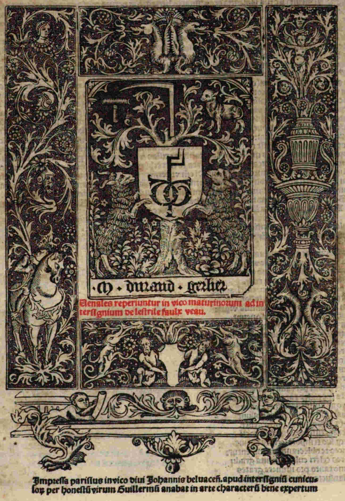

Medulla dyalectices
Pardus, Hieronymus
Paris, 1505
München, Bayerische Staatsbibliothek -- 2 Ph.sp. 35
Medulla
Dialectices edita a perspicacissimo artium praeceptor Hieronymo
Pardo. Ferme graviores difficultates logicas acutissimae dissolvens,
omnibus dialectice studiosis plurimum accommoda, de novo correcta et
emendata cum tabula notabilium et propositionum disputatarum iuxta
materiam et ordinem foliorum et capitulorum, per honorandos
magistros: magistrum Iohannem Maioris in Sacra Theologia baccalarium,
necnon per acutissimi ingenii virum magistrum Iacobum Ortiz, quia
postremo ipsam cum augmento castigavit eique tabulam supradictam
apposuit.
Iacobus Ortiz illustri
viro domino Petro de Meneses, magistro subtilissimo. Salutem dicit
plurimam.
Non possem
verbis consequi vir inclite quanto ardore, quantoque desiderio
saepius affectaverim ut qualicumque officio me, iamdudum tibi amicum,
aliquando ad inserviendum promptissimum esse cognosceres. Cum enim
mecum tacitus considero aut potius admiror egregias animi tui dotes,
non parvum mihi videtur inter eius amicos iamiam numerari, qui nedum
est sanguinis nobilitate, clarissimus verum doctrina et ingenuitate
morum ac omni virtutis genere ornatissimus.
Liceat mihi vera referre si mihi data foret facundia laudem tuae
domus (quae sicut tuorum maiorum rei militaris scientia, virtute
animi, et sua in regendis adversus Sarracenos aliasque nationes
exercitibus auctoritate ac felicitate gestorum, semper claruit). Sic
tua sapientia et optimarum litterarum peritia, conservatam, immo,
verius adauctam demonstrare conarer. Quo sit ut tu progenies non
tamtum armis decorata, sed bonis adornata litteris, in perpetua
gloria vivet.
Sed ut ingenue profitear quaedam eloquentissimum oratorem
deposcunt haec omnia. Parva tamen istis diebus mihi se obtulit
occasio per quam ex re etiam minima meum erga te, animum perpendere
possis. Cum enim magister Durandus Gerlier, huius universitatis
bibliopola iuratus et publice utilitatis, studiosissimus quendam
magistrum in dialecticis famatissimum rogasset ut, illius Hieronymi
Pardo quondam regentis mei
occultarum veritatum indagatoris profundissimi, editionem quam
Dialectices Medullam dicunt, emendaret.
Isque emendator pro viribus manum supremam imposuisset, forte
tamen aut errorum multitudine taediosa, aut aliis causis impeditus.
Non plene in omnibus correctam reliquit huius rei admonitus dictus
magister Durandus, me obnixe rogavit ut eam diligentius secundum
ipsius authoris phantasiam (quam tum consuetudine tum multis
collocutionibus inter me et dictum authorem dum vivere, habitis
cognoveram) plenius emendarem. Cuius precibus et propter amicitiam
quae mihi fuit intima cum dicto Hieronymo et potissimum ut meum tibi
dedicarem laborem, hanc dialectices medullam, aliquando tardius cum
eius aliquantula pars impressioni fuisset demandata, adhuc tamen
opportune emendandam, assumpsi.
In ea autem emendatione mihi necesse fuit cum multa ex primo
exemplari, quod solum apud me erat, addere tum non pauca quae
transmutationem et correctionem desiderabant ex mente authoris
immutare. Haec igitur secunda erit priori impressioni fidelior, cui
tabulam contentorum declarativam et rerum universarum iudicem
addidimus.
Hanc itaque operam quamtulacumque sit tuo nomini dedicandam
curavimus. Non quod intendam te ad studium logices cohortari, quippe
qui noverim quantus qualisque in logicalibus existas et quod eam
artem perfectissime calleas, tamen fortasse studiorum voluptate
aliquando, recreationis causa, in ea te exercebis. Et ut confido
eorum qui, ingenii ruditate eius, argutias intelligere nequeunt,
reprimes audaciam.
Hic enim, ut cernere licet, plerumque contemptu scientiae tam
utilis et ad caeterarum scientiarum apicem, conscendere volentibus
tam necessarie in tanta prorumpunt convicia, ut merito talium sit
arguenda temeritas.
Eorum tamen insipientiam non multum admiror, satis enim vulgatum
est proverbium illud: “Scientia, praeter ignorantem, inimicum habet
neminem.”
Sed haec satis.
Vale et me ut soles ama.
Ex regali Collegio Navarrae, pridie Idus Decembres, anno domini
M.ccccv.
Nicolai Chappusot Bisuntici Rubei montensis ad huiusce operis
lectorem epigramma.
Optima priscorum et aetas celebranda virorum
Et merita semper laude ferenda venit.
Sedula namque suis prodesse laboribus optans
Traxit ab ingenio postera secla rudi.
Caecus amor rerum hanc nullis innexuit hamis
fortia nec potuit vincere corda labor.
Quos etenim terrena lues stimulantius urget
Praemia nullius laudis habere queunt.
Horum igitur vacue pulsa caligine mentes
Summam operam ingenuis artibus usque dabant.
Quarum inter logice commercia clara renidet.
Quae tenero caste Palladis orta sinu est.
Haec animos scabra rubigine purgat adesos
Squalens ut ferrum vomeris aspra silex.
Pervius ad reliquas patet hac incessus ad artes
Ducit et ad rectam per vada tuta viam.
Cuius inaudita hic codex rata dogmata pandit
Dogmata quae nullis nota fuere viris.
Nam quae rimari sollerti indagine possunt
Hoc opus (et si fas dicere plura) tenet.
Chrysippi superat centena volumina docti
Et quaecumque suo tempore scripta fuerunt.
Callida si logices te oblectamenta morentur
Huc properes celeri culta iuventa gradu.
Atque Hieronymo tanto pro munere grates
Candide mansueto pectore lector habe.
Capitulum
primum de veritate et falsitate
 Apud
Platonem entheate scripto relictum est: “Non est divinius aliquid
de quo homo consulere queat”, quam de eruditione fuit atque
suorum”. Quocirca creberrimis studiosorum quorundam adolescentium
cohortationibus iamdudum adductis, nonnulla quae mihi ad eorum
utilitatem visa sunt accommoda, pro exigua virium mearum facultate
componere institui. Ut autem ipsorum in dialectica augeatur studium.
Exponibilium materiam quae amplum requirit tractatum posthac
scripturus, difficilem philosophiam quae de intensione dicitur Deo
auspice eidem annectam.
Apud
Platonem entheate scripto relictum est: “Non est divinius aliquid
de quo homo consulere queat”, quam de eruditione fuit atque
suorum”. Quocirca creberrimis studiosorum quorundam adolescentium
cohortationibus iamdudum adductis, nonnulla quae mihi ad eorum
utilitatem visa sunt accommoda, pro exigua virium mearum facultate
componere institui. Ut autem ipsorum in dialectica augeatur studium.
Exponibilium materiam quae amplum requirit tractatum posthac
scripturus, difficilem philosophiam quae de intensione dicitur Deo
auspice eidem annectam.
Et quoniam logici consideratio circa verum et falsum versatur, in
hoc primo capitulo conveniens est declarare quid propositio vera,
quid falsa, quid necessaria, quid contingens, quid possibilis et quid
impossibilis.
Pro cuius ostensione sciendum est quod omnes nituntur ostendere
veritatem et falsitatem, similiter necessitatem et contingentiam,
possibilitatem et impossibilitatem propositionum ex parte significati
propositionis, quod vocatur complexe significabile. Ideo primo
illucidandum est quid est complexe significabile seu significatum
propositionis.
Utrum complexe significabile distinguatur a
significatis extremorum nec ne
Et solet quaeri quaestio sub hic verbis an complexe significabile
distinguatur a significatis extremorum, ut ista propositio: “homo
est animal”, a significatis extremorum. Ut ista propositio: “homo
est animal”, significat ‘hominem esse animal’. Dubium est utrum
‘hominem esse animal’ significat sit ipse homo existens animal,
an ab illis distinctum.
Unde una conclusio est certa in hac materia, quod complexe
significabile non est aliqua compositio terminorum.
 Si
enim ‘hominem esse lapidem’ esset aliqua compositio terminorum,
sicut ego possem facere istam compositionem terminorum, possem
facere ‘hominem esse lapidem’, quod est falsum.
Si
enim ‘hominem esse lapidem’ esset aliqua compositio terminorum,
sicut ego possem facere istam compositionem terminorum, possem
facere ‘hominem esse lapidem’, quod est falsum.
Ad istam quaestionem est duplex modus respondendi famosus pro
primo modo dicendi ponuntur tres conclusiones:
Prima conclusio: complexe significabile seu significatum
adaequatum propositionis non est aliquis existens ut ista propositio:
“homo est animal”, significat ‘hominem esse animal”. ‘Hominem
esse animal’ non est aliquid existens,
similiter dicatur de aliis complexe significabilibus.
Et si quaeras utrum possit concedi quod complexe significabilia
sint aliquid, respondet haec opinio quod aliquid est et res
tripliciter possunt capi:
Uno modo large, pro omni complexe
significabili, sive sit verum sive falsum. Et hoc modo capit
Philosophus in Postpraedicamentis cum dicit ab eo quod res est vel
non est, oratio vera vel falsa dicitur. Id est, ab eo quod complexe
significabile dicitur verum vel falsum, oratio vera vel falsa
dicitur. Sed qualiter propositio dicatur vera vel falsa a complexe
significabili postea dicetur. In quo dicto satis patet Aristotelem
cepisse rem pro complexe significabile.
Alio modo capitur res magis stricte pro
complexe significabili vero. Et hoc modo capit Aristoteles in primo
Posteriorum cum dicit quod non est ens non scitur. Vult enim habere
quod scientia non habetur de complexe significabili falso, sed solum
de complexe significabili vero.
Tertio modo capiuntur isti termini:
res, ens, aliquid. Strictissime ut significant aliquam entitatem
existentem in rerum natura. Hoc modo ens dividitur in substantiam et
accidens in creatorem et creaturam. Ita quod nihil est substantia vel
accidens, creator vel creatura, nisi sit ens.
Tertio modo, id est, non sunt aliquid existens, non sunt creator
neque creatura, substantia aut accidens. Ita quod si quis quaerat an
Deum esse sit Deus, dico quod non est D eus
neque creatura, substantia aut accidens, quia solummodo ens tertio
modo est substantia vel accidens, Deus vel creatura.
eus
neque creatura, substantia aut accidens, quia solummodo ens tertio
modo est substantia vel accidens, Deus vel creatura.
Et si dicas absurdum est dicere quod aliquid est, quod non est
Deus neque creatura; ergo complexe significabilia sunt Deus vel
creatura, responderet quod inconveniens est quod sit aliquid tertio
modo et quod non sit creator neque creatura. Sed non est inconveniens
quod aliquid primo vel secundo modo non sit creator neque creatura.
Quapropter si argueretur: ista propositio: “‘hominem esse
animal’, est aliquid”, est una affirmativa cuius subiectum pro
nullo supponit; ergo est falsa.
Respondetur distinguendo antecedens: aut pro nullo supponat, ut ly
‘nullo’ includit ens tertio modo, et sic conceditur. Aut ut
includit ens primo vel secundo modo et sic negatur.
Dico enim quod sufficit quod subiectum supponat pro aliquo,
capiendo aliquid primo, secundo modo, sive tertio modo.
Ex isto modo declarandi infertur quod nullae propositiones habent
idem significatum, et quod omnes propositiones non sunt aliud quam
unus terminus simplex. Idem enim et diversum non proprie attribuitur
nisi rei existente. Ideo complexe significabile non et aliud nec idem
cum non sit existens.
Verum multoties doctores utuntur his vocabilis: aliquid, aliud,
diversum. Attribuendo non existenti. Nam, inquit Anselmus, multa
dicuntur aliquid secundum formam loquendi, quae non sunt aliquid
quoniam sic loquimur de eis sicut de rebus exsistentibus. Hoc satis
explanat doctor cuius est iste modus dicendi.
Concedit praeterea doctor iste, quod omnia peccata actualia sunt
complexe significabilia. Similiter omnia merita, et si alicubi
reperiatur, dilectio Dei est meritum, odium Dei est peccatum, non
sunt intelligendae illae propositiones quod illa qualitas existens in
anima sit meritum vel peccatum, cum illa effective a Deo producatur.
Sed Sortem diligere Deum est meritum, et Sortem odire Deum est
peccatum. Iuxta illud Iohannis primo. Sine ipso factum est nihil, id
est, peccatum quod non est aliqua entitas nec tamen Petrum odire Deum
semper fuit peccatum. Sed quando fuit complexe significabile verum.
 Contra
istam primam conclusionem arguit primo unus doctor: accepto hoc
complexe significabile ‘Deum esse’, quaero an includat formaliter
‘Deum’ aut non. Sed sunt omnino disparata si secundum sequeretur
quod aliquis posset intelligere ‘Deum esse’, qui tamen non
intelligeret ‘Deum’ , quod est manifeste falsum. Si primum
habetur intentum non enim videtur imaginabile aliquid formaliter
includere entitatem quin ipsum sit ens.
Contra
istam primam conclusionem arguit primo unus doctor: accepto hoc
complexe significabile ‘Deum esse’, quaero an includat formaliter
‘Deum’ aut non. Sed sunt omnino disparata si secundum sequeretur
quod aliquis posset intelligere ‘Deum esse’, qui tamen non
intelligeret ‘Deum’ , quod est manifeste falsum. Si primum
habetur intentum non enim videtur imaginabile aliquid formaliter
includere entitatem quin ipsum sit ens.
Et confirmatur: omne illud quod componitur ex aliquibus
existentibus est aliquid existens, sed complexe significabile
componitur ex aliquibus existentibus; igitur complexe significabile
est aliquid existens. Maior est nota, et minor probatur, quia capio
illud complexe significabile ‘hominem esse animal’. Illud
complexe significabile componitur ex homine et animali.
Pro huius argumenti dissolutione quod opinionem directe impugnat,
inquirendum est an illa res quae est homo importetur per ly
‘hominem’, quod si ita est, mirum est quomodo ex illa resultat
unum nihil. Scilicet, complexe significabile.
Respondeo: occulta significatio illius infinitivi ‘esse’ fuit
in hanc diversitatem occasio deveniendi, quod enim significatur per
ly ‘hominem’ aliquid est. Similiter quod significatur per ly
‘animal’ aliquid; ergo non existentiam ex parte de ly ‘esse’
coacti ponunt provenire. Quae autem sit significatio de ly ‘est’
postea ostendetur.
Istam ergo entitatem fingendo diceretur quod ‘hominem esse
animal’ suo modo est una entitas. Sicut aliqua res existens, et
quodammodo se habet ad hominem et animal, sicut totum ad partes.
Illa res quae est ‘homo’ est unum incomplexe
significabile
 Posset
etiam probabiliter dici quod illa res quae est ‘homo’ ut est unum
complexe significabile, id est, ut cognita quodammodo potest dici
pars illius, et ipsa non habet existentiam ut sic cognita. Quod est
dicere quod dato quod non existere, esset incomplexe significabilis,
et pars suo modo complexe significabilis. Et ita assimilaretur illis
secundis intentionibus, quas ponit Doctor Subtilis, fundari in re,
secundum esse cognitum, et non secundum esse reale.
Posset
etiam probabiliter dici quod illa res quae est ‘homo’ ut est unum
complexe significabile, id est, ut cognita quodammodo potest dici
pars illius, et ipsa non habet existentiam ut sic cognita. Quod est
dicere quod dato quod non existere, esset incomplexe significabilis,
et pars suo modo complexe significabilis. Et ita assimilaretur illis
secundis intentionibus, quas ponit Doctor Subtilis, fundari in re,
secundum esse cognitum, et non secundum esse reale.
Et consequenter diceretur quod sicut iste doctor vocat complexe
significabilia entia large, ita incomplexe significabile ut
‘Antichristus’ est ens, large capiendo ‘ens’, ut se extendit
ad incomplexe significabile. Nec tamen omnino simile est de complexe
significabile et incomplexe significabili, quia illam entitatem, quae
de facto est complexe significabile, non es possibile existere in
rerum natura, bene, autem, illam quae est incomplexe significabile;
ideo difficile est sustinere talia figmenta.
Et si quis arguat omen illud quod percipitur a sensu exteriori est
aliquid existens, ista propositio a communioribus et verioribus
philosophis concessa est. Sed illa entitas quae est complexe
significabile percipitur a senus exteriori. Patet ex eo quod visus
percipit ‘albedinem esse’ quae est significatum istius: “albedo
est”.
Respondeo: visus non percipit illud complexe significabile, nisi
forsitan tenetur quod sensus exterior potest habere notitias
propositionales. Si ergo concedatur quod percipit ‘albedinem esse’,
hoc est verum in isto sensu, id est, percipit albedinem esse, quae de
facto est.
Phantasia tamen potest illud percipere tenendo communiorem
opinionem. Illa enim potest esse non existens. Per hoc ad argumentum
dicendum est enim quod non potest quispiam intelligere ‘Deum esse’
quin intelligat Deum. Saltem sub ratione incomplexe significabilis,
quia includit illud quasi partem.
Secundo arguitur contra conclusionem et gratia exempli capio istam
propositionem:
“homo est animal”.
Si ista propositio: “homo est animal”, significet ‘hominem
esse animal’, quod secundum te non esset aliquod existens, aut
significat naturaliter proprie aut naturaliter communiter, aut ad
placitum, sed nullum est dicendum.
Non primum: quia sola notitia vel conceptus significat naturaliter
proprie illud quod per ipsum cognoscitur. Modo loquor de ista vocali:
“homo est animal”, et clarum est de ista vocali: “homo es
animal”, quae non significat naturaliter proprie ‘hominem esse
animal’.
Neque est dicendum secundum: puta quod significet naturaliter
communiter ‘hominem esse animal’ quia nihil significat
naturaliter communiter alius a se.
Neque est dicendum tertium: scilicet quod significet ad placitum,
quia si significet ad placitum ‘hominem esse animal’ aut hoc esse
secundum se totam, aut secundum suas partes non secundum se totam.
Quia illud complexe significabile ‘hominem esse animal’ non
significatur per aliquam partem istius propositiones: “homo est
animal”.
Neque est dicendum primum: puta quod significet ‘hominem esse
animal’ secundum se totam quia nullus imposuit ad significandum
istam propositionem: “homo est animal”, secundum se totam, quia
infinite propositiones formarentur, quasi similes, quae numquam
fuerunt formatae; ergo non imposuit aliquis ad significandum illas
propositiones, vel oporte dicere quod cum quis format propositionem
imponit eam ad significandum, quod est inconveniens.
Ad istud argumentum respondeo quod ista propositio est vocalis:
“homo est animal”, ad placitum significat ‘hominem esse
animal’.
Et cum dicitur ista propositio: “homo est animal”, numquam
fuit imposita ad significandum ‘hominem esse animal’.
Respondeo: istam orationem: ““homo est animal” esse
impositam ad significandum ‘hominem esse animal’”, potest
intelligi dupliciter:

Vel quod fuit imposita ad significandum
‘hominem esse animal’ primarie et immediate, et sic dico quod
non, quia sola incomplexa primarie et immediate fuerunt imposita ad
significandum.
Alio modo potest intelligi quod fuerit
imposita ad significandum mediate, et sic ex consequenti vel
secundario. Et sic dico quod sic, nam significatum propositionis
quodammodo videtur ex significatis partium resultare. Et ideo qui
imposuit ad significandum partes propositionis ex consequenti
imposuit ad significandum ipsam propositionem. Et si arguatur capta
ista propositione vocali: “buf est buf”, illa significat ad
placitum ‘buf esse buf’. Hoc autem non est ex impositione
partium.
Respondeo: et si hoc non sit ex impositione subiecti aut
praedicati bene tamen ex impositione copulae, ut in secundo capitulo
ostenditur.
Si ulterius inferretur si quaelibet propositio habet suum proprium
complexe significabile sequeretur quod tot essent complexe
significabilia quot sunt propositiones possibiles, et sic actu esset
infinita multitudo entium secundo et tertio modo.
Respondeo: hoc sequens necessario haec opinio habet concedere, ut
satis intuenti notissimum est, nec solum oporteret processum
infinitum inferre ut aliqui inferunt, quia si ‘homo’ est,
‘hominem esse’ est, et ulterius significatio ‘hominem esse est’
est, et sic in infinitum, sed etiam infinitas est concedenda.
Tertio sic arguitur: omne illud quod causat suam notitiam est
aliquid existens.
Ista propositio est clara, quia nihil causat suam notitiam quod
non est, unde illud quod non est neque totaliter, neque partialiter
potest aliquid causare, cum causare saltem in genere causae
efficientis materialis vel formalis existentis sit proprietas. Sed
complexe significabile causat suam notitiam; igitur complexe
significabile est existens. Minor probatur, quia intellectus
cognoscit hominem esse animal et illa notitia non causatur nisi ab
illo complexe significabili ‘hominem esse animal; igitur complexe
significabile causat notitiam.
Respondetur quod necesse est dicere quod notitia quae habetur de
complexe significabili non causatur effective ab illo complexe
significabili, quia ut bene probat argumentum, illud quod non est
existens non potest causare aliquid existens, necesse est ergo dicere
quod notitia complexe significabilis ab alio causatur quam a complexe
significabili.
Et si dicas a quo causatur notitia complexe significabilis, dico
quod duplex est:
Complexe significabile quoddam est per
se notum et notitia illius causatur ex notitiis extremorum ut ista
propositio per se nota: “omne totum est maius sua parte”. Notitia
sui significati causatur ex notitia totius et ex notitia partis, et
ex notitia huius quod est maius.
Aliud est complexe significabile non
per se notum, et illud est duplex: quoddam est contingens aliud est
necessarium:
Tunc dico quod notitia complexe
significabilis contingentis causatur ex notitiis extremorum
intuitivis vel saltem ex habitibus derelictis ex notitiis intuitivis.
Ut notitia huius quod est Petrum currere causatur ex notitia Petri et
ex notitia cursus.
Sed aliud est complexe significabile
necessarium tamen non per se notum. Et notitia illius causatur ex
notitiis aliorum complexe significabilium. Ut ‘cognosco hominem
esse risibilem’, quia cognosco ‘hominem esse rationalem’.
Ista tamen materia habet videri in libris Posteriorum. Et licet
aliquomodo per ista dicatur de notitia complexe significabilis veri,
non tamen de notitia saltem iudicativa complexe significabilis falsi.
Sed de ista: erroris causatione Philosophiae relinquitur
discutiendum, unde notitiae imperfectae similium: “Erroris quo unum
creditur aliud sunt causative”. Assensus autem, qui fides est,
quandocumque ex assensu altero causatur, qui opinio est. Opinio enim,
cum affectione voluntatis, assensum firmum, qui fide est, causare
potest.
 Similiter
utrum scientia habeatur de conclusione vel de significato
conclusionis dubium est, et probabilis est dicere quod habetur de
signato propositionis. Sed hoc dimittatur, quia pertinet ad materiam
librorum Posteriorum, etiam de ista materia fit mentio in
appellatione rationis.
Similiter
utrum scientia habeatur de conclusione vel de significato
conclusionis dubium est, et probabilis est dicere quod habetur de
signato propositionis. Sed hoc dimittatur, quia pertinet ad materiam
librorum Posteriorum, etiam de ista materia fit mentio in
appellatione rationis.
Secunda conclusio principalis quae est de verificatione complexe
significabilium ad invicem est ista:
omnis propositio affirmativa est falsa in qua subiectum
supponit pro complexe significabili et praedicatum similiter.
Nisi complexe significabile importatum per subiectum importetur
per propositionem synonymam. Illi quam importat complexe
significabile pro quo supponit praedicatum ut ista est vera ‘Marcum
currere est Tullium currere”.
Ista tamen est falsa: “‘Sortem esse hominem’ est ‘Sortem
esse animal’”. Haec conclusio est contra doctorem cuius est iste
modus qui defenditur. Ipse enim concedit hanc propositionem: “
‘hominem esse animal’ est ‘hominem esse substantiam”. Quia
similiter ista esset vera: “‘Sortem esse Deum’ est ‘ens esse
Deum’”, quod est falsum, quia ex ipsa cum una vera sequitur una
falsa.
Sic arguendo: “‘Sortem esse Deum non est possibile”, sed:
“Sortem esse Deum est ‘ens esse Deum”; ergo “‘ens esse
Deum’ non est possibile”, consequens est falsum.
Ergo aliquam praemissarum non maior, ergo minor, et per consequens
habetur intentum.
Contra istam conclusionem arguitur sic: ista est concedenda:
“‘hominem esse animal’ est ‘hominem esse substantiam’”,
igitur conclusio falsa”.
Antecedens patet quia ista est concedenda: “‘hominem esse
anima’ est ‘hominem esse animal’”, et tunc fiat descensus sub
subiecto et ita habebitur quod haec est concedenda: “‘hunc
hominem esse animal’ est ‘hominem esse animal’”.
Quodlibet complexum supponens pro complexe
significabili est terminus singularis
Respondeo: quodlibet complexum supponens pro complexe
significabile est terminus singularis., quia sibi repugnat supponere
pro pluribus, sicut enim Sortes est una res singularis ita
significatum istius “homo est animal” suo modo est una res
singularis.
Ex quod patet quod omnium propositionum synonymarum est idem
complexe significabile singulare,
et propositionum non synonymarum non potest esse idem complexe
significabile. Ideo si aliquae propositiones aequivaleant in
inferendo tantum, et non in significando, earum non est idem complexe
significabile, licet ad complexe significabile unius sequatur
complexe significabile alterius.
Si ergo istae duae: “non quilibet homo est animal”, et “quidam
homo non est animal”, tantum in inferendo aequivalent, earum non
est unum complexe significabile.
Unde complexe significabilia dicantur vera aut
falsa
Et si arguatur: sic sequitur ex dictis quod haec negativa est
concedenda: “‘hominem esse animal’ non est ‘hominem esse
substantiam’”, quod est falsum, quia ex ista infertur haec
propositio de praedicato infinito: “‘hominem esse animal’ est
‘non hominem esse substantiam’”, quae falsa est secundum dicta.
Respondeo: ly ‘non’ ex parte praedicati dupliciter sumi
potest:
Uno modo ut se tenet ex parte complexe
significabilis illius propositionis: “non homo est substantia”,
et sic est falsa, ut patet ex dictis.
Alio modo capitur ut tantum negat illud
complexe significabile ‘hominem esse substantiam’ et non se tenet
ex parte complexe significabilis, et sic est vera.
Et similiter dicendum est de ista propositione: “‘hominem
currere’ est ‘hominem currere’ vel ‘hominem non currere’”,
nam si ly ‘vel’ capiatur ut se tenet ex parte complexe
significabilis illius propositionis: ““homo currit” vel “homo
non currit””, falsa est. Si vero ly ‘vel’ coniungit duo
complexe significabilia vera est.
 Per
ista patet ad argumentum, nam non licet sub subiecto descendere eo
quod est terminus singularis.
Per
ista patet ad argumentum, nam non licet sub subiecto descendere eo
quod est terminus singularis.
Sed replicaret quispiam fortiter quaerendo sub ly ‘hominem’
descendendum, quia ly ‘hominem’ communiter supponit, et sic
semper difficultas remanet. Unde capta ista propositione: “‘omnem
hominem esse animal’ est ‘omnem hominem esse animal’”, ly
‘hominem’ videtur distribui et facto descensu, descendentes sunt
falsae, nam ista est falsa: “‘hunc hominem esse animal’ et
‘omnem hominem esse animal’.
Respondeo: secundum unum modum dicendi non liceret sub parte ista
descendere, quia totum unica acceptione accipitur, quod si non
teneatur, difficile est defendere istum modum de complexe
significabilibus, nam si fiat descensus, semper erit falsa ex ea
parte qua fit descensus.
Tertia conclusio: complexe significabilia dicuntur vera vel falsa,
necessaria vel contingentia, possibilia vel impossibilia, et a
talibus complexe significabilibus propositiones dicuntur verae vel
falsae, necessariae vel contingentes, possibiles vel impossibiles.
Unde si quaeratur isti opinioni: quare aliqua propositio est vera.
Respondet: quia significatum adaequatum est verum. Et quare falsa.
Quia significatum adaequatum est falsum.
Et secundum hoc bene dicebat Petrus Hispanus: “propositio est
oratio verum vel falsum significans”. Similiter propositio dicitur
necessaria quia significatum adaequatum seu complexe significabile
est necessarium, et sic de aliis.
Et si ulterius quaeratur illi opinioni: quare significatum
adaequatum alicuius propositionis est verum. Respondet quod ideo,
quia est iudicatum a prima veritate quae est Deus, quae est omnium
verorum verissimum iudicium.
Ideo infero quod veritas primo et per se et principalissime
reperitur in iudicio divino seu est iudicium divinum. Sed per se et
non primo invenitur in complexe significabili. Per accidens in signo
creato. Puta in propositione vocali, mentali vel scripta.
Contra istam conclusionem arguitur primo sic: quia licet iste
modus ostendat quare complexe significabilia dicantur vera non tamen
ostendit quare complexe significabilia dicantur falsa.
Arguitur enim sic: si complexe significabilia dicuntur vera a
prima veritate; ergo complexe significabilia dicuntur falsa ab una
prima falsitate, et tunc duo essent ponenda: unum quod non potest
iudicare nisi verum, scilicet, Deus, et aliud quod non potest
iudicare nisi falsum, quod vocaretur prima falsitas, quod est
absurdum et haereticum.
Ad hoc responderetur secundum doctorem istum: quod licet complexe
significabilia dicantur vera a prima veritate, non tamen dicuntur
falsa a prima falsitate, cum nulla talis sit prima falsitas. Et si
quaeras quare, ergo complexe significabilia dicuntur falsa. Dico quod
ideo dicuntur falsa, quia non iudicantur a prima veritate seu quia
prima veritas non eis assentit.
Ut si quaeratur quare ista propositio: “homo est animal”, est
vera, respondet: quia significatum eius est verum, scilicet, ‘hominem
esse animal’.
Et si quaeratur ulterius quare ‘hominem esse animal’ est
verum, respondet: quia Deus iudicat ‘hominem esse animal’.
Et si arguatur si per impossibile Deus non esset, adhuc istud
complexe significabile ‘Deus non est’ esset verum et tamen non
diceretur verum, quia iudicatur a prima veritate, quia tunc non esset
veritas prima; igitur iste modus non est sufficiens.
Respondeo: ad impossibile sequitur quodlibet, speciali ad illud
impossibile, et ideo, si Deus non esset verum esset ‘Deum non
esse’, et falsum esset ‘Deum esse’.
Propter illud argumentum ponunt aliqui moderni unum modum dicendi:
quod complexe significabile, ideo, dicitur verum quia ita est
qualiter est si sit affirmativum, vel quia non est ita qualiter non
est, si sit negativum. Sic dico in proposito quod, si per impossibile
Deus non esset, ‘Deum non esse’ esset verum. Quia ‘Deum non
esse’ taliter non est qualiter non est.
 Sed
aliter modus dicendi est pulchrior. Dico enim quod ita esse est a
iudicio divino, unde homo est animal, quia Deus iudicat ‘hominem
esse animal’ cum solus ipse est via et veritas, et alia quasi
extrinseca denominatione dicuntur. Vera pro quanto iudicium divinum
super ipsa fertur.
Sed
aliter modus dicendi est pulchrior. Dico enim quod ita esse est a
iudicio divino, unde homo est animal, quia Deus iudicat ‘hominem
esse animal’ cum solus ipse est via et veritas, et alia quasi
extrinseca denominatione dicuntur. Vera pro quanto iudicium divinum
super ipsa fertur.
Et si iterum dicas: sequitur quod duo sic se habentia quorum unum
est necessarium et aliud contingens, diceretur vera ab eadem
veritate. Probatur consequentia et capio ista duo complexe
significabilia, scilicet: ‘Deum esset’ et ‘hominem currere’.
Ista dicuntur vera ab eadem veritate, puta, a prima, et tamen unum
est necessarium et aliud contingens.
Respondeo quod illa duo sunt vera a prima veritate et tamen unum
est necessarium quia necessario iudicatur a prima veritate, et aliud
est contingens, quia contingenter iudicatur a prima veritate, et hoc
non est inconveniens.
Sed adhuc obiiciet aliquis quia si hoc esset verum sequeretur quod
aliquae veritates essent aeternae praeter Deum, quod est contra
articulum Parisiensem.
Antecedens patet, quia illud complexe significabile ‘hominem
esse animal’ ab aeterno fuisset verum, vel saltem illud ‘hominem
non esse asinum’, quia Deus ab aeterno iudicavit hominem non esse
asinum.
Respondetur quod: “esse aliquas veritates ab aeterno”, potest
intelligi dupliciter:
uno modo per denominationem intrinsecam
sic, videlicet, quod ab aeterno fuerint aliqua existentia in rerum
natura, quae dicuntur vera, et hoc modo dicit quod non. Et istum
sensum negat articulus Parisiensis “aliquas veritates esse ab
aeterno”.
Alio modo potest intelligi quod aliquae
veritates sint ab aeterno per denominationem extrinsecam. Ita,
videlicet, quod aliqua complexe significabilia quae sint entia large
sunt iudicata a Deo esse vera ab aeterno. Et hoc modo non est
inconveniens.
Notitia enim Dei denominatur necessaria vel contingens secundum
quod fertur in obiectum necessarium vel contingens. Et ut dictum est
de veritate, dicatur de possibilitate.
Utrum ista sit possibilis: “omne ens est Deus”
Significatum enim dicitur possibile quia potest iudicari a prima
veritate, ut si quaeratur utrum ista sit possibilis: “omne ens est
Deus”.
Dico quod sic, quia significatum adaequatum est possibile,
scilicet, “omne ens est Deum”, et illud significatum dicitur
possibile, quia potest iudicari a prima veritate.
Et si dicas: “significatum istius propositionis: “omne est est
Deus”, non est possibile; ergo ista propositio: “omne ens est
Deus”, non est possibilis”.
Antecedens patet, quia ista propositio: “omne ens est Deus”,
significat ‘Sortem esse Deum’ et hoc non est possibile; ergo ista
propositio: “omne ens est Deus” non est possibilis.
Respondeo: ista propositio: “omne ens est Deus”, de
significatione inadaequata, seu secundari, seu partiali, quod idem
est, significat ‘Sortem esse Deum’. Non tamen dicitur
significatione totali adaequata seu primaria. Immo, de significatione
adaequata significat ‘omne ens esse Deum’ et hoc est possibile.
‘Sorte’ tamen, secundum istum modum dicendi, non esset dicendum,
quod ista: “omne ens est Deus” significat ‘Sortem esse Deum’,
id est, hoc complexe significabile ‘Sortem esse Deum’.
 Alius
est modus dicendi qui licet verus multas tamen oppugnationes patitur,
ut contra veritatem plerumque contingere solet.
Alius
est modus dicendi qui licet verus multas tamen oppugnationes patitur,
ut contra veritatem plerumque contingere solet.
Pro quo ponitur talis conclusio:
complexe significabile seu significatum propositionis non
distinguitur a significationibus terminorum.
Ut ista propositio: “homo est animal”, significat ‘hominem
esse animal’. Tunc dicit quod ‘hominem esse animal’ non
distinguatur ab hominem, et animali, seu ab illis quae significantur
per istos terminos ‘homo’ et ‘animal’.
Et si dicas; ergo talia non debent dici complexe significabilia
patet, quia non differunt ab illis quae significantur per istos
terminos simplices seu incomplexos.
 Eadem
res potest esse complexe significabile et incomplexe significabile
Eadem
res potest esse complexe significabile et incomplexe significabile
Respondet quod eadem res potest dici complexe significabile et
incomplexe significabile, nam inquantum potest significari per
aliquod complexum vocatur complexe significabile, et inquantum potest
significari per aliquod incomplexum vocatur incomplexe significabile.
Ideo, puta, significari complexe vel incomplexe conveniunt alicui
per denominationem extrinsecam seu ab extrinseco. Ex quod sequitur
quod omnia entia mundi possunt dici complexe significabilia quia omne
ens, quodcumque sit illud, potest significari per aliquod complexum.
Et secundum istam opinionem est unum fundamentum quod omne complexum
seu aggregatum ex partibus aliquibus significat illud idem quod
partes seorsum significant.
Ita, videlicet, quod si volo cognoscere quid significat aliquod
complexum debeo aspicere quid partes seorsum significant.
Declaratur per exempla ut iste terminus ‘homo irrationalis’
significat omnes homines et omnia irrationabilia. Et iste terminus
‘impossibile’ significat tantum quantum istud complexum ‘non
possibile’, et istud complexum ‘non possibile’ significat omnia
possibilia ex parte de ly ‘possibilitate’ et aliqualiter,
scilicet, negative ex parte de ly ‘non’.
Quid iste terminus ‘chimera’ significat
Et iste terminus ‘chimera’ significat tantum quantum istud
complexum ‘ens compositum ex impossibilibus posse componi’. Et
ideo, iste terminus ‘chimera’ significat omnia entia.
Et licet iste terminus ‘chimera’ significat ‘Sortem’, non
tamen potest supponere pro Sorte, quia non potest verificari de Sorte
propter repugnantiam partium. Et similiter dicatur de istis terminus
‘infinitum vacuum’, secundum Aristotelem quia ponebat talia esse
impossibilia.
Quomodo supponunt aggregata ex accusativo et
infinitivo secundum Buridanum
Et si ulterius quaeratur isti modo dicendi pro quo supponunt dicta
aggregata ex accusativo et infinitivo, verbi gratia, quaeritur pro
quod supponit ‘hominem esse animal’.
Respondet quod omne aggregatum ex infinitivo et accusativo potest
capi dupliciter:
Uno modo materialiter.
Alio modo significative materialiter
adhuc dupliciter:
Uno modo pro tali aggregato et quolibet
sibi simili: sive in voce, sive in scripto.
Alio modo pro propositione quae subiacet
tali aggregato.
Et ad videndum pro quo supponunt talia aggregata si capiantur
personaliter, accusativus resolvendus est in nominativum et verbum
suum participium. Ut ‘hominem esse animal’ sic resolvitur, id
est, “homo existens animal”, ‘hominem currere’ est “homo
currens”.
Et tunc videndum est pro quo supponunt illa aggregata ex
nominativo et participio, quia pro illo supponunt aggregata ex
infinitivo et accusativo. Resolvendo igitur si quaeratur quid est
‘hominem ese animal’. Et ‘Antichristum fore’ aequivalet huic:
“Antichristus futurus”. Et sicut Antichristus futurus non est,
sed erit, ita “Antichristum fore” non est, sed aliquid erit.
Hominem esse animal significatur per istum
terminum homo
Ex isto sequuntur aliqua correlaria:
Primo sequitur: quod ‘hominem esse animal’ significatur per
istum terminum ‘homo’. Probatur quia omnis homo significatur per
istum terminum ‘homo’, sed ‘hominem esse animal’ est homo,
ergo ‘hominem esse animal’ significatur per istum terminum ‘homo.
Secundo sequitur: quod ‘hominem ese animal’ est ‘hominem
esse album’, quia sensus est quod “homo existens animal” est
“homo existens album”, et hoc est verum.
Tertio sequitur: quod nihil est ‘omnem hominem esse animal’,
patet quia nihil est “omnis homo existens animal”. Dico tamen
quod ‘omnem hominem esse animal est aliquid, quia “omnis homo
existens animal” est aliquid. Ideo ista est falsa: “haec
propositio: “omnis homo est animal”, significat ‘hominem esse
animal”, licet ista sit vera: “‘omnem hominem esse’ animal
significat”.
Quarto sequitur: quod quaelibet res mundi est ‘nullum hominem
esse asinum’, patet quia quaelibet re mundi demonstrata verum est
dicere: haec res est “nullus homo existens asinus”. Ibi enim ly
‘nullus’ est negatio infinitans, sicut universaliter contingit
quando negatio ponitur post copulam, saltem si non addatur copulae
implicationis.
Sequitur quinto: quod “Deum posse producere b angelum”
aliquid est, sed “b angelum posse produci a Deo” nihil
est. Posito quod ‘b angelus’ non sit productus, quia “Deum
posse producere b angelum” tantum valet sicut “Deus potens
producere b angelum”, et tale aggregatum pro deo supponit.
Sed “ b
angelum posse produci a Deo” tantum valet sicut “b angelus
possibilis a Deo produci” modo tale aggregatum pro nullo supponit.
b
angelum posse produci a Deo” tantum valet sicut “b angelus
possibilis a Deo produci” modo tale aggregatum pro nullo supponit.
Et similiter ‘Deum cognoscere Antichristum’ aliquid est, sed
“Antichristum cognosci a Deo” nihil est.
 Contra
istam conclusionem eo modo quo declaratum est arguit primo unus
doctor significatum istius propositionis: “homo est animal”,
nihil est. Et tamen aliquid esset sic explicando ‘hominem esse
animal’,“homo existens animal”. Igitur illa declaratio est
minus bene posita.
Contra
istam conclusionem eo modo quo declaratum est arguit primo unus
doctor significatum istius propositionis: “homo est animal”,
nihil est. Et tamen aliquid esset sic explicando ‘hominem esse
animal’,“homo existens animal”. Igitur illa declaratio est
minus bene posita.
Minor patet quia haec oratio infinitivi modi ‘hominem esse
animal’ capta significative non supponit pro aliqua re, quod
probatur ex eo, quia illa oratio sic sumpta significat plura,
scilicet, omnia quae significat propositio; ergo non est minor ratio
quare supponat pro uno illorum significatorum magis quam pro alio;
ergo vel pro quolibet vel pro nullo.
Sed nullius diceret quod pro quolibet, quia sic illa oratio
‘hominem esse animal’ supponeret pro asino, ergo pro nullo.
Pro solutione sciendum est quod est una opinio quae primo modo
dicendi est adversa. Sed cum secundo non omnino habet convenientiam
ad cuius ostensionem ponit aliquas conclusiones.
Prima conclusio: licet omne quod est sit complexe significabile,
tamen nihil est significatum adaequatum seu totale alicuius
propositionis. Patet, quia quaelibet talis ratione suarum partium
quibus aequivalet in significando plura significat adinvicem
distincta, et non est maior ratio quod supponat pro uno quam pro
alio, ut deducebatur in argumento principali.
Ex illa propositio sequitur correlarium:
Quod nullius propositionis oratio infinitivi modi, sibi
correspondens, supponit pro aliqua re significative sumpta.
Hoc probatum est de sito dicto ‘hominem esse animal’, quia non
est maior ratio quod supponat pro homine quam pro asino, et ultra
superaddit iste doctor, quod ista quaestio est derisoria et
incongrua, quid est ‘hominem esse animal’, sicut quaeretur quid
est hominem.
Ad cuius declarationem ponit aliqua documenta grammaticalia:
Primum: quaelibet oratio in qua, a parte subiecti, ponitur verbum
infinitivi modi significative sumptum existens totale subiectum, et
acceptum verbaliter, est incongrua. Quia verbum significative sumptum
non potest reddere suppositum verbo; ideo haec est incongrua:
“studere est”.
Dicitur notanter, verbum acceptum personaliter et verbaliter, quia
quandoque verbum infinitivi modi accipitur significative nominaliter,
loco unius nominis verbalis, et tunc est nomen, ut in ista: “sedere
est quiescere”, quae tantum valet sicut ista: “sedens est
quiescens”, et in ista: “legere et non intelligere negligere
est”, et in similibus.
Utrum generare sit generans
Ex quod infert quod illa quaestio est valde superflua, quam aliqui
valde curiose disputant, scilicet, utrum generare sit generans. Quia
si ‘generare’ capiatur verbaliter est incongrua, si nominaliter
tunc est quaere utrum generans sit generas, et manifestum est quod
sic.
Ex isto documento sequitur correlarium:
Quod qualibet oratio in qua a parte subiecti ponitur
verbum infinitivi modi cum accusativo sequente est incongrua.
Ut ista est incongrua: ‘hominem esse animal’ significatur per
istam: “homo est animal”.
Et si arguatur: bene sequitur: “homo est animal” significat
‘hominem esse animal’, ergo ‘hominem esse animal’
significatur. Ille modus arguendi non valet sicut net iste: ‘homo’
significat ‘hominem’; ergo ‘hominem’ significatur antecedens.
Enim est congruum et consequens incongruum.
Ideo si quis quaereret an ‘hominem esse animal’ est verum,
illa distinguenda est, et omnes consimiles aut ly ‘hominem esse
animal’ accipitur materialiter pro propositione quae sibi subiacet,
et tunc est vera, aut ly ‘hominem esse animal’ accipitur
s ignificative
et tunc illa est congrua. Et ita in aliis est distinguendum.
ignificative
et tunc illa est congrua. Et ita in aliis est distinguendum.
Sequitur secundo: quod respectu huius verbi ‘est’
significative sumpti neque a parte ante neque a parte post unquam
construitur infinitivus verbaliter sumptus, vel oratio infinitivi
modi, vel etiam propositio significative sumpta. Unde etiam istae
sunt incongruae loquendo significative seu personaliter: “legere
est bonum”, “occidere est malum”. Nisi capiantur illi
infinitivi materialiter aut nominaliter pro istis nominibus
verbalibus: ‘lectio’, ‘occisio’.
Similiter istae sunt incongruae: “‘hominem esse animal’ est
idem quod “homo est animal””, “‘hominem esse animal’ est
idem quod hominem esse substantiam animatam sensitivam”. Et hoc
loquendo proprie. Improprie tamen, et causa brevitatis, tales
propositiones seu locutiones admittuntur ad hunc sensum quod non
stat, ita esse quod “homo est animal” quin ita sit quod homo sit
substantia sensibilis.
Secundum documentum est quod in talibus verbis solum a parte post
construi potest infinitivus personaliter verbaliter et significative
sumptus, cum quibus potest construi haec oratio imperfecta, quod sic
est, verbi gratia, sicut congrue dicitur: “volo Sortes currat”,
“scio quod homo est animal”. Haec oratio significat quod deus
est. Ita congrue dicitur: “volo Sortem currere”, et sic de aliis,
et ideo istae sunt congrue: “video Sortem currere”, “sentio
ignem esse calidum”.
Secunda conclusio: licet quidquid significatur per aliquam
propositionem, secundum eius totam significationem, significetur per
aliquam eius parte, tamen aliqualiter significatur per propositionem
qualiter non significatur per eius partes. Secunda pars declaratur et
de prima notum est, nam omnibus tenetur qui negant primum modum
dicendi ista propositio: ““homo est animal” significat ‘hominem
esse animal’”, secundum eius totalem significationem, qualiter
non significatur per aliquam eius partem. Istum modum dicendi quod ad
aliqua difficile est sustinere.
Contra ipsum tamen arguitur, nam secundo conclusio manifeste
repugnat primae, quod ostenditur. Nam in secunda conclusione concedit
hanc propositionem: “haec propositio: “homo est animal”
significat ‘hominem ese animal’”. Quaeritur pro quod supponit
ly ‘hominem esse animal’: aut per aliquo, aut pro nullo.
Si pro aliquo ergo maledicit in prima conclusione, quod nullus
propositionis significatum adaequatum est aliquid. Hoc etiam idem
probatur per suam rationem, quia non est maior ratio quod supponat
pro homine quam pro asino; ergo vel pro utroque vel pro neutro. Sed
non pro utroque; ergo pro neutro, et ita habet quod pro nullo
supponit et per consequens est falsa.
Hanc rationem evadere non posset, nisi dicendo quod ly ‘hominem
esse animal’ pro omni ente supponit propter ampliationem quam quam
habet ab illo verbo significat, quod ampliat usque ad imaginabilia
vel potius intelligibilia, et ita ly ‘hominem esse animal’ stat
pro illo quod potest intelligi ‘hominem esse animal’. Sed omne
est potest intelligi ‘homine esse animal’; ergo stat pro omni
ente.
Ista evasio non est multum ad propositum, etiam talis larga
ampliatio in materia ampliationum impugnabitur. Item, simpliciter
loquendo, falsa est illa prima conclusio eo modo universaliter
intellecta sicut ab eo ponitur, nam significatum istius: “Deus est
Deus”, aliquid est. Neque de illo praecedit sua probatio, ut
constat per illam enim propositionem, solus Deus significatur. Quo ad
illa quae superaddit de congruitate.
Secundum documentum non videtur verum, nam istae propositiones
sunt congruae: “Sortes incipit moveri”, “Sortes deberet
solvere”. Et tamen istae sunt incongruae: “Sortes incipit quod
moveatur”, “Sortes debet quod solvat”. Et ita secundum
documentum falsum.
Sed quo ad primum documentum satis esse se defendere, neque ipse
propter illud deberet subterfugere difficultates. Postquam intentio
quaestionis constat, posset tamen aliqualiter argui.
 Primo
quia omnis propositio de verbo activo potest inferre propositionem de
verbo passivo; ergo ista propositio: “volo legere epistulam”,
quam est de verbo activo potest inferre propositionem de verbo
passivo. Et non aliam quam istam: “legere epistulam est volitum a
me”. Igitur illa est congrua si Sorte dicatur, quod illa est
congrua capiendo ly ‘legere’ nominaliter et non verbaliter.
Primo
quia omnis propositio de verbo activo potest inferre propositionem de
verbo passivo; ergo ista propositio: “volo legere epistulam”,
quam est de verbo activo potest inferre propositionem de verbo
passivo. Et non aliam quam istam: “legere epistulam est volitum a
me”. Igitur illa est congrua si Sorte dicatur, quod illa est
congrua capiendo ly ‘legere’ nominaliter et non verbaliter.
Contra: ly ‘epistulam’ est accusativi casus et tamen si ly
‘legere’ esse nomen, deberet esse genitivi casus, ut patet ex
grammatica senus, enim illius esset istae lectio: “epistulae est
volita a me”.
Secundo Aristoteles videtur dicere contra illud documentum in
Postpraedicamentis cum ait quod ‘hominem esse’ et istam esse
veram: ‘homo’ est convertuntur secundum essendi consequentiam,
ubi clarum est quod ly ‘hominem esse’ non accipitur nominaliter.
Sed tantum significative et personaliter.
Item post Aristoteles dicit quod ‘esse hominem’ est causa
veritatis orationis, qua dicitur quod homo est ubi ly ‘esse
hominem’ personaliter accipitur.
 Posset
igitur probabiliter dici ut dicit unus doctor: omnes istas esse
congruas quas negat esse congruas. Dicendo quod infinitivus cum
accusativo potest esse suppositum verbi passivi quando illud
significat illud in quod transit actus importatur per verbum activum,
servata congruitate locutionis.
Posset
igitur probabiliter dici ut dicit unus doctor: omnes istas esse
congruas quas negat esse congruas. Dicendo quod infinitivus cum
accusativo potest esse suppositum verbi passivi quando illud
significat illud in quod transit actus importatur per verbum activum,
servata congruitate locutionis.
Sed sic est quod accusativus cum infinitivo significat id in quod
transit actus importatus per verbum activum, cum regatur ab eo ex vi
transitionis. Actus enim volendi potest transire super actum
comedendi; ergo non videtur repugnare quod terminus infinitivi modi
significet id in quod transit actus importatus per verbum activum,
habens significationem activam.
Ergo omnis talis terminus potest esse suppositum respectu verbi
passivi, quod significat id in quod transit actus importatus per
verbum activum. Haec consequentia tenet, quia idem est in quod
transit actus et quod recipit, et idem est actus importatus per
verbum activum et passivum. Et cum dicebat quod ista est incongrua:
“lego est”, ergo et ista: “legere est”, verbaliter capiendo
ly ‘legere’.
Respondeo: infinitivus caret certo numero et determinata persona,
alia autem verba numerum et personam determinatam habent, ideo
rationabile videtur ut infinitivus possit habere locum personae. Alia
autem verba personam debent habere ex sua natura, id est, debent esse
apposita respectu primae, secundae, tertiae personae, ideo non
possunt supplere vicem suppositorum.
Sed unum quod haec opinio tangebat, videlicet, quod infinitivus
dupliciter dictum propter multas propositiones quae solent concedi et
alias quae solent negari, et quando accipitur verbaliter exponendae
sunt tales propositiones per participium, eo quod participium
quodammodo retinet significationem verbi. Sed quando accipitur
nominaliter per nomen, venit exponenda talis propositio sicut ista
propositio: “ad mereri sequitur praemiari”, recte sic exponitur:
“ad meritum sequitur praemium”, et non sic recte explicaretur:
“ad merentem sequitur praemians”. Et si aliquis casus poneretur
post ly ‘mereri’ deberet esset genitivus vel capi loco genitivi.
Adaequatum significatum propositionis potest
dupliciter sumi
Tunc respondendum est ad rationem principalem quae in primo
documento declarabatur quod totale seu adaequatum significatum
alicuius propositionis potest dupliciter sumi:
Uno modo pro aggregato ex omnibus
obiectis intelligibilibus significatis per propositionem. Et sic dico
quod significatum adaequatum istius propositionis: “homo est
animal”, non est ‘hominem esse animal’.
Alio modo capitur significatum
adaequatum propositionis pro illo pro quo supponit aggregatum ex
infinitivo et accusativo, seu pro quod supponit dictum sibi
correspondens, et hoc modum ‘hominem esse animal’ est
significatum adaequatum illius propositionis: “homo est animal”.
Ideo ‘homo’ est significatum adaequatum illius propositionis cum
‘homo’ sit ‘hominem esse animal’. E t
cum dicitur quod non est ratio quare ly ‘hominem esse animal’
non supponat pro asino.
t
cum dicitur quod non est ratio quare ly ‘hominem esse animal’
non supponat pro asino.
Respondeo quod immo, quia ly ‘animal’ restringitur per ly
‘hominem’.
Si autem quaeras cur restringitur ly ‘animal’ dicendo ‘hominem
esse animal’ et non dicendo: “homo est animal”.
Respondeo quandocumque aliqua se habent ut diversa extrema non
tanquam constituentia unum extremum, tunc ambo restringunt se
invicem. Sed quando se habent tanquam constituentia, unum extremum
totum habet suam acceptionem et una pars alteram restringit secundum
sui exigentiam, quia tunc alterum se habet per modum indistans in
ordine ad aliud.
Tunc ad propositum dico quod si totum hoc: “homo est animal”,
accipiatur in aliqua oratione ut unum extremum, tunc illa duo ‘homo’
et ‘animal’ se invicem restringunt. Ut si admittatur iste modus
loquendi “homo est animal est homo”, accipiendo ly ‘homo et
animal’ personaliter, tunc ly ‘homo est animal’ solum supponit
pro homine, quod enim una tota propositio possit personaliter
supponere in sequentibus ostendetur.
Sed capiendo ly “homo est animal” non er modum unius extremi,
tunc ly ‘animal’ et ly ‘homo’ se habent tanquam diversa
extrema et non sunt partes unius extremi. Ideo non se invicem
restringunt.
Ideo ex his concludendum est quod quando totum: “hoc hominem
esse animal”, se habet per modum unius extremi, tunc ly ‘animal’
et ly ‘hominem’ se invicem restringunt. Et per consequens ly
‘animal’ non supponit pro asino cum quaeritur quid est ‘hominem
esse animal’, et ita vere responderetur quod est homo existens
animal.
Sortem esse patrem Platonis Deus potest facere se
solo
Secundo arguitur sic: si praedicta conclusio sit vera, sequitur
quod ‘Sortem esse Patrem Platonis’ vel ‘generare Platonem’
esset aliquid. Posito quod Sortes sit pater Platonis consequentia est
nota et falsitas consequentis probatur, quia tunc sequeretur quod
esset aliqua entitas realis positiva quam Deus non posset causare se
solo effective, quod est falsum, quia secundum articulum Parisiensem:
“quidquid Deus potest cum causa secunda in genere causae
efficientis, potest se solo”. Sed Deus non potest facere Sortem
esse Parem Platonis absque Sorte; igitur ‘Sortem esse Patrem
Platonis’ non est aliqua entitas.
 Ad
hoc argumentum respondeo sicut respondet unus Doctor, quod ista
propositio: “‘Sortem esse patrem Platonis’ Deus potest facere
se solo”, potest habere duplicem sensum divisionis, scilicet, et
compositionis:
Ad
hoc argumentum respondeo sicut respondet unus Doctor, quod ista
propositio: “‘Sortem esse patrem Platonis’ Deus potest facere
se solo”, potest habere duplicem sensum divisionis, scilicet, et
compositionis:
In sensu divisionis vera est, quia sensus eius est verus,
scilicet, iste: “istam rem quae est vel potest esse: ‘Sortem esse
Patrem Platonis’, Deus potest facere se solo”, et hoc est verum,
quia: Sortes est illa res quae est vel potest esse ‘Sortem esse
patrem Platonis’, et Sortem Deus potest facere se solo.
Sed in sensu compositionis falsa est, quia sensus est iste: talis
propositio est possibilis: “Sortem esse patrem Platonis Deus facit
se solo”. Veruntamen ista est falsa, etiam, in sensu divisio: “Deus
possibiliter facit se solo Sortem esse patrem Platonis”, quia
praedicatum illius modalis divisae est: “illud sed solo faciens
‘Sortem esse patrem Platonis”, quod pro nullo potest supponere
cum de quolibet haec sit impossibilis, hoc est: “faciens se solo
‘Sortem esse patrem Platonis’”. De similibus in materia
modalium ample declarabitur.
Et per idem videretur quod ista esse falsa etiam in sensu
divisionis: “‘Sortem esse patrem Platonis” Deus potest facere
se solo”, quia praedicatum est istud: “‘Sortem esse patrem
Platonis’ faciens se solo”, quod pro nullo potest supponere.
Sed sophista responderet quod immo mediante copula de possibili,
quod nihil est sicut ostenditur in modalibus, in ista tamen
propositione ‘Sortem esse patrem Platonis’ non solum est
difficultas modales respiciens, sed etiam ex parte illius ‘S ortem
esse patrem Platonis’.
ortem
esse patrem Platonis’.
In casu posito tamen de illa difficultate suppositionis obliquorum
in materia de descensu prolixe pertractatur. Satis ergo sit propter
argumentum quod illa propositio: “‘Sortem esse patrem Platonis’
Deus possibiliter facit se solo”, in sensu divisionis vera est, in
sensu compositionis falsa.
Unde breviter eodem modo dicendum est de ista: “‘Sortem esse
patrem Platonis’ Deus potest facere se solo”, sicut de ista:
“‘Sortem existentem patrem Platonis’ Deus potest facere se
solo”.
Voluntatem libere causare potest esse effectiva a
solo Deo
Ista consimiliter esse distinguenda: “‘voluntatem libere
causare’ potest esse effective a solo Deo”, vel de ista:
“‘voluntatem causare’ potest esse totaliter a Deo”.
Deum esse dominum creaturae non potest intelligi
absque creatura
Et etiam ista: “‘Deum esse dominum creaturae’ non potest
intelligi absque creatura”, argueretur enim sic: “Deus potest
intelligi absque creatura, et ‘Deum esse dominum creaturae’ non
potest intelligi absque creatura; ergo ‘Deum esse dominum
creaturae’ non est Deus”.
Respondendum esset quod illa minor habet duplicem sensum:
Unus senus est: illa res quae est ‘Deum
esse Dominum creaturae’ non potest intelligi absque creatura, et
hoc est falsum.
Alius sensus est quod hace est
impossibilis intelligitur ‘Deum esse dominum creaturae’, et non
intelligitur Deus, et iste sensus est verus.
Facio Sortem transire per pontem
Per idem solvitur argumentum, quia si iste modus dicendi sit verus
sequeretur quod non possem facere Sortem transire per potem quin
facerem Sortem. Quod probatur ex eo, quia secundum istum modum
dicendi ‘Sortem transire per pontem’ non est nisi Sortes. Si ergo
possum facere Sortem transire per pontem, possum facere Sortem.
Respondeo: hoc argumentum difficultatem habet ex parte
appellationis, nam si dicam: “facio ‘Sortem transire per potem’”,
ly ‘facio’ appellat factionem covenire connotationi inclusae in
hoc complexo ‘Sortem transire per pontem’. Sensus enim illius est
quod Sortes transit per pontem et Sortes non transit per pontem nisi
me efficiente vel saltem cogente ad huiusmodi transitionem.
Sed cum dico: “‘Sortem transire per pontem’ facio”, ly
‘faciens’ appellat factionem illius rei quae est ‘Sortem
transire per pontem’. Ideo ad veritatem illius propositionis
requireretur Sortem facere. Sed de istis in materia appellationem
ample dicetur.
‘Sortem odire deum’ est Sortes
Tertio arguitur sic et capio istud complexe significabile:
“‘Sortem diligere deum’ si ‘Sortem diligere deum’ esset
Sortes; ergo ‘Sortem odire Deum’ est Sortes”.
Tunc arguitur sic: “‘Sortem diligere Deum’ est sortes,
‘Sortem odire Deum est sortes’; ergo ‘Sortem diligere Deum’
est ‘Sortes odire Deum’”, quod est falsum.
Respondetur quod ‘Sortem diligere Deum’ est Sortes si Sortes
diligit Deum, et ‘Sortem odire Deum’ est sortes si Sortes odiat
Deum.
Et ratio huius est quia ‘Sortem diligere Deum’ est Sortes
diligens deum. Modo ista est vera: “‘Sortes diligens Deum’ est
Sortes”, si sortes diligit Deum, et est falsa si Sortes odiat Deum,
quia est una affirmativa cuius subiectum pro nullo supponit et ideo
illa est falsa.
Ideo illae duae propositiones: “‘Sortem diligere Deum’ est
sortes”, et “‘Sortem odire deum’ est Sortes” repugnant
adinvicem utendo tempore praesenti et indivisibili, et quando una est
vera, reliqua est falsa. Et sic patet solutio ad argumentum.
Cautela ergo ad videndum an tales propositiones, in quibus
ponuntur complexe significabilia, sint verae. Oportet, ut dictum est,
resolvere accusativum in nominativum et verbum in suum participium,
ita quod si quaeratur an Sortem currere sit Sortes, videndum est an
ista sit vera: “Sortes currens est Sortes”, et tunc dicendum est
quod Sortes currens est Sortes si Sortes currat et ‘Sortem currere’
non est Sortes si Sortes non currat.
 Sunt
tamen aliquae propositiones quarum significata non exprimuntur per
infinitivum et accusativum, quemadmodum esset in conditionalibus ut
istius: “si Sortes currit Sortes movetur”, non exprimeretur
significatum per infinitivum et accusativum de quibus tamen possint
verificari talia significata vel complexa accepta pro talibus
significatis, ex his quae in hypotheticis de conditionatis dicuntur
facile cognoscitur.
Sunt
tamen aliquae propositiones quarum significata non exprimuntur per
infinitivum et accusativum, quemadmodum esset in conditionalibus ut
istius: “si Sortes currit Sortes movetur”, non exprimeretur
significatum per infinitivum et accusativum de quibus tamen possint
verificari talia significata vel complexa accepta pro talibus
significatis, ex his quae in hypotheticis de conditionatis dicuntur
facile cognoscitur.
Deus non semper erit Deum velle Antichristum fore
Facta igitur tali resolutione accusativum in nominativum, et
infinitivi in participium, statim videtur veritas, et circa talia
multa sophismata fiunt quibus similibus fiunt in terminis
connotativis, ut ponatur quod Deus nunc de facto velit Antichristum
fore, et arguatur sic: Deus semper erit Deus, sed non semper erit
‘Deum velle Antichristum fore’; ergo ‘Deum velle Antichristum
fore’ non est Deus. Vel sic: aliquando Deus desinet ‘velle
Antichristum fore, sed numquam desinet esse Deus; ergo ‘Deum velle
Antichristum fore’ non est Deus.
Respondetur quod Deus non semper erit ‘Deum velle Antichristum
fore’. Tamen ‘Deum velle Antichristum fore’ semper erit Deus.
Similiter Deus desinet esse ‘Deum velle Antichristum fore’ et
tamen ‘Deum velle Antichristum fore’ numquam desinet esse Deus.
Et si arguatur: ad ‘Deum velle Antichristum fore’ requiritur
Antichristum fore, sed ad ‘Deum non requiritur Antichristum fore’;
ergo Deus non est ‘Deum velle Antichristum fore’.
Respondeo: illa propositio: “ad ‘Deum velle Antichristum
fore’, requiritur Antichristum fore”, si in sensu quem formaliter
videtur habere capiatur falsa est, quia nulla est res quae sit ‘Deum
velle Antichristum’, aut quae possit esse ‘Deum velle
Antichristum fore”, ad quam necessario requiratur Antichristum
fore. Si vero illa caperetur ut ly ‘requiritur’ dicit
necessitatem consequentiae, itaque sit sensus: haec consequentia est
bona et necessaria: Deus vult Antichristum fore; ergo erit. Sed ex
hoc non sequitur illa conclusio quod Deus non sit ‘Deum velle
Antichristum fore”, sed potius sequeretur quod Deus non necessario
est ‘Deum velle Antichristum fore’.
Ly “homo est asinus” quid significat
Quarto arguitur sic. Ista propositio: “homo est asinus”,
significat aliquod complexe significabile quod distinguitur a
significatis extremorum; ergo praedicta opinio est falsa, antecedens
patet quia ista propositio: “homo est asinus”, significat hominem
esse asinum, et hominem esse asinum non significatur pro istum
terminum ‘homo’, neque per istum terminum ‘asinus’; ergo ista
propositio “homo est asinus” significat aliquod complexe
significabile distinctum a significatis terminorum. Respondeo:
necessarium est dicere, propter hoc argumentum tenentibus hunc modum
dicendi, quod ista propositio: “homo est asinus”, non significat
hominem esse asinum, ut bene probat ratio, si enim illa propositio:
“homo est asinus”, significaret hominem esse asinum, iam
propositio haberet aliquod significatum praeter significata
terminorum, quod est contrarium isti propositioni, veruntamen circa
hoc implicatur unum dubium, an im possibilia
sint significabilia.
possibilia
sint significabilia.
Utrum impossibile est significabile
Ad quod dubium est duplex modus dicendi: unus modus dicendi est
quod impossibilia non sunt significabilia, ideo secundum istum modum
dicendi ista propositio: “homo est asinus”, non significat
hominem esse asinum cum hominem esse asinum non sit possibile, et si
quaeras quid significat ista: “homo est asinus”, dico quod
significat omnes homines et omnes asinos, quia secundum istam
opinionem posita est regula generalis:
quod nullum complexum aliquid significat praeter illud
quod suae partes seorsum significant.
Sed contra istum modum dicendi arguitur omne illud quod post
intelligi potest significari ista maior est nota, quia si aliquid
intellectus intelligit, sed multa impossibilia intellectus
intelligit, quia intellectus potest intelligere hominem esse asinum,
intellectus etiam potest intelligere: “hominem esse irrationalem”,
et sic de multis aliis impossibilibus.
Respondeo secundum istum modum dicendi: omnes istae de rigore sunt
falsae, impossibile est intelligibile chimera, est intelligibilis
hominem esse asinum significatur h ominem
esse asinum intelligitur, quia omnes istae sunt propositiones
affirmative quarum subiecta pro nullo supponunt, ideo sunt falsae.
ominem
esse asinum intelligitur, quia omnes istae sunt propositiones
affirmative quarum subiecta pro nullo supponunt, ideo sunt falsae.
Et si obiicias non est salvabile quin impossibile sit
intelligibile et opinabile; igitur opinio ista no est sufficiens,
antecedens patet et gratia exempli capio aliquos doctores quorum unus
assentit uni opinioni, alter vero oppositae, aliquando ita est quod
illud cui assentit aliquis illorum est omnino impossibile; ergo
impossibile est intelligibile, multi enim credunt aliqua esse vera
quae sunt impossibilia.
Respondeo: quicunque doctores contrarias habent opiniones, non
habent liqua impossibilia obiective terminantia eorum iudicia, unde
sicut aliquis non habet notitiam terminatam ad aliquod intelligibile
quod dicatur hominem esse asinum sic, neque aliquis illorum doctorum
habet notitiam terminatam ad aliquod impossibile.
Quomodo quis intelligit hominem esse asinum
Et si dicas aliquis dicitur intelligere hominem esse asinum.
Respondeo: aliquem intelligere hominem esse asinum potest intelligi
dupliciter, uno modo in sensu quam formaliter habet propositio, et
sic dico quod est falsa. Alius sensus est quod quis intelligat
hominem esse asinum, id est, quod quis intelligat hominem esse asinum
eo modo quo ista propositio significa hominem esse asinum, scilicet,
affirmative, et sic est vera, etiam quis dicitur intelligere non-ens
quia intelligit modum secundum quem omnia entia negative
significantur, et iste terminus non-intelligibile significat omnia
intelligibilia negative, de quo plura in secundo capitulo, et sic de
aliis dicatur et secundum istam opinionem ponenda est.
“Deus non est” significat ‘deum esse’
Regula generalis: “idem omnino significatur per unum
contradictorium et per reliquum, sed liter et aliter”, ut ista
propositio: “Deus est”, significat deum esse, dico consimiliter
quod ista propositio: “Deus non est”, significat etiam Deum esse,
sed aliter et aliter quia ista propositio: “Deus est”, significat
deum esse affirmative, et ista propositio: “Deus non est”,
significat deum esse negative, non tamen ista propositio: “Deus non
est”, significat deum esse formaliter, unde aliquam propositionem
significare formaliter deum esse, non solum importat quod
significatum per eam sit realiter Deum esse, sed etiam quod taliter
significat Deum esse qualiter exprimitur affirmando Deum esse, ideo
dicendum est, si quaeratur an illa propositio: “Deus non est”,
significat deum esse, dico quod sic de significatione materiali, sed
non de significatione formali,
et si arguas: ergo ista propositio: “Deus non est”, est vera
patet quia significat Deum esse, et ita est quod Deus est; ergo ista
propositio: “Deus non est”, est vera. Respondeo: licet ista
propositio: “Deus non est”, significet Deum esse, tamen false
significat deum esse, quia non significat Deum esse taliter qualiter
debet significare Deum esse, quia ad hoc quod aliqua propositio quae
significat Deum esse sit vera requiritur quod significet Deum esse
affirmative et non sufficit quod significet Deum esse negative; patet
ergo quod quis dicitur assentire hominem esse asinum, quia assentire
homini et asino eo modo quo significantur per istam propositionem:
“homo est asinus”.
Et quanvis iste sit improprius modus loquendi assentio ‘homini’
et ‘asino’, eo quod terminus significans notitiam iudicativam
requirit aliquod complexum distans tanquam significans id in quod
transit obiective notitia iudicativa, aliquando tamen non vere
exprimitur per tale complexum, sicut haec non est concedenda in sensu
quam formaliter habet: “iudico quod homo est asinus”, nec ista:
“iudico de homine quod est asinus”, propter defectum
suppositionis illorum complexorum significantium, id ad quod
terminantur actus iudicandi, veritas tamen magis curanda est quam
modum loquendi; si ergo dicatur assentio ‘homini’ et ‘asino’
affirmative i ntelligo
quod nihil terminat actum iudicandi praeter illam rem quae est homo,
et illam rem quae est asinus, unde posset distingui ista propositio:
“Deus iudicatur a iudicante quod Deus est Deus”, ut distinguit
unus d
ntelligo
quod nihil terminat actum iudicandi praeter illam rem quae est homo,
et illam rem quae est asinus, unde posset distingui ista propositio:
“Deus iudicatur a iudicante quod Deus est Deus”, ut distinguit
unus d octor,
quia unus sensus est quod illud quod immediate terminat notitiam
illam iudicativam est Deus, et sic est verum, alius sensus est quod
actus iudicandi sit actus incomplexus significans formaliter et
aequivalenter pure nominaliter, quemadmodum iste terminus ‘Deus’
significa Deum et sic est falsum, immo, ille actus iudicandi est
complexus et praesupponit apprehensionem complexam veram et falsam,
quam dicitur compositio vel divisio sicut in materia appellationis
rationis pertractatur.
octor,
quia unus sensus est quod illud quod immediate terminat notitiam
illam iudicativam est Deus, et sic est verum, alius sensus est quod
actus iudicandi sit actus incomplexus significans formaliter et
aequivalenter pure nominaliter, quemadmodum iste terminus ‘Deus’
significa Deum et sic est falsum, immo, ille actus iudicandi est
complexus et praesupponit apprehensionem complexam veram et falsam,
quam dicitur compositio vel divisio sicut in materia appellationis
rationis pertractatur.
De propositione possibili impossibili et caetera
secundum multorum opinionem
 Sed
alius est modus dicendi quod impossibile est intelligibile et
significabile, ideo omnes istae propositiones sunt verae: iste
terminus ‘chimera’ significat ‘chimeram’, iste terminus ‘homo
irrationalis’ significat ‘hominem irrationalem’, ista
propositio “homo est asinus” significat ‘hominem esse asinum’,
et si arguas bene sequitur: ista propositio: “homo est asinus”,
significat ‘hominem esse asinum’; ergo ‘hominem esse asinum’
significatur per istam propositionem: “homo est asinus”, illa
consequentia patet ab activo ad passivum, sed falsitas consequentis
probatur quia consequens est una propositio affirmativa cuius
subiectum pro nullo supponit; ergo est falsa, et similiter si
arguatur de ista propositione: “‘chimera’ significatur
‘chimera’”, intelligitur et sic de similibus, ab hoc respondet
quod dicendo ‘hominem esse asinum’ significatur, licet ‘hominem
esse asinum’ non supponat pro illo quod est, nec quod fuit, nec
quod erit, nec quod potest esse, supponit tamen pro illo quod potest
intelligi esse, et hoc sufficit unde dicit quod ista verba
‘significatur’ intelligitur ampliant ad illud quod est, fuit,
erit, quod potest esse, et quod potest intelligi esse.
Sed
alius est modus dicendi quod impossibile est intelligibile et
significabile, ideo omnes istae propositiones sunt verae: iste
terminus ‘chimera’ significat ‘chimeram’, iste terminus ‘homo
irrationalis’ significat ‘hominem irrationalem’, ista
propositio “homo est asinus” significat ‘hominem esse asinum’,
et si arguas bene sequitur: ista propositio: “homo est asinus”,
significat ‘hominem esse asinum’; ergo ‘hominem esse asinum’
significatur per istam propositionem: “homo est asinus”, illa
consequentia patet ab activo ad passivum, sed falsitas consequentis
probatur quia consequens est una propositio affirmativa cuius
subiectum pro nullo supponit; ergo est falsa, et similiter si
arguatur de ista propositione: “‘chimera’ significatur
‘chimera’”, intelligitur et sic de similibus, ab hoc respondet
quod dicendo ‘hominem esse asinum’ significatur, licet ‘hominem
esse asinum’ non supponat pro illo quod est, nec quod fuit, nec
quod erit, nec quod potest esse, supponit tamen pro illo quod potest
intelligi esse, et hoc sufficit unde dicit quod ista verba
‘significatur’ intelligitur ampliant ad illud quod est, fuit,
erit, quod potest esse, et quod potest intelligi esse.
Sed contra istum modum dicendi arguitur sic: aliquod impossibile
non est intelligibile, et non est maior ratio de uno quam de alio;
ergo nullum impossibile est intelligibile nec per consequens
significabile, maior probatur et capio illud impossibile non
intelligibile, tunc arguitur sic: istud impossibile, puta,
non-intelligibile non est intelligibile, igitur aliquod impossibile
non est intelligibile, antecedens patet, quia tunc ista esset vera:
“non intelligibile est intelligibile”, et hoc capiendo terminos
significative, sed videtur valde difficile c oncedere
istam propositionem: “non-intelligibile est intelligibile”. Ad
hoc argumentum dicunt aliqui ista: “quod est vera intelligibile est
non intelligibile”, et ista similiter: “quod non potest intelligi
potest intelligi”.
oncedere
istam propositionem: “non-intelligibile est intelligibile”. Ad
hoc argumentum dicunt aliqui ista: “quod est vera intelligibile est
non intelligibile”, et ista similiter: “quod non potest intelligi
potest intelligi”.
Sed contra praedictam solutionem arguitur, bene sequitur:
“non-intelligibile est intelligibile; ergo intelligibile est
non-intelligibile”, patet consequentia per conversionem simplicem,
sed consequens est falsum quia bene sequitur: “intelligibile est
non-intelligibile; ergo intelligibile non est intelligibile”, patet
consequentia ab affirmativa de praedicato infinito ad negativam de
praedicato finito, sed consequens est falsum, patet quia sua
contradictoria est vera, scilicet, ista: “omne intelligibile est
intelligibile”, ideo magis videtur tenendum secundum istum modum
dicendi de complexe significabilibus quod impossibile non est
obiectum terminans intellectionem, immo etiam secundum primum modum
dicendi de complexe significabilibus posset dici quod nihil est
intelligibile nisi sit ens primo, secundo vel tertio modo, quapropter
primus modus dicendi concederet hanc propositionem: ““homo est
asinus” significat ‘hominem esse asinum’”, sed secundus modus
dicendi non concederet neque aliquid facit illa ampliatio quae
ponitur huius complexi ‘hominem esse asinum’, sicut clare in
materia a mpliationum
monstratur ponunt enim aliqui quod ista sit vera: “‘hominem esse
asinum’ significatur eo quod ly ‘hominem esse asinum’ stat pro
omni eo quod potest intelligi ‘hominem esse asinum’”, sed omne
ens potest intelligi ‘hominem esse asinum’; ergo stat pro omni
ente, hoc nihil est dicere, quia si illa sit ver eo quod ly ‘hominem
esse asinum’ pro aliquo supponit, iam non exprimitur quod illa
notitia terminetur obiective ad aliquod impossibile, immo, totali
facta resolutione sensus ad possibilis tantum invenies terminarem
notitiam. Ideo dico quod impossibile non est intelligibile et etiam
pariforma non est volibile.
Et si dicas Lucifer volebat esse aequalem Deo; igitur impossibile est
volibile. Respondeo: falsa est haec propositio in sensu quem
formaliter habet Lucifer volebat esse aequalem Deo, si ergo in aliquo
sensu veritatem habeat in isto quod Deus et aequalitas terminantia
illam volitionem, ideo non esset concedendum quod unus d
mpliationum
monstratur ponunt enim aliqui quod ista sit vera: “‘hominem esse
asinum’ significatur eo quod ly ‘hominem esse asinum’ stat pro
omni eo quod potest intelligi ‘hominem esse asinum’”, sed omne
ens potest intelligi ‘hominem esse asinum’; ergo stat pro omni
ente, hoc nihil est dicere, quia si illa sit ver eo quod ly ‘hominem
esse asinum’ pro aliquo supponit, iam non exprimitur quod illa
notitia terminetur obiective ad aliquod impossibile, immo, totali
facta resolutione sensus ad possibilis tantum invenies terminarem
notitiam. Ideo dico quod impossibile non est intelligibile et etiam
pariforma non est volibile.
Et si dicas Lucifer volebat esse aequalem Deo; igitur impossibile est
volibile. Respondeo: falsa est haec propositio in sensu quem
formaliter habet Lucifer volebat esse aequalem Deo, si ergo in aliquo
sensu veritatem habeat in isto quod Deus et aequalitas terminantia
illam volitionem, ideo non esset concedendum quod unus d otor
concedit quaerens utrum impossibile sit intelligibile dicit quod non,
intellectione simplici, sed bene intellectione comparativa seu
collativa, similiter impossibile non est volibile volitione simplici,
sed bene volitione comparativa, et si dicas: “dicit Aristoteles
tertio Ethicorum quod voluntas est impossibilium”, respondeo: ista
propositio: “voluntas est impossibilium”, sic debe intelligi:
voluntas est impossibilium, id est, voluntas est possibilium
quodammodo impossibili significatorum, id est, ut significantur per
propositionem impossibilem, sed de hoc magis in sequenti argumento.
otor
concedit quaerens utrum impossibile sit intelligibile dicit quod non,
intellectione simplici, sed bene intellectione comparativa seu
collativa, similiter impossibile non est volibile volitione simplici,
sed bene volitione comparativa, et si dicas: “dicit Aristoteles
tertio Ethicorum quod voluntas est impossibilium”, respondeo: ista
propositio: “voluntas est impossibilium”, sic debe intelligi:
voluntas est impossibilium, id est, voluntas est possibilium
quodammodo impossibili significatorum, id est, ut significantur per
propositionem impossibilem, sed de hoc magis in sequenti argumento.
Quinto arguitur sic: iste modus ponendi complexe significabilia
destruit modum diffiniendi quid est propositio vera, quid falsa, quid
possibilis, quid impossibilis, quid necessaria, quid contingens; ergo
iste modus non est sufficiens, antecedens patet, et primo ostendo
quod destruit modum diffiniendi quid est propositio vera, nam
propositio vera sic diffinitur: “est quae qualitercumque ipsa
significat ita est in re”, tunc si iste modus non potest salvare
istam diffinitionem; ergo iste modus est insufficiens antecedens,
patet quia si ista diffinitio esset bona sequeretur quod ista esset
vera: “homo est, est asinus”, patet, quia ista est in re sicut
per ipsam significatur; igitur est vera antecedens patet, nam per
ipsam non significatur nisi homo et asinus, sed ista vere sunt in re;
ergo ita est in re sicut per eam significantur. Sed quod iste modus
non salvet diffinitionem propositionis possibilis ostenditur sic, nam
sic diffinitur: “propositio possibilis est illa quae qualiter per
ipsam significatur possibile est ita esse”, sed iste modus non
potest salvare istam diffinitionem; igitur non est sufficiens minor
probatur, nam si ista diffinitio esset bona sequeretur quod ista non
esset possibilis: “Antichristus est”, patet quia si esset
possibilis, possibile esset ita esse, sicut per eam significatur, sed
consequens est falsum quia ista est falsa: “possibile est
Antichristum esse”, cum praedicatum non supponit cum de nullo verum
sit dicere, hoc est Antichristum esse, seu Antichristus existens,
item capio istam propositionem: “chimera non est”, et admittamus
quod ista propositio: “chimera non est”, significat chimeram non
esse, tunc arguo sic: non est possibile ita esse sicut per ipsam
significatur; igitur non est possibilis antecedens patet, quia per
ipsam significatur chimeram non esse, sed non est possibile chimeram
non esse; igitur minor patet, quia ista est falsa: “possibile est
chimeram non esse”, quia est una affirmativa cuius praedicatum pro
nullo supponit, quia de nullo verum est dicere quod sit chimeram non
esse, seu chimera non existens. Sed quod iste modus non salvet
di ffinitionem
propositionis necessarie ostendo, nam propositio necessaria sic
significatur de significatione totali, sed iste modus non salvat
istam diffinitionem; igitur minor patet, tunc ista non esset
necessaria: “Petrus non est Paulus”, quia non est necesse ita
esse sicut per eam significatur, quia res per eam significata
contingens est, scilicet, Petrum non esse Paulum, nam quia Petrum non
esse Paulum est Petrus non existens Paulus, quod est res contingens
non necessaria, et confirmatur: “chimera non est”, non esset
necessaria quia ista est falsa: “Necesse est chimeram non esse”,
quia est una affirmativa cuius praedicatum pro nullo supponit. Item
capio istam disiunctivam: “tu curris vel tu non curris”, non est
necesse ita esse sicut per eam significatur; ergo non est necessaria,
antecedens patet quia per eam significatur te currere vel te non
currere, sed quacumque re demonstrata de qua verum est dicere quod
est te currere vel te non currere, id est: “tu currens vel tu non
currens”, illa est contingens; ergo contingens est ista esse sicut
per ipsam significatur quantum est ex parte rei significate. Etiam
non videtur salvari diffinitio propositionis impossibiles sic enim
diffinitur: “propositio impossibilis est per quam impossibile est
ita esse sicut per eam significatur”,
hanc diffinitionem non salvat, quia tunc ista non esset impossibilis:
“Deus non est Deus”, patet per eam non significatur nisi Deus, et
Deus non est aliquid impossibile, immo, necessarium. Et consimiliter
arguitur quod non salvat diffinitionem propositionis contingentis,
quia propositio contingens sic diffinitur: “Propositio contingens
est propositio quae qualiter significat contingens”,
est ita esse quam diffinitionem non salvat, nam ista est contingens:
“Deus creat”, et tamen non est contingens ita esse sicut per eam
significatur, ipsa enim significat deum creare et deum creare non est
res contingens, immo necessaria secundum istum modum dicendi; igitur
Deum creare est contingens et ex hoc argueretur quod Deum creare non
sit Deus quia Deum creare non est contingens et: “Deus est res
necessaria; ergo Deum creare non est Deus”, praeter haec argumenta
posset argui quod iste modus non salvat diffinitionem bonae
consequentiae in qua sic dicitur: “bona consequentia est per quam
impossibile est ita esse sicut significatur per antecedens quin ita
sit sicut significatur per consequens”, quod ostenditur quia tunc
ista consequentia esset bona: “homo est homo et asinus est asinus;
ergo homo est asinus”, patet quia impossibile est ita esse sicut
significatur per antecedens quin ita sit sicut significatur per
consequens, scilicet homines et asini.
ffinitionem
propositionis necessarie ostendo, nam propositio necessaria sic
significatur de significatione totali, sed iste modus non salvat
istam diffinitionem; igitur minor patet, tunc ista non esset
necessaria: “Petrus non est Paulus”, quia non est necesse ita
esse sicut per eam significatur, quia res per eam significata
contingens est, scilicet, Petrum non esse Paulum, nam quia Petrum non
esse Paulum est Petrus non existens Paulus, quod est res contingens
non necessaria, et confirmatur: “chimera non est”, non esset
necessaria quia ista est falsa: “Necesse est chimeram non esse”,
quia est una affirmativa cuius praedicatum pro nullo supponit. Item
capio istam disiunctivam: “tu curris vel tu non curris”, non est
necesse ita esse sicut per eam significatur; ergo non est necessaria,
antecedens patet quia per eam significatur te currere vel te non
currere, sed quacumque re demonstrata de qua verum est dicere quod
est te currere vel te non currere, id est: “tu currens vel tu non
currens”, illa est contingens; ergo contingens est ista esse sicut
per ipsam significatur quantum est ex parte rei significate. Etiam
non videtur salvari diffinitio propositionis impossibiles sic enim
diffinitur: “propositio impossibilis est per quam impossibile est
ita esse sicut per eam significatur”,
hanc diffinitionem non salvat, quia tunc ista non esset impossibilis:
“Deus non est Deus”, patet per eam non significatur nisi Deus, et
Deus non est aliquid impossibile, immo, necessarium. Et consimiliter
arguitur quod non salvat diffinitionem propositionis contingentis,
quia propositio contingens sic diffinitur: “Propositio contingens
est propositio quae qualiter significat contingens”,
est ita esse quam diffinitionem non salvat, nam ista est contingens:
“Deus creat”, et tamen non est contingens ita esse sicut per eam
significatur, ipsa enim significat deum creare et deum creare non est
res contingens, immo necessaria secundum istum modum dicendi; igitur
Deum creare est contingens et ex hoc argueretur quod Deum creare non
sit Deus quia Deum creare non est contingens et: “Deus est res
necessaria; ergo Deum creare non est Deus”, praeter haec argumenta
posset argui quod iste modus non salvat diffinitionem bonae
consequentiae in qua sic dicitur: “bona consequentia est per quam
impossibile est ita esse sicut significatur per antecedens quin ita
sit sicut significatur per consequens”, quod ostenditur quia tunc
ista consequentia esset bona: “homo est homo et asinus est asinus;
ergo homo est asinus”, patet quia impossibile est ita esse sicut
significatur per antecedens quin ita sit sicut significatur per
consequens, scilicet homines et asini.

 Propter
haec argumenta doctor tenens istum modum dicendi ponit veritatem vel
falsitatem propositionis non debere aspici ex parte eius significati,
videlicet, quod sit in re sicut per eam significatur vel quia aliter
sit in re quam per ipsam significatur, sed secundum diversitatem
propositionum diversae sunt regulae assignandae quare propositiones
sunt verae, quae ex suppositionibus vel acceptionibus terminorum
sumuntur aliter et aliter. De propositione universali, aliter de
particulari, secundum regulas quae communiter solent poni.
Propter
haec argumenta doctor tenens istum modum dicendi ponit veritatem vel
falsitatem propositionis non debere aspici ex parte eius significati,
videlicet, quod sit in re sicut per eam significatur vel quia aliter
sit in re quam per ipsam significatur, sed secundum diversitatem
propositionum diversae sunt regulae assignandae quare propositiones
sunt verae, quae ex suppositionibus vel acceptionibus terminorum
sumuntur aliter et aliter. De propositione universali, aliter de
particulari, secundum regulas quae communiter solent poni.
Alius d octor
dicit quod diffiniuntur propositio vera et falsa per taliter vel
aliqualiter, quia non innotescit nobis, alius modus ostendendi
veritatem et falsitatem nisi per taliter et qualiter, quamvis hoc non
possit salvari.
octor
dicit quod diffiniuntur propositio vera et falsa per taliter vel
aliqualiter, quia non innotescit nobis, alius modus ostendendi
veritatem et falsitatem nisi per taliter et qualiter, quamvis hoc non
possit salvari.
Alius d octor
his argumentis coactus diffinit aliter membra praedicata dicens:
“propositio vera est oratio indicativa perfecta univoca per quam
adaequate intellectus redditur rectus”. “Propositio autem falsa
est oratio i
octor
his argumentis coactus diffinit aliter membra praedicata dicens:
“propositio vera est oratio indicativa perfecta univoca per quam
adaequate intellectus redditur rectus”. “Propositio autem falsa
est oratio i ndicativa
perfecta univoca per quam adaequate intellectus non redditur rectus”.
“Propositio possibilis vera est oratio indicativa perfecta univoca
per quam intellectus adaequate aut per secum convertibilem sic
significantem potest reddi verus; aut saltem possit deducta
terminorum repugnantia”. “Propositio impossibilis est oratio
indicativa perfecta univoca per quam sic significantem adaequate
intellectus non potest reddi verus nec per secum convertibilem nec
posset etiam deducta terminorum repugnantia”. “Propositio
contingens est oratio indicativa perfecta univoca per quam sic
significantem adaequate intellectus potest reddi verus et etiam reddi
falsus vel per secum convertibilem posset, deducta terminorum
repugnantia”. “Necessaria autem propositio est oratio indicativa
perfecta univoca per quam sic significantem adaequate non potest
intellectus reddi falsus nec per secum convertibilem posset, deducta
terminorum repugnantia”, quod dicitur propter tales propositione.
ndicativa
perfecta univoca per quam adaequate intellectus non redditur rectus”.
“Propositio possibilis vera est oratio indicativa perfecta univoca
per quam intellectus adaequate aut per secum convertibilem sic
significantem potest reddi verus; aut saltem possit deducta
terminorum repugnantia”. “Propositio impossibilis est oratio
indicativa perfecta univoca per quam sic significantem adaequate
intellectus non potest reddi verus nec per secum convertibilem nec
posset etiam deducta terminorum repugnantia”. “Propositio
contingens est oratio indicativa perfecta univoca per quam sic
significantem adaequate intellectus potest reddi verus et etiam reddi
falsus vel per secum convertibilem posset, deducta terminorum
repugnantia”. “Necessaria autem propositio est oratio indicativa
perfecta univoca per quam sic significantem adaequate non potest
intellectus reddi falsus nec per secum convertibilem posset, deducta
terminorum repugnantia”, quod dicitur propter tales propositione.
Aliqua propositio est vera, propositio est et caetera, haec
propositio: “Sortes non est quae sit in mente Sortis”, sed iste
modus petit principium, quia si inquiratur cur intellectus redditur
rectus iam respondendum est quia concipit, ita esse sicut est, et
tunc remanent difficultates praetactae insolutae, ut patet intuenti,
sed quod necesse sit et veritatem et falsitatem, et necessitatem et
contingentiam, possibilitatem et impossibilitatem ex parte
significati propositionis sumi quod negabat unus doctor, ostenditur
maxime de necessitate et impossibilitate sic: “Propositio non
dicitur necessaria vel impossibilis per intrinsecam denominationem,
secundum formalem necessitatem vel impossibilitatem suae entitatis,
quia ipsa formaliter est res contingens dicitur; ergo necessaria vel
impossibilis per extrinsecam denominationem, et non nisi quia ei
correspondet aliquod intelligibile et necessarium vel impossibile pro
suo per se significato, cuius oppositum probatum est de aliquibus
propositionibus, quae sunt necessarie quibus non correspondet tanquam
significatum, nisi aliquod intelligibile contingens”.
Etiam probatum est quod nulli propositioni impossibili
correspondet aliquod intelligibile, impossibile tanquam eius per se
significatum. Ad quod respondet alius d octor
quod per propositiones illas quae sunt necessariae, de quibus
probatum est quod non significatur per eas, nisi res contingens
apprehenditur, quoddam quasi intelligibile necessarium in proportione
et figura vel forma loquendi, quia intellectus fertur super obiecta
intelligibilia, quasi sibi corresponderet tale intelligibile
necessarium significabile complexum, sed non est ita secundum
veritatem et proprietatem rei sicut intellectus apprehendendo
universaliter videtur per conceptum communem, apprehendere aliquod
universale intelligibile extra animam et tamen no est ita in re, unde
declarat doctor iste subtiliter causam erroris quam habet primus
modus dicendi, quia sicut respectu rerum singularium formamus
conceptus individuales et specificos et generales.
octor
quod per propositiones illas quae sunt necessariae, de quibus
probatum est quod non significatur per eas, nisi res contingens
apprehenditur, quoddam quasi intelligibile necessarium in proportione
et figura vel forma loquendi, quia intellectus fertur super obiecta
intelligibilia, quasi sibi corresponderet tale intelligibile
necessarium significabile complexum, sed non est ita secundum
veritatem et proprietatem rei sicut intellectus apprehendendo
universaliter videtur per conceptum communem, apprehendere aliquod
universale intelligibile extra animam et tamen no est ita in re, unde
declarat doctor iste subtiliter causam erroris quam habet primus
modus dicendi, quia sicut respectu rerum singularium formamus
conceptus individuales et specificos et generales.
Ideo ex hoc aliqui sunt imaginati huiusmodi varietati conceptuum
correspondere extra animam proportionabiliter de istis modis
obiectorum intelligibilium, quorum unum esset singulare et inferius,
aliud minus commune, aliud magis commune, et inquisiverunt quid sunt
et ubi sunt ita in proposito, quia de rebus existentibus et
possibilibus apprehensiones varia formamus quasdam incomplexas et
quasdam complexas, et harum quasdam affirmativas et quasdam
negativas, et quasdam veras et quasdam falsas, quasdam contingentes
et quasdam necessarias, quasdam possibiles et quasdam impossibiles,
ex hoc imaginati sunt quod h uiusmodi
diversitati apprehensionum correspondet proportionabiliter
differentia intelligibilium obiective terminantium, et quia non
potuerunt salvare esse incomplexe significabilia, posuerunt ista esse
quorundam intelligibilium complexe significabilium, sed non ita est
secundum veritatem et rei proprietatem, sed tantum secundum
similitudinem et modum intelligendi intelligimus enim variae, et res
dicuntur variari quasi esset talis diversitas in re.
uiusmodi
diversitati apprehensionum correspondet proportionabiliter
differentia intelligibilium obiective terminantium, et quia non
potuerunt salvare esse incomplexe significabilia, posuerunt ista esse
quorundam intelligibilium complexe significabilium, sed non ita est
secundum veritatem et rei proprietatem, sed tantum secundum
similitudinem et modum intelligendi intelligimus enim variae, et res
dicuntur variari quasi esset talis diversitas in re.
Sed adhuc iste doctor non videtur satisfacere, quia ut dicit per
tales propositiones necessarias, aut etiam impossibiles, solum
apprehenditur aliquod intelligibile quasi necessarium, et non quod
ita sit in re, sed tantum secundum quandam figuram et modum loquendi;
infero ergo etiam tales propositiones secundum rei veritatem non
debent dici necessariae vel impossibiles sed tantum secundum figuram
et modum loquendi, quia ut argumentum est, propositio non dicitur
necessaria vel impossibilis per denominationem intrinsecam, sed
tantum per denominationem extrinsecam a suo significato. Sed per
ipsum suum significatum non dicitur necessarium secundum veritatem,
sed tantum secundum similitudinem et figuram, et ita non sufficienter
assignat rationem necessitatis contingentiae possibilitatis vel
impossibilitatis propositionum.
Item sic arguo: aliter concipitur res aliqua per propositionem
contingentem et aliter per propositionem impossibilem, et illa
alietas non tantum in conceptu est consideranda, intellectus enim
movetur a re,
si ergo res non aliter se habet ut concipitur per unam propositionem
et per aliam non videtur, unde una propositio dicatur possibilis, et
alia impossibilis, et non capio ly ‘ut’ causaliter, ita quod
causa quare res aliter se habet sit quia cognoscitur per talem
notitiam. Et confirmatur quia seclusa omni operatione intellectus,
quaero an necesse sit ita esse taliter qualiter significabatur per
istam: “Sortes possibiliter est albus”,
aut non, si dicatur quod non quaeratur unde sumit illa propositio
suam necessitatem quando est. Si dicatur quod sic, ergo aliqua
necessitas est in re significata propter quam res apprehensa secundum
talem necessitatem dicitur necessaria.
Dico ergo, salvo meliori iudicio, quo a re sumenda est veritas et
falsitas, possibilitas et impossibilitas, necessitas et contingentia,
ita quod in re, seclusa omni operatione intellectus, reperitur
veritas vel falsitas, necessitas vel contingentia, possibilitas vel
impossibilitas.
Ad quod deducendum pono talem distinctionem:
Duplex est necessitas, scilicet:
absoluta et simpliciter dicta, alia est necessitas relativa. Seu
aliquid dicitur necessarium dupliciter, scilicet, absolute et
relative.
Similiter de contingentia dicendum est
quod est duplex: absoluta et relativa.
Et pariforma impossibilitas dicenda est
duplex: absoluta et relativa.
Exemplum circumscripta omni operatione intellectus, homo et asinus
sunt res diversae, hoc cuilibet est manifestum, si ergo sunt res
diversae habent quandam divisionem inter se, propter quam
diversitatem, intellectus potest cognoscere hominem non esse asinum,
est ergo prius in re divisio quam in intellectu, immo ille actus
cognoscendi hoc nomen ‘divisionis’ propter res ab eo
repraesentatas sumpsit, ideo ‘homo’ relative dicitur ad asinum
negative seu divisive, ideo negatio in re importata per istam
propositionem: “homo non est asinus”, est homo negative se habens
in ordine ad asinum, a qua negatione notitia illa qua cognoscitur
homo negative in ordine ad asinum, habet quod dicatur negatio.
Et hoc videtur dicere Commentator sexto Metaphysicae, commento
octavo dicens quod vera affirmativa significat compositionem in
entibus, et vera n egativa
divisionem in entibus.
egativa
divisionem in entibus.
Et ‘homo’ similiter in ordine ad ‘asinum’ se habet
negative, non solum negative, sed vere negative. Et ideo est veritas
relativa in re, puta, ipse asinus relative se habens in ordine ad
hominem, et vere est amplius necessitas relativa, nam homo non solum
negative et vere refertur ad asinum, sed etiam relative necessario,
ita quod homo est quid necessarium necessitate relativa in ordine ad
asinum negative, homo enim necessario non est asinus,
licet non sit quid necessarium necessitate absoluta. Illud enim
dicitur necessarium necessitate absoluta quod non potest no existere
in rerum natura,
homo igitur et asinus habent necessitatem relativam in re a qua
necessitate propositio habet quod dicatur necessaria. Et si quaeras
an illa res quae est homo se habet relative affirmative ad asinum.
Respondeo: homo se habeat relative affirmative ad asinum sed non
relative vere, sed relative false,
ita quod est ponenda falsitas relativa in re quae est ipse asinus
relative affirmative, et false se habens in ordine ad hominem, et non
solum relative false se habens in ordine ad hominem, sed relative
impossibiliter,
ita quod asinus est impossibilis impossibilitate relativa a qua
impossibilitate relativa in re existente, propositio illa: “homo
est asinus”, dicitur impossibilis, ideo bene concedo quod non est
aliquid impossibile in re impossibilitate absoluta, illud enim
dicitur impossibile impossibilitate absoluta quod non potest existere
in rerum natura,
sed aliquid bene potest esse in re impossibile impossibilitate
relativa.
Quod a re ab extra sumenda est veritas et
falsitas
Et si obiiciatur auctoritate Aristotelis primo Peri Hermeneias qui
ait in sola compositione et divisione intellectus esse veritatem vel
falsitatem, non ergo in re est veritas vel falsitas.
Respondeo: ea quae logice signis attribuuntur metaphysice rebus
ipsis signatis, attribuuntur sicut est de illis affirmatio/negatio,
veritas/falsitas, possibilitas/impossibilitas,
necessitas/contingentia, quae logicus signis, puta propositionibus,
attribuitur, metaphysicus vero significantis propositionum et si
omnino contendas in re seclusa omni operatione intellectus, nihil
dici verum vel falsum, immo, res tamtum dicitur vera quando supra
ipsam cadit actus intelligendi aut saltem cognoscendi, de nomine
tantum contendis ut constat, non de re, ideo, si non placet appellare
veritatem nisi quando supra ipsam fertur actus intelligendi, non
contradico, sed satis est quod in re ponendum est a quo propositio
denominetur illis denominationibus, quo nomine appelletur non
curremus.
Sed moralis philosophus fortasse obiceret quod etiam bonitas et
malitia secluso actu volendi reperirentur in re volita vel nolita,
sed dico quod hoc non est concedendum, licet in aliis sit
concedendum, actus enim volendi vel nolendi, per denominationem
intrinsecam, dicitur bonus vel malus et non er denominationem
extrinsecam. Et si diceretur quod unum actus volendi unum actum
exteriorem peior est altero, et hoc non est nisi quia in obiecto uno
est maior malitia, etiam seclusa volitione quam in altero obiecto,
respondeo: hoc ideo est quia ratio dictat unum esse magis nolendum
quam alterum, cuius ulterior non est assignanda causa de hoc non
plura, quia alienae est investigationis.
Sed praeterea sophista investigaret huiusmodi veritatem vel
falsitatem relativam nam capiatur illa propositio: “homo non est
asinus”, et ponatur quod nullus sit homo neque asinus, tunc nulla
est veritas relativa quia neque homo neque asinus.
Respondeo: ‘homo’ et ‘asinus’ sunt veritas relativa sic
intelligendo quod ‘homo’ et ‘asinus’ referuntur ad invicem
vere negative, quod est dicere quod homo non est asinus cum enim dico
“homo non est asinus”, ly ‘est’ subordinatur uni conceptui
quo concipiuntur homo et asinus relative, puta unitive negative, et
sic se habent n egative,
ideo copula modum illum relationis dat intelligere de quo in sequenti
capitulo, et ita de aliis propositionibus dissentiendum est, nec
profecto, in hac magna difficultate verba et rigor logices in modo
loquendi est tantum aspiciendus quamtum sententia.
egative,
ideo copula modum illum relationis dat intelligere de quo in sequenti
capitulo, et ita de aliis propositionibus dissentiendum est, nec
profecto, in hac magna difficultate verba et rigor logices in modo
loquendi est tantum aspiciendus quamtum sententia.
Sed ulterius instaretur quia capta ista propositione: “omne ens
est Deus”, ipsa non esset possibilis quod est falsum, consequentia
tamen probatur, quia per eam significatur asinus secundum quod
refertur ad Deum affirmative et taliter refertur impossibiliter; ergo
ab illa impossibilitate illa propositio debet denominari
impossibilis. Respondeo: illa propositio simpliciter denominatur
possibilis, quia licet per eam tunc significetur asinus ut se habet
relative, affirmative ad Deum significatione accepta ex acceptione
terminorum tamen posito, quod solus Deus sit, non significabitur
asinus ut relative ad Deum se habens significatione accepta ex
acceptione terminorum penes quam significationem sumitur possibilitas
vel impossibilitas propositionum ut declarabitur postea.
Ad rationes ad primam, respondeo quod propositio vera recte sic
diffinitur per propositio vera est qua significat taliter qualiter
est et accipitur qualiter est large ut se extendit ad significatum
propositionis de praesenti, praeterito et futuro, quia de hoc poste
fiet mentio, et in secunda diffinitione per ly ‘qualiter est’
explicatur modus se habendi unius extremi vere ad alterum, ideo ad
formam argumenti cum dicitur quod ista propositio: “homo est
asinus”, esset vera negatur, et ratio est quia non significat
taliter qualiter est, significat enim ‘hominem’ et ‘asinum’
affirmative, et non est vere quia illi affirmationi unius extremi ad
alterum extremum non correspondet veritas relativa in ordine ad idem
extremum.
Et si dicas bene sequitur ista: “homo est asinus”, significat
hominem et asinum affirmative, et affirmative se habet homo in ordine
ad asinum; ergo significat taliter qualiter est.
Respondeo ut dictum est per ly ‘qualiter esse’ intelligo vere
esse, et ideo ad pleniorem diffinitionis praedicte explicationem
dicendum est quod propositio vera est significat taliter esse,
qualiter vere est, intelligendo copulative ita quod sensus sit quod
significat aliqualiter esse et taliter vere est, et ideo ista: “homo
est asinus”, est falsa, quia significat hominem est asinum
affirmative et non taliter vere est veritate relativa correspondente
affirmationi, unde per illos modos verum es falsum signantur veritas
et falsitas relativa, ideo hoc resolvendo si quaeratur quare ista est
falsa: “homo est asinus”.
Respondeo quod, ideo, quia significat hominem affirmative in
ordine ad asinum qualiter non vere est, immo falsae, ideo propositio
falsa posset sic diffiniri: “Propositio falsa est quae significat
taliter qualiter falsae est, id est, significat aliqualiter, et
taliter falsae est”, ideo ista est vera: “homo false est asinus”,
quia significat quod homo falsae se habet ad asinum, et taliter vere
est, ideo patet quod ad asinum relative false se habere ad hominem,
sequitur quod vere relative asinus, false se habet ad hominem,
neque est inconveniens aliquam rem infinitis modis se habere, et in
illis modis se habendi procedatur in infinitum, non tamen dico ut
modum se habendi de quod in praesenti est mentio realiter distinctum
a re quae se habet.
Ad duas rationes probantes quod non posset recte diffiniri
propositio possibilis, dico quod hoc est falsum unde propositio
possibilis sic diffinitur: “Propositio possibilis est propositio
quae qualiter significat, vel significare potest manente
significatione terminorum, taliter possibile est esse”,
et tunc ad rationes.
Ad primam dico quod ista propositio: “Antichristus est”, es
possibilis quia significat taliter qualiter possibile est esse.
Significat enim Antichristum affirmative in ordine ad existentiam et
Antichristus possibiliter est, i deo
Antichristus relative et affirmative possibiliter refertur ad
existentiam, quae possibilitas relativa importatur per ly
‘possibiliter’, cum dicitur: “Antichristus possibiliter est
existens”.
deo
Antichristus relative et affirmative possibiliter refertur ad
existentiam, quae possibilitas relativa importatur per ly
‘possibiliter’, cum dicitur: “Antichristus possibiliter est
existens”.
Syncategoremata enim, ut in secundo capitulo dicetur, significant
aliquid vel aliqua aliqualiter qualiter non significatur per
categoremata, et cum dicis illa propositio significat Antichristum
esse, concedo et non est possibile Antichristum esse. Concedo ista
enim non est vera eo quod est una affirmativa cuius praedicatum non
supponit. Sed Propterea non sequitur quod non significet taliter
qualiter possibile est esse. Immo istae duae stant in veritate: “Non
est possibile Antichristum esse”, et illa propositio: “Antichristus
est”, significat taliter qualiter possibile ese esse, unde posset
concedi quod Antichristum esse est possibile possibilitate relativa
per quod tantum intelligitur ac si dicerem: “Antichristus
possibiliter est”, et ad illum intellectum negaretur quod non est
possibile Antichristum esse possibilitate relativa importata per ly
‘possibile’, dum modo argumenta non inquirant illum strictum
rigorem loquendi, quoniam si argumentis omnino exquiratur dentur
sensus, in quibus capiuntur tales propositiones et cessabunt
argumenta.
Ad aliam rationem impugnantem possibilitatem propositionis dico
quod non est admittendum, secundum istum modum dicendi, quod ista
propositio: “chimera non est”, significat chimeram non esse, quia
chimeram non esse non est possibile neque intelligibile.
Dico tamen quod ipsa est possibilis quia significat taliter
qualiter possibile est esse, et ut hoc manifestetur accipio hanc
propositionem: “Sortes qui est asinus non est Sortes”. Illa
possibilis est vera, nam Sortes affirmative et false relatus ad
asinum, vere negative refertur ad seipsum, ideo vera est; igitur
significat taliter qualiter vere est. Significat enim Sortem relative
affirmative ad asinum relatum, negative se habere ad seipsum, et
taliter non est, quia vere non est.
Et sic clare ostenditur possibilitas et veritas istius quid enim
intelligo quando dico: “Sortes qui est asinus”, intelligitur cum
dico chimera, per istum enim terminum ‘chimera’ significatur
quaelibet res possibilis relative univite in ordine ad quamlibet
aliam rem possibilem et incompossibilem.
Ad alias rationes probantes quod non possit salvari diffinitio
propositionis necessariae.
“Propositio necessaria est quae significat taliter qualiter
necesse est esse”,
et per hoc confirmatur, quod bene diffiniretur propositio vera hoc
pacto: “Propositio vera est quae significat taliter qualiter vere
est”,
sicut diffinitur propositio necessaria est quae significat taliter
qualiter necesse est esse.
Et ad primam rationem de illa propositione: “Petrus non est
Paulus”, patet ex dictis quod Petrus est necessarius necessitate
relativa negative se habens ad Paulum. Ideo aliqualiter significatur
per eam et taliter necesse est esse.
Res ad extra per propositiones significatae
contradicunt
Et si quaeras an contradictio inveniatur in rebus significatis
sicut in propositionibus, verbi gratia, sicut istae contradicunt:
“Petrus est Paulus”, “Petrus non est Paulus”, sic etiam res
significatae opponuntur contradictorie. Respondeo: contradictoria in
re est a qua propositiones habent quod dicantur contradictorie. Dico
enim quod Petrus et Paulus affirmative se habentes contradicunt
sibimet negative se habentibus, ita quod ipsimet se habentes,
affirmative referuntur ad seipsos ut negative se habentes
contradictorie. Et hoc videtur Aristoteles sensisse in
postpraedicamentis, cum inquit: “res subiecte affirmationi et
negationi opponuntur sicut affirmatio et negatio”, ubi per res
subiectas affirmationi et negationi intelligit res significatas per
propositionem affirmativam et negativam.
Ad aliam de necessitate illius: “chimera non est”, patet
solutio.
 Ad
aliam de ista: “Sortes currit vel Sortes non currit”, dico quod
est necessaria quia significat taliter qualiter necesse est esse.
Unde dicitur quod Sortes currens relatus disiunctive ad seipsum
relatum affirmative, et etiam negative habet necessitatem relativam
quae concomitatur illum modum se habendi disiunctive affirmative, et
ita conceditur quod Sortes currens est necessarius necessitate
relativa, a qua necessitate illa propositio habet quod necessaria
nominetur.
Ad
aliam de ista: “Sortes currit vel Sortes non currit”, dico quod
est necessaria quia significat taliter qualiter necesse est esse.
Unde dicitur quod Sortes currens relatus disiunctive ad seipsum
relatum affirmative, et etiam negative habet necessitatem relativam
quae concomitatur illum modum se habendi disiunctive affirmative, et
ita conceditur quod Sortes currens est necessarius necessitate
relativa, a qua necessitate illa propositio habet quod necessaria
nominetur.
Ad aliam rationem quae probat quod non potest salvari diffinitio
propositionis impossibilis.
Respondetur quod potest, sic enim debet diffiniri: “propositio
impossibilis est illa quae aliqualiter significat taliter
impossibile est esse”, quandocumque ipsa significat quod dicitur
propter illam: “omne ens est Deus”, de qua postea dicetur. Ideo
bene posset propositio falsa sic diffinire.
Propositio falsa est quae qualiter significat taliter false, est
quemadmodum propositio impossibilis sic diffinitur: “Propositio
impossibilis est quae taliter significat qualiter impossibile est
esse”.
De illa autem propositione: “Deus non est”, quae in argumento
proponitur, dico quod ipsa significat Deum qui Deus est impossibilis
impossibilitate relativa, ut relatus negative ad seipsum.
Ad rationem quae probat quod non potest salvari diffinitio
propositionis contingentis, potest aliquis respondere ad id quod
argumentum praetendit. Dico enim quod ipse Deus relatus affirmative
ad seipsum relatum ad creaturam quae connotatur per ly ‘creans’,
dicitur contingens relative. Ideo concederem quod Deum creare est
necessarium, hoc est, ipse Deus creans est necessarius et etiam est
contingens, contingentia relativa, taliter qualiter significatur per
istam: “Deus crea”, neque aliud argumentum probat, verumtamen est
difficultas: qualiter debeat diffiniri propositio contingens, nam
ista est contingens: “omne ens est Deus”, et tamen clarum est
quod quicquid per eam significatur taliter qualiter per eam
significatur necessario aut impossibiliter se habet, quod ostenditur,
nam vel significatur Deus ut relative se habens ad creaturam et
affirmative, et tunc est impossibilis impossibilitate relativa. Non
ergo a suo significato illa propositio suam contingentiam habet.
Propositio duplici de causa potest contingens
nominari
Respondeo aliqua propositio duplici de causa potest contingens
nominari:
Prima, quando contingit taliter esse qualiter per eam significatur
ut ista: “Sortes est albus”, et credo quod illa contingentia non
sit nisi veritas vel falsitas relativa. Et superaddit quod non
necessario neque impossibiliter insit ita quod ipse Sortes relatus
vere ad album vel false, non tamen necessario neque impossibiliter
dicitur contingens contingentia relativa.
Secundo modo aliqua propositio dicitur contingens quia potest
significare taliter qualiter est in re, et potest non significare
taliter qualiter non est in re ut ista propositio: “omne ens est
Deus”, est contingens quia in casu potest significare taliter
qualiter est in re significatione accepta ex acceptione terminorum,
ut posito quod solus Deus sit, et in casu potest non significare
taliter qualiter est in re ut nunc significat quamobrem propositio
contingens sic diffiniri habet: “Propositio contingens est
propositio quae potest significare taliter qualiter est, et potest
non significare taliter qualiter est”,
et haec diffinitio omni propositioni contingenti convenit, neque
debet sic diffiniri quae qualiter significat taliter contingenter
est. Sed si placet ponere ly ‘significat’ taliter ut sequatur
illum terminum contingenter, ut sic dicatur: “propositio
contingens est propositio quae contingenter significat taliter
qualiter est”, tunc bene diffiniretur ut patet exponendo ly
‘contingenter’.
Ex his patet ergo quod bene dicunt aliqui quod modus ille qui
facit  modalem
divisam includitur in diffinitione modi verificabilis de tota
propositione inquantum propositio est nam ut declaratum est in
diffinitione de ly ‘verum’, et de ly ‘falsum’, de ly
‘possibile’, et de ly ‘impossibile’.
modalem
divisam includitur in diffinitione modi verificabilis de tota
propositione inquantum propositio est nam ut declaratum est in
diffinitione de ly ‘verum’, et de ly ‘falsum’, de ly
‘possibile’, et de ly ‘impossibile’.
Inquantum denominant propositiones includunt illi termini ‘vere’,
‘false’, ‘possibiliter’, ‘impossibiliter’, ‘necessario’,
‘contingenter’, ut faciunt modalem divisam.
Ad aliam rationem quae oppugnat bonitatem consequentiae. Dico quod
ille modus non destruit artem diffiniendi bonam consequentiam, sic
enim diffinitur bona consequentia: “Bona consequentia est in qua
impossibile est taliter esse qualiter significatur antecedens quin
taliter sit qualiter significatur per consequens”,
et capio taliter esse et qualiter esse ut nominant quodcumque
significatum cuiuscumque propositionis.
Quid est antecedens et quid consequens
Et ad argumentum dicendum quod illa consequentia non valet: “homo
est homo et asinus est asinus; ergo homo est asinus”, quia vere est
sicut significatur per antecedens, id est, per propositionem illam
quae vocatur ‘antecedens’, et tamen non vere est sicut
significatur per consequens.
Pono tamen significatum illius propositionis quae dicitur
‘antecedens’: “dici antecedens seclusa omni intellectus
operatione”, et similiter significatum illius propositionis quae
dicitur consequens, unde antecedens est aliquid vel aliqua se
habentia relative ad aliquid vel aliqua alia, ita quod non possunt
vere se habere quin alia verae se habeant. Ille modus se habendi
potest vocari antecedentia.
Sed consequens est aliquid vel aliqua sic se habentia ad aliquid
vel aliqua alia quod non possunt se false habere quin alia false se
habent, et ille modus se habendi vocatur consequentia.
Ut si dicam: “homo est asinus; ergo homo est rudibilis”,
‘homo’ et ‘asinus’ affirmative se habentia denominantur
‘antecedens pro quanto relative’,
scilicet, antecedenter se habent ad hominem et rudibilem affirmative
se habentia. Et homo et rudibile affirmative se habentia denominantur
‘consequens pro quanto relative’,
scilicet, consequentialiter se habent ad hominem et asinum
affirmative se habentia.
Ideo non est inconveniens quod idem sit antecedens et consequens,
etiam respectu eiusdem tamen sic dicendo: “homo est asinus; ergo
homo est rudibilis”, vocatur “homo est asinus” antecedens et
“homo est rudibilis” consequens. Institutum enim est, propter
maiorem cognitionem, quando aliqua propositio praecedit illam notam
‘ergo’, det intelligere illum modum antecedenti, et propositio
posterius posita det intelligere consequentiam, licet illae non sit
assuetus modus loquendi per ista ingeniosus poterit defendere
quascumque alias rationes quae circa hanc materiam applicari possent.
Utrum aliqua res dicatur universalis seclusa
operatione intellectus
Sed an aliqua res dicatur universalis seclusa omni intellectus
operatione.
Respondetur quod nihil dicitur universale nisi inquantum
cognoscitur vel natum est cognosci per conceptum universalem.
Posset enim dici quod Sortes, inquantum est natus causare conceptum
specificum, dicitur species. Inquantum natus est causare conceptum
genericum dicitur genus. Omitto
nunc naturas illas communes quas aliqui ponunt, quia hoc non est
praesentis negotii.
Patet igitur declaratus duplex modus dicendi de complexe
significabilibus, quorum secundum iudico, esse verum. Alterum vero
improbabilem qui licet appareat multis inexpugnabilis difficiles
tamen ratione habet contra se, et pene insolubiles sicut patet dicta
consideranti.
Et quanvis ex dictis satis posset patere de veritate et falsitate,
possibilitate et impossibilitate propositionis quod in hoc capitulo
erat ostendendum, tamen de quolibet illorum per ordinem aliqua
communia dicenda sunt. Sed ubi argumenta praedictam inquirent
difficultatem ad dicta recurrendum est.
 De
veritate propositionis
De
veritate propositionis
Primo igitur dicendum est de veritate propositionis de qua
communiter ponuntur aliquae propositiones.
Prima: propositio vocalis et scripta dicunt vere vel falsa
secundum quod subordinantur mentalibus veris vel falsis. Ex quod
sequitur correlarium, quod veritas et falsitas non conveniunt
propositioni vocali vel scriptae, nisi mediante mentali. Dico enim
quod si non habeantur actualiter mentalis propositio correspondens
propositioni vocali, tunc propositio vocalis non est vera neque
falsa, immo, non est propositio, quia non significat.
Numquam enim aliquid significat nisi actualiter habeatur notitia de
illo quod significatur.
Sed circa haec solet quaeri unum dubium. Utrum veritas vel
falsitas propositionis mentalis distinguatur ab ipsa propositione
mentali vera vel falsa, ad hoc dicant tenentes respectu seu
relationes distingui a suis fundamentis quod veritas et falsitas
distinguuntur a propositione mentali.
Utrum veritas mentalis distinguatur ab ipsa
mentali.
Et si quaeras quid est veritas dicunt quod nihil aliud est
conformitas propositionis mentalis ad suum significatum,
nam ex eo quod propositio significat ita esse sicut est, propositio
habet conformitatem ad suum significatum quae
conformitas est ipsa veritas quae distinguitur ad ipsa propositione,
Quid est veritas propositionis secundum reales
quod probant ratione communi apud eos.
Quandoque aliqua sic se habent quod unum est quando aliud non est,
illa realiter distinguuntur, sed aliquando ista propositio: “homo
currit”, est quando sua veritas non est; ergo distinguuntur de quo
modo arguendi, alibi discutitur.
Sed contra hunc modum dicendi sunt aliquae instantiae.
Prima: Si ista opinio esse vera sequerentur tria, scilicet: unum
impossibile, unum haereticum, et unum ridiculosum. Ergo ista opinio
non est vera consequentia probatur.
Deus nihil causat
Et primo quod sequitur unum impossibile patet, quia sequeretur
quod Deus aliquid causaret et nihil causaret, sed hoc est
impossibile; igitur consequentia probatur, et volo quod quis habet in
mente istam propositionem mentalem: “Deus nihil causat”, tunc
volo quod sit vera, quia ita sit in re, quod Deus nihil producat. De
novo tunc arguo sic: veritas istius propositionis est aliquid, et
ista veritas causatur a Deo; ergo aliquid causatur a Deo, et per
consequens habentur ista duo: quod Deus aliquid causat et quod Deus
nihil casat, quod est impossibile.
Sed quod veritas istius propositiones causetur a Deo patet, quia
ista propositio nunc de novo est vera. Sed quod sequitur unum
haereticum ostendo, quia sequeretur quod Deus necessario aliquid
causaret, quod est haereticum. Patet consequentia, quia Deus non
posset facere quod ista esset vera: “Deus nihil causat”, nisi
necessario causaret suam veritatem.
Sed quod sequatur unum ridiculosum patet, quia sequeretur quod
avis volando causaret novas entitates in intellectibus angelorum,
quod est unum ridiculum, et consequentia probatur, nam volo quod
angeli habeant istam mentalem: “avis volat”. Tunc si avis volet
causabitur in intellectu angeli una entitas, scilicet, falsitas.
Respondeo: ista propositio: “Deus nihil causat”, non potest
esse vera, quia se aliquo modo falsificat. Unde sicut ista
propositio: “nulla propositio est vera”, non potest esse vera,
quia significat se non esse veram. Sic ista propositio: “Deus nihil
causat”, significat se non esse veram. Hoc declaro, nam significat
quod Deus nihil causat et si nihil causat non causat suam veritatem,
et per consequens illa non potest esse vera, quia significat
veritatem non esse in ea, quia non potest esse in ea nisi causetur,
et sic patet quod duo prima inconvenientia non sufficienter
probantur.
Deus aliquid causat de novo
Et si dicas: capiatur ista propositio: “Deus aliquid causat de
novo”, quae sit scripta in pariete, vel sit in mente Sortis
mentalis ei correspondens, et volo quod Deus nihil causet de novo,
tunc sequitur contradictio si falsitas distinguitur a propositione
falsa, nam bene sequitur: “haec falsitas est aliquid, et haec
falsitas causatur a Deo; ergo aliquid causatur a Deo et tamen nihil
causatur a Deo”, per casum. Et intelligo semper ‘causare’ pro
causare de novo, et ita habentur contradictoria quod aliquid causatur
a Deo de novo et quod n ihil
causatur a Deo de novo.
ihil
causatur a Deo de novo.
Respondebit aliquis fortasse non admittendo casum, quod maneat
illa propositio cum sua significatione, et quod Deus nihil causet de
novo.
Contra quia non est necesse propter conservationem illius
propositionis Deum causare aliquid absolutum, neque etiam aliquid
respectivum; igitur nihil necesse ese de novo causare quod non
aliquid absolutum manifestum est, quod non aliquid respectivum. Probo
quia vel illud respectivum esset falsitas illius propositionis vel
aliquod aliud respectivum non est, dicendum quod illud respectivum
sit falsitas illius propositionis, quia tunc ipsa esset falsa. Et
ultra sequitur ergo ita est sicut per eam significatur, sed per eam
significatur ‘Deum nihil causat de novo’; ergo ita est quod Deus
nihil causat de novo, et tamen causat falsitatem eius de novo ut
concedis; ergo aliquid causat de novo et nihil causat de novo. Sed
quod non necesse sit Deum causare aliquod aliud respectivum ab illo
propter conservationem illius propositionis patet, quia non est
dabile tale respectivum quod Deus necessario causat necessitate
conditionata posita, scilicet, conservatione illius propositionis.
Ad hoc argumentum difficile est respondere. Diceretur tamen quod
non est possibile illam conservari et quod Deus nihil de novo causet
quin aliquid de novo destruat, scilicet, illam significationem illius
propositionis qua destructa iam non est falsitas neque veritas ut in
sequenti instantia declaratur.
Miror tamen quomodo ponitur ibi aliqua entitas quae dicatur
falsitas distincta a propositione falsa, cum relatio secundum istam
viam non magis habeat esse qua fundamentum et terminus, cum ab illis
quodammodo habeat suam entitatem. Sed terminus falsitatis non est
aliqua entitas ut terminus falsitatis istius propositionis: “Adam
non fuit”, non est aliqua entitas; ergo nec ipsa falsitas est
aliquid exsistens.
Et confirmatur, quia relatio ei correspondens non est aliquid
existens, nam illam non habet pro fundamento significatum illius quod
non est aliquid existens; ergo nec illa relatio quae est falsitas qua
fundatur in illa propositione quae terminatur ad eius significatum
est aliquid existens.
Ad tertium, quod sequitur unum ridiculosum, diceretur quod non est
ridiculosum nisi vera dicantur ridiculosa, scilicet, diceretur quod
hoc est verum, quia ad motum avis producuntur novae entitates in
intellectibus angelorum et hoc maxime non est inconveniens de
entitatibus respectivis cuiusmodi sunt veritas et falsitas.
Secunda instantia est veritas istius propositionis mentalis: “Deus
est”, non distinguitur ab ista propositione mentali: “Deus est”,
igitur antecedens patet, illa quae non possunt separari non
distinguuntur, sed illa propositio: “Deus est”, non potest esse
sine sua veritate; ergo illa propositio: “Deus est”, mentalis non
distinguitur a sua veritate.
Respondeo: alicui forsitan videretur propter istud argumentum quod
veritas propositionis necessariae non distinguitur ab ipsamet
propositione. Tamen potest oppositum defendi dicendo quod notitia duo
importat, scilicet, unum absolutum, puta unam qualitatem et unum
respectivum, scilicet, attingentiam ad obiectum, seu
repraesentationem obiecti ad oppositum, applicando de propositione
mentali notitia qua cognosco Deum esse est una qualitas cui convenit,
quod repraesentet Deum esset, et illa qualitas numquam diceretur
proposito neque vera neque falsa, nisi repraesentaret tale
significatum. Unde iste terminus ‘propositio mentalis’ supponit
pro una qualitate existente in anima, connotando talem qualitatem
repraesentare ita esse vel non esse.
Tunc dico quod si deus per suam potentiam faceret quod illa
qualitas quae repraesentat Deum esse non repraesentare Deum esse, iam
non esset vera neque falsa, immo, neque esset propositio, unde bene
concedo quod illa qualitas non potest esse proposito mentalis quin
sit vera.
Sufficit tamen ad hoc quod veritas distinguatur ab ea quod illa
qualitas quae est propositio mentalis possit non habere veritatem. Si
tamen repraesentatio illa seu  tendentia
ad ita esse dicatur veritas, dubium est, nam in propositione
necessaria forte eius repraesentatio diceretur eius veritas.
tendentia
ad ita esse dicatur veritas, dubium est, nam in propositione
necessaria forte eius repraesentatio diceretur eius veritas.
Tertia instantia: capiatur ista propositio: “Antichristus erit”,
quae est vera. Si veritas illius propositionis distingueretur ab illa
propositione, sequitur quod aliqua entitas fuit quam possibile est
numquam fuisse. Patet de illo respectu quem vocas veritatem, qui de
facto fuit et tamen possibile est eam non fuisse, tanta probabilitate
quanta possibile est Antichristum non fore.
Respondeo: Ista propositio: “Hace veritas fuit”, dato etiam
quod teneatur illam veritatem, distingui ab illa propositione
dependet ex propositione de futuo contingenti, nam relatio ex
fundamento et termino dependet. Terminus autem illius veritatis
dependet ex una propositione de futuro contingenti, et per eam non
solum datur intelligi illam relationem fuisse, sed etiam secundario
datur intelligi terminus illius relationis, scilicet, Antichristum
fore. Sed de ista dependentia ex propositione de futuro in modalibus
aliquantula fit mentio.
Quarta instantia quam praedictis superaddo est supponendo unum
fundamentum quod est verum, tenendo relationes aliquo modo esse
distinctas a suis fundamentis. Fundamentum est istud quod fundamentum
et terminus alicuius respectus saltem natura debent praecedere ipsum
respectum. Tunc arguitur sic: fundamentum et terminus istius
respectus, qui est veritas, non praecedunt istum respectum; igitur
non est ponendus aliquis talis respectus.
Antecedens patet et gratia exempli capio istam propositionem:
“haec est vera”, seipsa demonstrata fundamentum istius respectus
quae est veritas, et ista propositio: “haec est vera”, et
terminus est ‘hanc esse veram’. Tunc arguo sic: non est prius
natura hanc propositionem esse veram, quam quod veritas sit in ea,
quia eam esse veram est ipsam habere veritatem; ergo terminus istius
respectus non praecedit natura ipsum respectum.
Et similiter posset argui de falsitate istius propositionis: “haec
est falsa”, seipsa demonstrata solutionem quaere, sed argumentum
quod ponitur pro opposito istius propositionis alibi solvitur.
Secunda propositio. Propositio eo dicitur vera quia qualitercumque
per ipsam significatur sententia totali et propositionali: esse vel
non esse, fuisse vel non fuisse, fore vel non fore, aut possibiliter
vel impossibiliter, necessario vel contingenter, ita est vel non est,
fuit vel non fuit, erit vel non erit.
In ista diffinitione tangitur quare propositio de praesenti, de
praeterito, et de futuro dicatur vera, sive sit affirmativa sive
negativa, sive modalis sive de inesse, quae satis patent intuenti
diffinitionem et non de propositione hypothetica.
Ex ista probatione inferri potest alia, quod si aliqua propositio
potest probari esse vera probatur a priori per argumentum cuius
antecedens est copulativa affirmativa composita ex illa propositione
et alia quae exprimit, quid praecise significet talis propositio
significatione totali et propositionali, ut ad probandum: “hanc
esse veram”, “homo est animal”, sic est arguendum: “homo est
animal” et ipsa significat praecise ‘hominem esse animal’; ergo
est vera.
Et notanter apponitur si potest probari illa propositio est vera,
quia aliquando non potest probari esse vera per tale argumentum ut
hic non est probatio: “haec est vera”, et haec significat ‘hanc
esse veram’; ergo haec propositio: “haec est vera, est vera”,
immo, est petitio principii, quia antecedens est aeque ignotum sicut
consequens.
Ex ista propositione sequitur alia, quod quaecumque propositio
potest probari esse falsa. Probatur a priori per argumentum cuius
antecedens est propositio copulativa affirmativa composita ex
contradictoria eius et propositione quae significat ipsam. Sic
significare significatione totali, ut probatur hanc esse falsam:
“homo est asinus”. Sic nullus homo est asinus et ista: “homo
est asinus”, significat quod homo est asinus; ergo est falsa.
Et notanter dicitur ex contradictorio, quia non satis esset sumere
subcontrariam, et hoc est quia subcontraria possunt stare in
veritate.
Haec propositio praecise significat sicut est
Sed contra istam diffinitionem instaret aliquis stat, quod aliqua
propositio significet praecise sicut est, et tamen sit falsa; ergo
etiam stat quod aliqua propositio sit falsa quae s ignificat
sicut est de sententia totali et propositionali consequentia videtur
nota, quia idem est dicere praecise significat sicut est et
significat sicut est de significatione totali et propositionali.
ignificat
sicut est de sententia totali et propositionali consequentia videtur
nota, quia idem est dicere praecise significat sicut est et
significat sicut est de significatione totali et propositionali.
Antecedens patet quia ista propositio: “Deus est et homo est
asinus”, significat praecise sicut est, et tamen est falsa; igitur
maior patet, quia significat sicut est et non aliter quam sicut est;
ergo significat praecise sicut est antecedens. Patet, quia significat
‘Deum esse et Deum esse est sicut est’, et non aliter quam sicut
est; ergo significat praecise sicut est. Consequentia tenet ab
exponente ad exposita.
Respondeo: de hanc materiam differendum est usque ad materiam
exponibilium. Tamen quantum spectat ad praesens dici potest quod illa
est falsa: “haec propositio praecise significat sicut est illa”,
enim est de copula exclusa, et sic habet exponi: “haec propositio
significat sicut est et haec propositio non aliter est significans
quam sicut est”, quod est falsum, ut probat argumentum.
Ista tamen posset concedi: “haec propositio significat praecise
sicut est”, ut exclusio a parte praedicati se tenet et sensus sic
haec propositio significat id quod est, sicut est, et non aliter quam
sicut est.
Et per hoc patet quid esse dicendum de istis propositionibus:
“haec propositio significat totaliter sicut est”, aliqualiter est
totaliter sicut est, qualiter ista propositio significat illae, enim
sunt verae. Et istae falsae totaliter significat sicut est: “haec
propositio totaliter sicut significat est”.
Patet igitur ad argumentum quod illa est concedenda: “haec
propositio significat praecise sicut est”, et ille sensus est
verus, significat sicut est, et non aliter quam sicut est, ut est
propositio de copulato.
Sed de his suis logicis relinquuntur discutienda satis tamen est.
In proposito dicere propositio vera est, quae de significatione
totali primaria est adaequata, significat sicut est per illa. Tamen
dicat subtilius et verius exprimeretur, quid sit propositio vera ut
patuit quae multum veritatem investiganti dicantur.
De propositionis affirmativae et negativae
veritate
Tertia propositio. Licet omnis propositio affirmativa cuius
subiectum et praedicatum pro diversis supponunt sit falsa, non tamen
sit subiectum et praedicatum pro eodem supponunt propter hoc est
vera:
Prima pars probatur, quia si subiectum et praedicatum pro diversis
supponant, et sit affirmativa iam denotabitur quod una rest sit alia
ab eo diversa, quod est impossibile.
Secunda pars probatur de multis propositionibus quae sunt
affirmative falsae cuius subiectum et praedicatum pro eodem
supponunt. Primo de ista: “omnis homo omnis homo est”, quae est
falsa et tamen subiectum et praedicatum pro eodem supponunt.
Similiter de ista: “aliquod animal omnis homo est”. Secundo de
ista: “Deus necessario est creans”, quae est falsa et tamen
subiectum et praedicatum pro eodem supponunt.
Secundum communiorem opinionem oppositum tamen est verum, ut in
materia ampliationum et modalium clare ostenditur, in insolubilibus
possit dari instantia, sed de eis non est tractatus specialis in hoc
libro, ideo omitto.
In exponibilibus etiam possit instantia dari ut de ista: “Deus
contingenter est Deus”, quae est falsa, subiectum et praedicatum
pro eodem supponunt. Si teneatur quod praedicatum supponit credo
tamen quod raro invenientur instantia in propositione affirmativa non
exponibili, et in qua nulla ponitur distributio si subiectum et
praedicatum pro eodem supponunt quin sit vera. Si tamen inveniatur
aliqua instantia bene quidem, quia iam negatur hoc esse efficax
argumentum ad concludendum propositionem affirmativam esse veram, per
hoc quod subiectum et praedicatum pro eodem supponunt. Ista tamen
consequentia est bona et vera; ergo subiectum et praedicatum pro
eodem supponunt.
“Omnis tamen affirmativa falsa est”, ratione aliquorum
diversorum pro quo denotatur verificari propositio, quod enim ista
sit falsa: “omnis homo omnis homo est”, hoc est propter hoc quod
denotatur Sortem esse Platonem. Ideo concedi possit quod omnis
affirmativa est falsa ratione diversitatis, et omnis affirmativa est
vera ratione idemptitatis. Non quidem i demptitatis
suppositionis, quia hoc est sophistice aspicere, sed idemptitatis
verificationis.
demptitatis
suppositionis, quia hoc est sophistice aspicere, sed idemptitatis
verificationis.
Et si arguas contra istam propositionem: “ista est vera, homo
non contingenter non est asinus”, et tamen subiectum et praedicatum
non supponunt pro eodem; ergo propositio est falsa. Maior patet, quia
aequivalet uni disiunctive verae, scilicet: “iste homo necessario
est asinus, vel homo impossibiliter est asinus”, et illa est vera.
Ad istud argumentum dico quod ista regula debet intelligi si talis
propositio sit pure affirmativa, ita quod ad sui veritatem vel in
eius expositione non includat unam negativam gratia formae. Hoc patet
per exemplum de ista propositione: “non tantum homo non est
asinus”, quae est vera sicut patet exponendo saltem si teneatur
communis logicorum expositio et tamen subiectum et praedicatum non
supponunt pro eodem.
Quarta propositio: omnis propositio affirmativa cuius subiectum
vel praedicatum pro nullo supponit est falsa. Utrum autem haec regula
habet veritatem in propositione affirmativa de praedicato infinito
aliis videbitur, ex quod patet quod omnes istae sunt falsa: “chimera
est chimera”, “homo irrationalis est homo irrationalis”, et sic
de similibus.
Neganti istam regulam posset probari, nam capta ista propositione:
“homo irrationalis est homo irrationalis”, probo eam esse falsam,
nam sequitur bene: “homo irrationalis est homo irrationalis; ergo
homo irrationalis est homo”, et per conversionem simplicem: “homo
est homo irrationalis”. Et ultra sequitur ergo: “aliquis homo est
irrationalis”, non enim et intelligibile esse hominem irrationalem
quoniam sit homo; ergo de primo ad ultimum sequitur: “homo
irrationalis est homo irrationalis; ergo aliquis homo est
irrationalis”.
Et ita arguitur quod ista est falsa: “chimera est chimera”,
quia bene sequitur “chimera est chimera; ergo ens compositum ex
impossibilibus posse componi, est, ens compositum ex impossibilibus
posse componi”, quod est impossibile. Ex qua deducitur quod aliquod
ens est compositum ex impossibilibus posse componi, quod est
impossibile dictum.
Autem Boethii in quo ait nulla est verior praedicatio illa in qua
idem praedicatur de seipso ut plurimum verum est, et non
universaliter cum saepissime fallat. Ideo non est immorandum in
assignatione exceptionum ab illa regula. Ista etiam regula habet
intelligi in pure affirmativa, non negativa, quae non includit
negativam is sua expositione quod additur propter istas
propositiones: “non tamtum chimera non est chimera”, “chimera
non contingenter non est chimera”, quae sunt verae etiam tenendo
exponibiles esse categoricas, licet de prima specialis sit
difficultas ut in materia exponibilium ostendetur.
Chimaera est animal si est rubidile
Neque regulae obstat de ista propositione: “chimera est animal
si est rudibile”, ipsa enim simpliciter falsa est, quia bene
sequitur: “chimera est animal si est rudibile; ergo animal si est
rudibile est chimera”, per conversionem simplicem. Sed consequens
est falsum, quia omnes descendentes sunt falsae, nam si aliqua est
vera maxime ista: “hoc animal, si est rubidile est chimera”,
demonstrando id quod demonstrandum est ad hoc, quod sit vera. Sed
probo quod illa sit falsa, quia sequitur bene: “nulla chimera est
chimera, hoc animal si est rudibile est chimera; ergo hoc animal si
est rudibile non est chimera”, sed praemissae sunt verae per te;
ergo et conclusio et consequentia est in Ferio. Sed de huius
resolutione diffusae tractatur in materia de conditionatis.
Quinta propositio: non sequitur: “est propositio negativa, et
subiectum et praedicatum pro eodem supponunt; ergo est falsa”. Haec
patet, nam ista est vera: “homo aliquid animal non est, et tamen
subiectum et praedicatum supponunt pro eodem”. Similiter ista est
vera: “a homo non est animal”, supposito quod ly ‘a’
faciat supponere confuse tantum terminum immediate sequentem, et
tamen subiectum et praedicatum pro eodem supponunt.
Sexta propositio: duae sunt causae s ufficientes
ad hoc quod propositio negativa dicatur vera:
ufficientes
ad hoc quod propositio negativa dicatur vera:
Prima est quod subiectum vel praedicatum pro nullo supponat, quod
debet intelligi de pure negativa, nam ista est falsa: “chimera
contingenter non est chimera”, et tamen subiectum pro nullo
supponit.
Secunda causa sufficiens ad veritatem negativae est quod subiectum
et praedicatum pro omnino diversis supponant, et ideo ista
consequentia est bona: “ista propositio est negativa, et subiectum
vel praedicatum pro nullo supponit; ergo est vera”. Etiam illa
consequentia est bona: “ista propositio est negativa, et subiectum
et praedicatu pro diversis supponunt; ergo est vera”, et hoc semper
loquendo de pure negativa.
Ex dictis satis patet quod quicquid requiritur ad veritatem
affirmativae, illud requiritur ad falsitatem negativae. Illud
sufficit ad veritatem negativae contradictoriae. Et certe, ad
cognoscendum veritatem vel falsitatem negativae, multum confert
aspicere ad veritatem vel falsitatem suae contradictoriae.
Affirmativae de possibilitate ponuntur aliquae propositiones:
Nulla propositio est negativa
Prima propositio: non dicitur possibilis eo quod possit esse vera,
similiter, non dicitur impossibilis ex eo quod non possit esse vera.
Patet quia tunc sequeretur quod illa propositio: “nulla propositio
est negativa”, esset impossibilis, patet quia non potest esse vera,
quia si ipsa esset vera, aliqua propositio est negativa, puta
ipsamet, sed de istis propositionibus habentibus reflectionem alibi
habet videri.
Omne existens est Deus
Secunda propositio: ideo dicitur possibilis, quia qualitercumque
per ipsam significatur significationi totali et propositionali ita
potest esse, manente significatione terminorum, ut ista est
possibilis: “omne existens est Deus”, quia possibile est ita esse
quod omne existens sit Deus, unde si solus Deus esset omne existens
esset Deus.
Et notanter ponitur in diffinitione totali significatione, quia ad
videndum possibilitatem propositionis non sufficit aspicere ad
significationem partialem inadaequatam seu secundariam. Sed oportet
aspicere ad significationem totalem adaequatam seu primariam.
Sed contra istam diffinitionem sunt aliquae instantiae. Prima est
si ista diffinitio esset bona sequeretur quod ista non esset
possibilis: “omne existens est Deus”, sed consequens est falsum;
igitur consequentia probatur, quia non est possibile ita esse
qualitercumque ipsa significat; ergo non est possibilis antecedens.
Patet quia ista propositione: “Omne existens est Deus”,
significat ‘Sortem esse Deum’, et hoc non est possibile.
Ad hoc argumentum responderi posset quod licet significet ‘Sorte
esse Deum’, non tamen de significatione totali. Ipsa enim de
significatione totali significat ‘omne ens esse Deum’, et hoc est
possibile, nam si ponatur quod solus Deus sit, tunc omne ens est
Deus.
Additur tamen communiter in diffinitione qualitercumque significat
vel significare potest, quia licet non possibile sit ita esse sicut
per eam significatur, tamen possibile est ita esse sicut per eam
potest significari significatione accepta ex acceptione terminorum,
de qua statim dicetur, ut positio quod Deus solus esset praecise
significaret ‘hoc ens esse Deum’, et ita esset. Sed animadvertere
debes quod si in hac materia fueris argumentatione coactus dicere
veritatem, recurre ad iam dicta de ista: “omne existens est Deus”,
et de modo descendendi in materia de descensu agitur.
Tertia instantia est probando idem quod prius quod ista non sit
possibilis: “omne existens est Deus”, quia qualitercumque ipsa
significat vel significare potest, non est possibile ita esse. Patet
quia ipsa significat omne existens, quod est et quod fuit et quod
erit, et quod potest esse, esse Deum. Sed hoc non est possibile;
igitur patet quia propositio significat quicquid termini significant,
sed iste terminus ‘existens’ significat omne existens quod est,
et quod fuit, et quod erit, et quod potest esse. Cum iste terminus
‘significat’ ampliet ad illud quod est, et quod fuit, et quod
erit, et quod potest esse; ergo ista propositio: “omne existens
quod est, et quod fuit, et quod erit, et quod potest esse”, ‘esse
Deum’ significat.
 Quarta
instantia est probando quod in diffinitione non debet addi illa
particula manente significatione terminorum. Nam si hoc esset
sequeretur quod multae propositiones quae sunt possibiles dicerentur
impossibiles.
Quarta
instantia est probando quod in diffinitione non debet addi illa
particula manente significatione terminorum. Nam si hoc esset
sequeretur quod multae propositiones quae sunt possibiles dicerentur
impossibiles.
Consequentia probatur:
‘A’ imponitur ad significandum
Tum primo: de ista propositione ‘a’, imponitur ad
significandum, quae non potest esse vera nisi ‘a’ imponatur ad
significandum; ergo iam non manet significatio terminorum.
“Haec est vera: homo est asinus”
Tum secundo: quia ista ista non esset possibilis: “haec est
vera: homo est asinus”, quod videtur falsum. Nam est possibile quod
ista propositio: “homo est asinus”, significet ‘hominem esse
animal’, quo facto ista est vera: “homo est asinus”.
Sed quod non fit possibilis probatur:
Tum primo: quia non potest ita esse sicut per eam significatur
manente significatione terminorum.
Tum: quia bene sequitur: “haec est vera: homo est asinus; ergo
homo est asinus”, sed consequens est impossibile; ergo et
antecedens. Et consequentia probatur per Aristotelem in
postpraedicamentis, quia dicit quod ad propositionem esse veram, ad
ita esse, est bona consequentia, et econtra, quia ab eo quod res est
vel non est, oratio vera vel falsa dicitur; ergo bene sequitur: “haec
est vera: homo est asinus; ergo ita est quod homo est asinus”.
Duplex est significatio propositionis
Pro solutione istorum argumentorum solet poni talis distinctio:
“duplex est significatio propositionis: quaedam est quae attenditur
ex parte significatio propositionis; quaedam est quae attenditur ex
parte significationis terminorum.”
Hoc modo propositio significat quidquid termini significant, et
ideo ista significatio convenit propositioni quandocumque termini
significant, et numquam variatur, manente significatione terminorum,
et penes istam significationem non attenditur veritas vel falsitas
propositionis, neque possibilitas, neque impossibilitas, sicut bene
probat argumentum.
Alia est significatio propositionis quae convenit propositioni ex
acceptione terminorum in tali propositione. Hoc modo pro propositio
significat illa pro quibus termini accipiuntur, et istam
significationem potest mutare propositio (ut dicitur communiter, sed
Sorte est falsum ut in secundo capitulo declaratur) secundum quod
termini pro aliis et aliis accipiuntur. Unde ista propositio: “omne
existens est Deus”, significat ‘sorte esse Deum’, quia ly
‘existens’ supponit pro Sorte. Et secundum istam significationem
attenditur veritas vel falsitas propositionis, possibilitas vel
impossibilitas, et sic de singulis.
Ideo cum de istis diffinitionibus ponitur ponitur, manente
significatione terminorum, debet glosari. Id est, manente eadem
acceptione terminorum. Ex quo patet quod ista propositio est
possibilis ‘a’ imponitur ad significandum. Et cum dicitur quod
non potest ita esse sicut per eam significatur, manente
significatione terminorum, hoc nego.
Et cum probatur quia si ista sit vera ‘a’ imponitur ad
significandum iam variatur significatio. Distinguo aut significatio,
id est, nova impositio terminorum et sic concedo aut quod variatur
significatio, id est, acceptio terminorum in tali propositione, et
sic nego. Nam dato quod ‘a’ imponatur ad significandum adhuc
dicendo ‘a’ imponitur ad significandum sive non. Ex quo sequitur
ulterius quod ista propositio est possibilis: “haec est vera: homo
est asinus”, quia potest ita esse sicut per eam significatur,
manente eadem acceptione terminorum in illa propositione. Nam positio
quod ista propositio: “homo est asinus”, significaret ‘hominem
esse animal’, tunc ista esse vera: “haec est vera: homo est
asinus”, ergo ita est in re quod haec est vera: “homo est
asinus”.
Et si dicas bene sequitur: “hace est vera, homo est asinus”,
ergo ita est in re quod homo est asinus, sed consequens est
impossibile; ergo et antecedens.
Respondetur quod illa consequentia non valet, sed oportet sic
arguere: “haec est vera: homo est asinus”, et significat ‘hominem
ese asinum’; ergo ita est quod homo est asinus. Sed sicut
consequens est falsum ita totale antecedens quia partes adinvicem
repugnant, et sic patet quid sit dicendum ad A ristotelem
qui dicit quod ad propositionem esse veram ad ita esse est bona
consequentia. Dico quod verum est si in antecedente significatio
talis propositionis exprimatur sicut dictum est, ita quod in
antecedente ponatur pro positio exprimens talem significationem.
ristotelem
qui dicit quod ad propositionem esse veram ad ita esse est bona
consequentia. Dico quod verum est si in antecedente significatio
talis propositionis exprimatur sicut dictum est, ita quod in
antecedente ponatur pro positio exprimens talem significationem.
Et si obiicias: non sequitur etiam addita tali propositione in
antecedente ut non sequitur: “haec est vera: homo est asinus”,
significat ‘hominem esse asinum’; ergo homo est asinus, quia
antecedens est possibile et consequens impossibile. Possibilitas
antecedentis declaratur, quia casu posito quod “homo est asinus”
significet tantum quantum ista: “homo est animal”, tunc illae
duae praemissae sunt verae, scilicet “haec est vera: homo est
asinus”, et significat ‘hominem esse asinum’.
Respondeo illae duae praemissae adinvicem repugnant in illa, enim
haec propositio significat ‘hominem esse asinum’, ly ‘significat’
appellat significationem huius, quod est ‘hominem esse asinum’,
puta huius quod est “hoc esse hoc”, per primum ‘hoc’
demonstrando hominem et per secundum ‘hoc’ demonstrando asinum,
cum autem ponitur quod illa: “homo est asinus”, significet tantum
quamtum haec propositio: “homo est animal”. Sic dicendo: “homo
est asinus”, significat ‘hominem esse asinum’, ly ‘significat’
appellat aliam significationem, scilicet, huius quod est ‘hominem
esse animal. Et ad formam argumenti quae videtur difficilis cum
dicitur ille duae sunt verae casu posito.
Respondeo: casu illo posito non est eadem propositio quae est
modo, sicut enim non est eadem propositio ista: “homo est asinus”,
secundum impositionem quam nunc habent termini et mutando illam
impositionem illorum terminorum. Sic etiam cum dico: haec propositio
“homo est asinus” significat ‘hominem esse asinum’, si
auferatur significatio quam nunc habet, ly ‘hominem esse asinum’,
tunc non est eadem propositio.
Et si dicas tunc sequitur quod ista est necessaria: haec
propositio “homo est asinus”, significat ‘hominem esse
asinum’, patet quia non potest esse falsa manente significatione
terminorum.
Respondeo: licet non posset esse falsa, tamen potest aliter esse
quam ipsa nunc de facto significat, ita videlicet quod demonstrato
illo significato “haec est vera” hoc potest esse aliter. Clarum
enim est quod illa propositione non existente, ipsa non significat
‘hominem esse asinum’.
Sed adhuc instaret aliquis quod ista non sit possibilis: “haec
est vera: homo est asinus”, patet quia pari ratione ista esset
possibilis: “haec est falsa”, per ly ‘haec’ demonstrando
illam propositionem: “haec non est falsa”, in qua ly ‘haec’
demonstrat seipsam quod si conceditur.
In Ferio ergo possibile contradicit necessario. Patet sic ista est
necessaria: “haec non est falsa”, per ly ‘haec’ demonstrando
seipsam, quia non potest aliter esse quam per ipsam significatur, et
tamen illa est sua contradictoria, quia sunt duae singulares, una
affirmativa et alia negativa, neque aliqua conditio deest ad
contradictorias.
Respondeo: quantum ad praesens dici potest illa propositio est
contingens seipsa demonstrata, licet enim illa non posset esse falsa,
tamen potest aliter esse quam per ipsam significatur vel significari
potest a parte rei, nam ponatur quod illa vocalis: “haec non est
falsa”, significet quod homo est asinus. Aliter est a parte rei
quam per eam significabatur, nam significabatur quod illa: “haec
non est falsa”, est falsa et ita est.
Utrum ista sit possibilis: “Adam non fuit”
Quinta instantia: Si illa diffinitio propositionis possibilis
esset bona sequeretur quod ista propositio: “Adam non fuit”, non
esset possibilis. Sed consequens est falsum, quia ista propositio:
“Adam non fuit”, aliquando fuit vera, puta, ante productionem
ipsius Adae; ergo ese possibilis. Sed consequentia probatur, quia non
potest ita esse sicut per eam significatur; igitur antecedens patet,
quia ipsa significat ‘Adam non fuisse’, et non potest esse quod
Adam non fuerit.
Impossibile simpliciter, secundum quid, et per
reflexionem
Ad hoc argumentum solet dici quod duplex est impossibile: quoddam
est impossibile simpliciter, aliud est impossibile secundum quid.
Unde impossibile simpliciter est illud quod est impossibile in
ordine ad quamlibet differentiam temporis, et est illud quod s ic
se habet, quod non potest, neque potuit, neque poterit sic esse sicut
per ipsum significatur et hoc modo ista propositio: “Deus non est”,
dicetur impossibilis et hoc modo repugnat propositioni impossibili
quod fit, aut fuerit, aut quod possit esse vera.
ic
se habet, quod non potest, neque potuit, neque poterit sic esse sicut
per ipsum significatur et hoc modo ista propositio: “Deus non est”,
dicetur impossibilis et hoc modo repugnat propositioni impossibili
quod fit, aut fuerit, aut quod possit esse vera.
Aliud est impossibile secundum quid, puta quo ad aliquam
differentiam temporis, et hoc modo propositio falsa de praeterito est
impossibilis, quia postquam fuit, falsa impossibile est, quod sit
vera, ut ista propositio est impossibilis secundum quid: “Adam non
fuit”, quia impossibile est quod Adam non fuerit et hoc tenendo
quod ad praeteritum non est potentia.
Praeter istud tamen duplex impossibile iam dictum solet assignari
aliud impossibile, quod vocatur impossibile per reflexionem sicut
ista propositio est impossibilis: “hoc est impossibilis”, se ipsa
demonstrata ipsa tamen est dicenda simpliciter contingens, quia sua
contradictoria est contingens.
De propositione necessaria ponuntur aliquae propositiones:
Prima propositio non dicitur necessario eo quod non possit esse
falsa, manente significatione terminorum in tali propositione. Ista
propositio probatur primo, quia tunc sequeretur quod ista propositio
esset necessaria: “ista propositio est particularis”, quia non
potest esse falsa, quia si sit falsa ipsa est, et si ipsa est, aliqua
propositio est particularis.
Secundo: Patet de ista: “Anima Sortis non est”, quae est
contingens, posito quod in mente Sortis, et tamen non potest esse
falsa, quia si esse falsa Sorte non esset neque etiam, neque etiam
anima eius, et per consequens ipsa non esset quod repugnat. Scilicet,
quod non sit et quod sit falsa.
Utrum ista propositio sit necessaria: “omne ens
est”
Secunda: Propositio non dicitur necessaria quia qualitercumque per
ipsam significatur vel significari potest, necesse est ita esse, quia
tunc sequeretur vel significari potest. Necesse est ita esse, quia
tunc sequeretur quod ista esset necessaria: “omne ens est”, Deus
posito, casu quod solus Deus esset. Tunc enim non significaret nisi
‘deum esse’, et hoc est necesse.
Item sequeretur quod ista propositio: “omne ens est”, non
esset necessaria, quia aliqualiter per ipsam significatur, scilicet
‘Sortem esse”, et non est necesse ita esse.
Tertia: Propositio dicitur necessaria quia non potest aliter esse
quam per ipsam significatur vel significari potest de significatione
totali et adaequata seu primaria.
Et hoc manente significatione terminorum in tali propositione.
Et si arguas tunc sequeretur quod ista non esset necessaria: “omne
ens est”, quia non est necesse ita esse sicut per eam significatur,
quia per eam significatur ‘Sortem esse’, et hoc non est necesse.
Ad hoc respondeo quod necesse est ita esse sicut per eam
significatur significatione totali, sed nego quod ista propositio:
“omne ens est”, significatione totali significet ‘Sortem esse”,
sed significat significatione totali ‘omne ens esse’.
Et adverte quo si in istis diffinitionibus ponatur ista particula
‘qualitercumque’ intelligendo ‘qualitercumque’ et ‘quocumque’
modo significat, possunt fieri multae importunationes contra
diffinitiones assignatas. Ideo melius est dicere quod per
qualitercumque intelligitur, id est, de significatione adaequata. Et
similiter debet intelligi in diffinitione propositionis possibilis.
Unde arguebatur contra diffinitionem propositionis possibilis quod
ista esset impossibilis: “omne ens est Deus”, quia significat
‘Sortem esse Deum’, et sic facilius solvitur argumentum.
Necessarium simpliciter et secundum quid
Et memorandum est quod sicut dictum est duplex esse: impossibile
simpliciter, et secundum quid. Ita dicendum est duplex esse
necessarium, scilicet, simpliciter et per se. Aliud secundum quid seu
per accidens, unde necessarium simpliciter sue per se est necessarium
quo ad omnem differentiam temporis. Et est illud quod qualiter
significat sententia totali et propositionali: Taliter necessario
est, et taliter necessario fuit, et necessario erit.
Aliud est impossibile per accidens seu quo ad aliquam differentiam
temporis. Et est illud quod necessario est vel quod necessario fuit
taliter quod non potest aliter esse virtute divina, quam ipsum
significat, et hoc modo est necessarium Adam fuisse, quia non potest
taliter esse, et hoc tenendo quod ad praeteritum nulla est potentia.
 Et
de isto solet poni una regula:
Et
de isto solet poni una regula:
Omnis propositio affirmativa de praeterito vera est
necessaria.
Cuius exceptiones aliis locis declarantur.
Sed finaliter circa totam istam materiam quaero unum dubium.
Utrum propositio mentalis vera contingens possit
falsificari
Utrum propositio mentalis vera contingens possit falsificari, et
notanter apponitur falsificari: Aliud est enim posse propositionem
esse falsam, et aliud posse falsificari.
Unde non est dubium quin propositio mentalis vera contingens
potest esse falsa, sed dubium est apud doctores an possit
falsificari, id est, postquam fuit vera an possit esse falsa, quia
propositio falsificatur quando postquam fuit vera, de novo est falsa.
Ad dubium respondent aliqui quod propositio mentalis vera
contingens postquam est vera non potest falsificari.
Et si quaeratur quare magis de mentali quam de vocali ad hoc
adducitur una ratio pro qua suppono quod propositio mentalis
naturaliter significat, et per consequens necessario significat illud
quod significat, sed non vocalis.
Tunc arguo sic et capio istam mentalem: “Sortes currit”, qua
volo esse veram. Ista significat naturaliter ‘Sortem currere’ in
tempore praesenti; ergo postquam naturaliter significat semper idem
significat. Ergo postquam Sortes desinit currere significat ‘Sortem’
in tali tempore in quo currebat, cucurrisse. Neque valet dicere quod
ipsa est falsa, quia significat ‘Sortem currere’ eo tempore quo
Sortes non currit.
Nam contra hoc arguitur quando Sortem currere in isto tempore;
ergo nunc non significat ‘Sortem currere’ in isto tempore. Patet
consequentia quia naturaliter significat; ergo idem semper
significat; ergo habetur intentum quod postquam Sortes desinit
currere illa mentalis significat ‘Sortem cucurrisse’ illo tempore
in quo currebat, quia aliter mutaretur eius significatio quod non est
possibile, quia naturaliter significat.
Et sic propter istam rationem tenent aliqui quod propositio
mentalis contingens vera non potest falsificari. Dico tamen quod si
teneretur distinctio illa de significatione propositionis,
probabilius est dicere quod propositio mentalis contingens vera
potest falsificari.
Ad cuius intelligentiam videretur applicanda in proposito
distinctio illa prius posita, scilicet, quod duplex est significatio
propositionis quaedam est quae convenit propositioni ex parte
significationis terminorum, et illa semper convenit propositioni
mentali, nec unquam variatur sicut nec significatio terminorum. Et
hoc modo ista propositio: “Sortes est currens”, significat illud
quod ille terminus ‘Sortes’, puta Sortem qui est, et qui fuit, et
qui erit, et qui potest esse, et ly ‘est’ connotat vel
consignificat tempus praesens quod est, vel quod fuit, vel quid erit,
vel quod potest esse. Ex quo sequitur quod ly ‘est’ tempus
praeteritum significat, quia tempus praeteritum est illud quod est,
vel quod fuit, vel potest esse tempus praesens.
Dicitur tamen communiter quod non significat tempus praeteritum,
propter appellationem rationis, quam ponunt de ly ‘praeteritum’
propter illud verbum significat.
Alia est significatio propositionis mentalis quae convenit
propositioni ex acceptione terminorum, et ista significatio variatur,
ut solet dici, secundum quod termini pro alio vel alio accipiuntur.
Et secundum hoc diceretur quod ista significatio secunda, a qua
sumitur veritas propositionis sicut dictum est, non convenit
propositioni naturaliter et necessario. Et ista significatio variatur
sicut variatur acceptio terminorum, et sicut acceptio terminorum non
convenit propositioni mentali naturaliter, sic nec ista significatio.
Ex quo patet correlarium quod postquam Sortes cucurrit ista
propositio: “Sortes currit”, significat ‘Sortem cucurrisse in
isto tempore praesenti in quo sumus. Et huius ratio est quia ly ‘est’
accipitur pro isto tempore in quo sumus.
Et si quaeras: nonne ista propositio “Sortes currit”,
significat ‘Sortem cucurrisse’ in illo tempore praeterito quod
erat praesens quando currebat.
 Ad
istud respondetur quod non significat ‘Sortem cucurrisse’ ista
secunda significatione de qua est loquendum. Et huius ratio est, quia
ly ‘est’ non supponit pro eodem tempore praesenti pro quo prius
supponebat, quia non accipitur pro tempore quod nunc est praesens, et
tunc accipiebatur pro tempore quod nunc est praesens, et tunc
accipiebatur pro tempore quod erat praesens. Et secundum hoc
argumentum praesupponebat falsum, quod illa significatio, penes quam
attenditur veritas vel falsitas propositionis, conveniat propositioni
naturaliter et necessario.
Ad
istud respondetur quod non significat ‘Sortem cucurrisse’ ista
secunda significatione de qua est loquendum. Et huius ratio est, quia
ly ‘est’ non supponit pro eodem tempore praesenti pro quo prius
supponebat, quia non accipitur pro tempore quod nunc est praesens, et
tunc accipiebatur pro tempore quod nunc est praesens, et tunc
accipiebatur pro tempore quod erat praesens. Et secundum hoc
argumentum praesupponebat falsum, quod illa significatio, penes quam
attenditur veritas vel falsitas propositionis, conveniat propositioni
naturaliter et necessario.
Ex ista ergo, solutione, formaretur argumentum contra praedictum
modum dicendi, quia si ille modus dicendi sit verus, sequitur etiam
quod propositio vocalis contingens non possset falsificari cum ipsa
non mutet significationem, absque nova impositione terminorum quod si
concedatur sequitur primo quod propter corruptionem rerum, termini
non desinerent supponere in vocali ut, puta, si in pariete sit ista
scripta: “Petrus est existens”, et postea Petrus desinat esse
illi, termini non desinerent supponere, quia si desinerent supponere,
illa propositio fieret falsa. Si concedas quod non desinerent
supponere.
Contra quia post corruptionem, tales termini non verificarentur in
ordine ad talem copulam; ergo non supponerent.
Sequeretur secundo quod ista esse impossibilis: “omne ens est
Deus”. Patet quia illa possibilitas propositionis habet sumi penes
significationem terminorum, secundum illum modum.
Talem autem significationem aspiciendo illa esset impossibilis, ut
uno argumento prius arguebatur. Si igitur talis possibilitas oritur
ex significatione accepta, ex acceptione terminorum, habet dicere, ut
videtur quod ipsa potest verificari et falsificari.
Finis primi capituli
Incipit secundum
Capitulum
secundum de consequentiis
Capitulum tertium de contradictoriis
Capitulum quartum de conversionibus
Capitulum quintum de hypotheticis
De copulativis
De copulatis
De temporalibus
De disiunctivis
De rationali decimaquinta regula
De causalibus decimasexta regula
Capitulum sextum de ampliationibus
Capitulum septimum de appellatione primo de
formali
Contra solicite inquirentes numerum categoricarum
Ex istis posset deduci altercatio difficilis contra inquirentes
sollicite numerum praedicamentorum quod isti termini ‘Sortes’,
‘Plato’, et caetera, non ponantur in praedicamento substantiae
quia quando est terminus connotativus non debet poni in praedicamento
penes suppositionem, sed penes connotationem, et sic concluderetur
quod nullus terminus significans totum, habens partes, poneretur in
praedicamento substantiae.
Sed certe illa disputatio de numero praedicamentorum eo modo quo
solet fieri est multum inutilis, forsitan enim quaeretur quod
inveniri non potest,
satis enim est quod decem sunt termini optime declarantes ac optime
explicantes omnem rem et omnem modum se habendi omnium rerum quae in
mundo continentur.
In quo praedicamento ponitur ly ‘Sortes’
Si ergo quaeratur ‘Sortes’ in quo praedicamento. Respondendum
est si teneatur eum esse connotativum quod ea parte, qua significat
substantiam in praedicamento substantiae, sed ea parte, qua significa
modum se habendi informative, pertinet ad aliquod praedicamentorum
relationis, unde rem aliquam poni in praedicamento substantiae, est
cognoscere ream aliquam esse de numero substantiarum.
Quid est rem poni in praedicamento substantiae
Et si velis omnino dicere quod terminus ponatur in praedicamento
praecise secundum connotationem, videas quid connotat, et
consequenter dic talem terminum esse ponendum in praedicamento, et
ideo si ponatur quod ly ‘Sortes’ est terminus connotativus
informationis, consequenter dicendum est quod non ponitur in
praedicamento substantiae, et ita si complete fuit aut erit probatum
quod ‘Sortes’ sit terminus connotativus iam destruuntur
praedicamenta ad intensionem illorum, etiam si teneatur sicut multum,
probabile est quod termini connotativi subordinantur conceptui
complexo, cum sola incomplexa ponantur in praedicamento, iam
tolluntur praedicamenta ad intentionem illorum.
D ico
ergo quod decem sunt praedicamenta, hoc est, decem rerum prima
principia, quia sunt decem termini omnem rem et omnem modum rerum
optime declarantes,
ita quod nullus terminus importat aliquam rem aliquo modo relative,
qui per aliquem illorum terminorum illo modo importetur illa res,
illa ergo inquisitio an illa decem sint generalissima, ita ut non
habeant genera superiora valde inutilis est, si enim dicatur quod
nullum illorum est generalissimum ut quidam dicunt non est magnum
damnum, ideo sola auctoritas Aristotelis et aliorum praedecessorum
philosophorum cui de facili non debet aliquis contradicere, facit in
hac re difficultatem, simpliciter tamen magis curanda est ratio quam
auctoritas esset certe alia inquisitio dignior disputare de multis
modis se habendi an significentur per aliquem illorum decem
terminorum. Ulterius ex illa probatione adducta quae multum dat
cognitionem terminorum connotativorum deducitur quod ly ‘hominis’
sit terminus connotativus, nam sit Brunellus asinus qui ab aliquo
homine possideatur, hoc complexum ‘asinus hominis’ supponit pro
Brunello cum haec sit vera: “Brunellus est asinus hominis”,
desinat Brunellus possideri ab homine non amplius ly ‘asinus
hominis’ supponit pro Brunello, ergo hoc est propter aliquam
connotationem importatam, per aliquem illorum terminorum, illa
connotatio est de ly ‘hominis’, quia videlicet ly ‘hominis’
appellat ‘hominem’ convenire ‘asino’ per modum possessoris.
Sic ergo patet quod illud illatum in argumento principali contra unam
diffinitionem de termino connotativo quod ly ‘hominis’ sit
terminus connotativus non debet falsum imputari, immo, valde
consonum, per haec dicta satis patet ad argumentum principale.
ico
ergo quod decem sunt praedicamenta, hoc est, decem rerum prima
principia, quia sunt decem termini omnem rem et omnem modum rerum
optime declarantes,
ita quod nullus terminus importat aliquam rem aliquo modo relative,
qui per aliquem illorum terminorum illo modo importetur illa res,
illa ergo inquisitio an illa decem sint generalissima, ita ut non
habeant genera superiora valde inutilis est, si enim dicatur quod
nullum illorum est generalissimum ut quidam dicunt non est magnum
damnum, ideo sola auctoritas Aristotelis et aliorum praedecessorum
philosophorum cui de facili non debet aliquis contradicere, facit in
hac re difficultatem, simpliciter tamen magis curanda est ratio quam
auctoritas esset certe alia inquisitio dignior disputare de multis
modis se habendi an significentur per aliquem illorum decem
terminorum. Ulterius ex illa probatione adducta quae multum dat
cognitionem terminorum connotativorum deducitur quod ly ‘hominis’
sit terminus connotativus, nam sit Brunellus asinus qui ab aliquo
homine possideatur, hoc complexum ‘asinus hominis’ supponit pro
Brunello cum haec sit vera: “Brunellus est asinus hominis”,
desinat Brunellus possideri ab homine non amplius ly ‘asinus
hominis’ supponit pro Brunello, ergo hoc est propter aliquam
connotationem importatam, per aliquem illorum terminorum, illa
connotatio est de ly ‘hominis’, quia videlicet ly ‘hominis’
appellat ‘hominem’ convenire ‘asino’ per modum possessoris.
Sic ergo patet quod illud illatum in argumento principali contra unam
diffinitionem de termino connotativo quod ly ‘hominis’ sit
terminus connotativus non debet falsum imputari, immo, valde
consonum, per haec dicta satis patet ad argumentum principale.
Sortes et album sunt idem
Secundo arguitur sic, si regula esset vera sequeretur quod ista
esset falsa: “Sortes et album sunt idem”, posito quod Sortes non
sit albus, consequentia est nota, quia ly
De appellatione rationis
De apparentiis argumento octavo
Capitulum octavum de modalibus
De modalibus de ly necesse
De modalibus de ly possibiliter
De futuris contingentibus
De modalibus de ly contingenter
De modalibus de ly vere et false
De modalibus de ly essentialiter per se et per
accidens
De modalibus de ly scio et dubito
Capitulum nonum de syllogismis de medio communi
Celarent et Ferio
Baralipton et dabitis
Celantes
Fapesmo
Cesare et Festino
Camestres
Baroco
Darapti et Datissi
Bocardo
Ferison
De mixtionibus syllogismorum
De syllogismis ex obliquis
De syllogismo de medio singulari
Postremo de syllogismo cuius medium est
singulare, qui syllogismus expositorius dicitur et apud
aliquos resolutorius qui inter omnes argumentationes syllogisticas
principatum obtinet determinandum est de quo sit talis conclusio.
Syllogismus expositorius est bonus in quacumque
figura fiat
Syllogismi expositori sed resolutori sunt boni quacumque figura
formetur sive in prima sive in secunda sive in tertia.
Syllogismi expositori duplici principio probantur
esse boni
E t
probantur esse boni per duo principia metaphysica quorum unum est:
“quaecumque sunt eadem uni tertio inter se sunt eadem”, quod
principium logicaliter sic ponitur quicumque termini verificantur de
se univocem de uno tertio verificantur, puta de eodem termino
singulari illud enim tertium quod metaphysicus ponit logicus per
terminum singularem designat.
t
probantur esse boni per duo principia metaphysica quorum unum est:
“quaecumque sunt eadem uni tertio inter se sunt eadem”, quod
principium logicaliter sic ponitur quicumque termini verificantur de
se univocem de uno tertio verificantur, puta de eodem termino
singulari illud enim tertium quod metaphysicus ponit logicus per
terminum singularem designat.
Ex ista intelligentia patet quod illud argumentum quod sit ad
probandum materiam et formam esse eadem inter se, per hoc quod sunt
eadem uni tertio scilicet, composito, non valet. Cum enim dicitur
quaecumque sunt eadem uni tertio sic intelligi habet quacumque sic se
habent et quod utrumque illorum est idem uni tertio illa inter se
sunt eadem falsum autem est quod materia et forma sic se habent quod
utrumque eorum est idem composito. Istud autem magis patet ex logic
declaratione illius principii exponitur enim sic logicaliter quod
cuicumque termini divisim hoc est in diversis propositionibus de uno
tertio singulari verificantur et caetera.
Ut ideo illud principium metaphysice acceptum quod illa sunt idem
illi tertio divisive capiendo ly illa est intelligendum.
Per hanc propositionem probantur syllogismi expositori affirmativi
ut quod bene sequatur: “Sortes est homo, Sortes est animal; ergo
homo est animal”, quia si homo et animal verificantur de uno
tertio, puta de Sorte, debent de se invicem verificari, in illis
autem praemissis denotantur illi duo verificari de illo tertio
singulari Sortes in conclusione vero denotantur de se invicem
verificari, igitur syllogismus expositorius tenet in virtute talis
principii.
Et etiam aliud principium metaphysicum huic annexum quaecumque de
se invicem verificantur, verificantur de uno tertio.
Aliud est principium metaphysicum virtute cuius syllogismi
expositori negativi tenent scilicet quorumcumque quorum unum est idem
alicuius, reliquum non est idem, illa inter se non sunt eadem, hoc
principium logicaliter sic ponitur: “quaecumque de eodem tertio,
unum negative, et alterum affirmative, verificantur unum de altero,
vere negatur”, et hoc maxime negatum de affirmato.
Per hoc principium probantur syllogismi expositori negativi, quia
bene sequitur: “Sortes non currit et Sortes est animal; ergo animal
non currit”. In illis enim praemissis denotatur negari “currens”
de Sorte et affirmari “animal” de Sorte, et in conclusionem
denotatur currens negari de animali”. Talis igitur syllogismus
expositorius tenet in virtute illius principii.
Si autem non ponatur in huiusmodi principiis de eodem tertio
singulari posset sic poni affirmativum, hoc modo quicumque termini
divisim vere dicuntur de uno termino communi ratione eiusdem rei pro
qua ille terminus communis supponit, illi termini vere affirmantur
inter se ut si Sortes est homo et Plato est idem homo, sequitur quod
Sortes est Plato. Et sic ponendo tale principium applicabitur in
Syllogismis de medio communi.
Similiter principium syllogismorum negativorum posset sic poni:
“Quamcumque de uno termino etiam communi ratione eiusdem rei pro
qua ille terminus supponit, sic se habent quod unum vere affirmatur
et alterum vere negatur, tunc negatum de affirmato vere negatur.
Filius est pater
Contra istam conclusionem arguitur Primo sic, probando quod in
prima figura non valet, nam non sequitur: “haec essentia divina est
pater, filius est haec essentia divina, ergo filius est pater”, et
tamen arguitur expositorie, igitur syllogismus expositorius non valet
in omni figura.
Si dicas quod non bene arguitur ex eo quod ad bene arguendum
expositorie requiritur quod maior inferat unam de omni, ista autem
propositio “haec essentia divina est pater” non infert unam de
omni, scilicet, istam omne quod est haec essentia divina est pater.
Contra hoc non obstante ille syllogismus expositorius est bonus,
igitur.
Quod probo ille syllogismus expositorius est bonus quia innititur
principio infallibili per quod dicuntur tenere syllogismi expositori,
sed iste syllogismus est huiusmodi,  nam
innititur illi principio “quaecumque sunt eadem uni tertio, inter
se sunt eadem”, in illis enim praemissis denotatur quod pater et
filius sint eadem uni tertio, puta huic essentiae et de facto sunt
eadem illi tertio, ergo inter se sunt eadem et per consequens illa
conclusio est vera “pater et filius”.
nam
innititur illi principio “quaecumque sunt eadem uni tertio, inter
se sunt eadem”, in illis enim praemissis denotatur quod pater et
filius sint eadem uni tertio, puta huic essentiae et de facto sunt
eadem illi tertio, ergo inter se sunt eadem et per consequens illa
conclusio est vera “pater et filius”.
Et similiter arguitur quod syllogismus expositorius negativus non
valet, quia non sequitur: “hic pater non est filius, sed essentia
divina est hic pater, ergo essentia divina non est filius”. Et
tamen est verus syllogismus expositorius negativus, quod patet ex eo
quia innititur illi principio per quod dicuntur tenere syllogismi
expositori negativum, nam quicumque termini sic se habent quod unus
vere affirmatur de aliquo et alter vere negatur de eodem, negatum
vere negatur de affirmato. Si ergo filius vere negatur de hoc patre,
et essentia divina vere affirmatur de hoc patre, sequitur quod filius
vere negatur de essentia et ita ad illas praemissas sequitur illa
conclusio infallibiliter.
Quaecumque sunt eadem uni tertio, sunt eadem
inter se
Respondeo: difficile est illam propositionem, “quaecumque sunt
eadem uni tertio, inter se sunt eadem”, salvare esse veram in illo
enarrabili trinitatis mysterio ut enim arguitur ex fide habemus, quod
pater et filius sunt eadem huic essentiae, et tamen non sunt eadem
inter se.
Verumtamen quidam d octor
hanc propositionem conatur defendere non esse repugnantem, huic
materiae de trinitate dicens propositionem illam debere intelligi de
uniformi unitate, illorum inter se, et illorum ad illud tertium. Ita
quod sic intelligi habet “quaecumque sunt eadem uni tertio, aliqua
idemptitate, sunt eadem inter se tali idemptitate, quali sunt eadem
illi tertio”, et secundum illam propositionem sic intellectam dicit
tenere omnem formam syllogisticam. Si enim maior idemptitas
denotetur in conclusione quam in praemissis non est syllogismus sed
paralogismus accidentis. Ideo non valet iste syllogismus, “haec
essentia divina est pater, et haec essentia divina est filius, ergo
filius est pater”, quia maiore idemptitas denotatur extremorum
inter se per conclusionem quam extremorum ad medium, id est, eorum
quae significantur per extrema ad id quod significatur vel pro quo
supponit medium denotatur, enim, in conclusione idemptitas
suppositalis patris et filii in antecedente vero, solum denotatur
idemptitas essentialis patris et filii, per hoc quod ambo sunt eadem
essentia.
octor
hanc propositionem conatur defendere non esse repugnantem, huic
materiae de trinitate dicens propositionem illam debere intelligi de
uniformi unitate, illorum inter se, et illorum ad illud tertium. Ita
quod sic intelligi habet “quaecumque sunt eadem uni tertio, aliqua
idemptitate, sunt eadem inter se tali idemptitate, quali sunt eadem
illi tertio”, et secundum illam propositionem sic intellectam dicit
tenere omnem formam syllogisticam. Si enim maior idemptitas
denotetur in conclusione quam in praemissis non est syllogismus sed
paralogismus accidentis. Ideo non valet iste syllogismus, “haec
essentia divina est pater, et haec essentia divina est filius, ergo
filius est pater”, quia maiore idemptitas denotatur extremorum
inter se per conclusionem quam extremorum ad medium, id est, eorum
quae significantur per extrema ad id quod significatur vel pro quo
supponit medium denotatur, enim, in conclusione idemptitas
suppositalis patris et filii in antecedente vero, solum denotatur
idemptitas essentialis patris et filii, per hoc quod ambo sunt eadem
essentia.
Sed contra hanc solutionem replicat quia, non obstante, illa
intelligentia illa propositio habet instantiam in proposito, enim,
pater et filius habent aliquam idemptitatem ad essentiam et non
habent inter se, igitur non quaecumque sunt eadem alicui tertio,
aliqua idemptitate. Tali idemptitate sunt eadem inter se, antecedens
patet quia pater et filius idemptitate reali sunt eadem uni tertio,
scilicet, essentiae divinae, et tamen idemptitate reali non sunt
eadem inter se.
Ad hanc replicam quia difficilis est satis obscure, respondetur
ille doctor potest tamen dici si quis proterviat hanc propositionem
continue defendendo non obviare materie de trinitate quod tali
idemptitate pater et filius sunt eadem inter se, unde idemptitas
realis patris et filii ad essentiam est idemptitas essentialis patris
et filii inter se.
Et ideo cum obicitur quod idemptitate reali pater et filius sunt
eadem essentiae concedo. Et cum ulterius dicis et tali idemptitate
non sunt eadem inter se nego, immo eadem idemptitate sunt eadem inter
se, quia illa idemptitas non est nisi idemptitas essentialis patris
et filii, et idemptitate essentiali sunt idem inter se.
Cum autem concluditur illa conclusio syllogistica “pater est
filius” denotatur idemptitas suppositalis patris et filii quam
maior est idemptitate essentiali deberet itaque concludi conclusio in
qua solum denotaretur idemptitas essentialis patris et filii, ut puta
quod pater est idem essentialiter filio.
Sed ad huc aliquis instaret adversus illam propositionem quia non
magis videtur quod “quaecumque sunt eadem uni tertio, inter se sunt
eadem” quam quod “quaecumque sunt simul uni tertio, inter se sint
simul” sed stat quod aliqua sint simul uni tertio et tamen inter se
non sunt simul. Quod patet tum primo, quia caput et pes sunt simul
uni tertio, puta animae intellectivae, et tamen non sunt simul inter
se.
T um
secundo, quia omnia corpora sunt simul ipsi deo immenso qui in
omnibus est per praesentiam, et tamen omnia corpora non sunt simul
inter se.
um
secundo, quia omnia corpora sunt simul ipsi deo immenso qui in
omnibus est per praesentiam, et tamen omnia corpora non sunt simul
inter se.
Tum tertio, quia si aliquis esset in diversis locis, scilicet,
Parisiis et Romae per divinam potentiam, illa essent simul uni
tertio, et tamen non essent simul inter se.
Tum quarto, quia de facto sacramentum et coelum sunt simul cum
Corpore Christi, et tamen non sunt simul iter se.
Respondeo: licet quam difficile sit intellectui nostro pro statu
isto capere seu intelligere quod aliqua sunt simul uni tertio non
tamen sint simul inter se, propter phantasiam quam adeo rem
phantasiatur cum conditionibus loci, et figuret ut qui in eodem loco
sunt eadem esse credat et si pluribus praesens sit plura esse credat
tamen per rationem potet capi quod aliquis sint similiter uni tertio,
non tamen sint simul inter se, et hoc propter perfectionem illius
tertii, propter quam sic est limitatum ad plura. Ideo anima ex sua
magna perfectione habet quod possit esse simul praesens pluribus
partibus corporis, et tamen partes non sunt simul inter se. Et
angelus, quia perfectior est, potest esse praesens pluribus locis
quam anima, et quia Deus est infinitae perfectionis potest esse, immo
de facto est praesens cuicumque loco absque hoc quod loca sint simul
inter se et non solum habet hoc Deus seu divina essentia, sed habet
ex sua magna perfectione quod possit communicari pluribus per
idemptitatem absque hoc quod illa sunt eadem inter se. Ideo credo
sicut credit unus doctor quod illa propositio “quaecumque sunt
eadem uni tertio, sunt eadem inter se” simpliciter habet instantiam
de divina essentia, cui aliqua sunt idem, scilicet, pater et filius
quae tamen non sunt eadem inter se quemadmodum illa propositio
“quaecumque sunt simul uni tertio, sunt simul inter se”, quamvis
tamen sit multum apparens habet tamen instantiam de angelorum ipso
Deo, et de quocumque corporeo per divinam potentiam posset illa
propositio falsificari.
Si ergo illa propositio quae principium apud philosophos reputatur
de divina essentia, habet in instantiam, aut dicendum est, quod
syllogismi expositori non tenent in divinis, sicut dicendum est, si
fides cogat, aut quod non sufficiat ad hoc, quod syllogismi
expositorium sint boni quod illi propositioni innitatur. Sed quia
conveniens est non negare syllogismum expositorium formatum ex
terminis divinis aliae regulae accipiendae sunt, per quas syllogismi
expositori regulari dicantur et possent poni illa duo principia,
scilicet per dici de omni et per dici de nullo. Per dici de omni pro
syllogismis expositoriis affirmativus, per dici de nullo per
syllogismis expositoriis negativus.
Diceretur ergo, secundum hoc ad primum syllogismum factum,
scilicet haec essentia divina est pater, distinguendo aut illa
propositio accipitur in sensu de omni aut non, si sic dico, quod bene
est regula de omni et syllogismus ile regulatur per dici de omni quia
sensus maioris est iste, de quocumque verum est dicere quod est haec
essentia divina, verum est dicere quod est pater, et in minori dico
de aliquo, puta de filio quod est haec essentia divina, ergo in
conclusione de eodem debeo dicere quod est pater, et tunc sicut
conclusio est falsa, ita et maior aut maior non est de omni et tunc
non valet, quia non regulatur per dici de omni, non enim potest
regulari per dici de omni nisi maior sit de omni.
Ad aliam similiter dico quod si illa maior “hic pater” non est
est filius sit de nullo, tunc ille syllogismus bene regulatur per
dici de nullo, sed maior est falsa. Si vero maior non sit de nullo
tunc non est bonus syllogismus expositorius, quia non regulatur per
dici de nullo.
Sed aliquis instaret contra solutiones probando maiores illas esse
veras primam ut est de omni, secundam ut est de nullo, quia nisi sic
esset sequeretur quod duae contradictoriae essent simul falsae, quod
est impossibile, et consequentia probatur, quia ista est falsa “omne
quod est haec essentia d ivina
est pater”, et ista similiter “omne quod est haec essentia divina
non est pater”, et sunt contradictoriae quod pater ex eo quia duae
singulares, una affirmativa et alia negativa eiusdem subiecti et
eiusdem praedicati vere contradicunt, sed istae sunt huiusmodi ut
satis notum est cum subiectum discrete supponat.
ivina
est pater”, et ista similiter “omne quod est haec essentia divina
non est pater”, et sunt contradictoriae quod pater ex eo quia duae
singulares, una affirmativa et alia negativa eiusdem subiecti et
eiusdem praedicati vere contradicunt, sed istae sunt huiusmodi ut
satis notum est cum subiectum discrete supponat.
Et similiter arguitur de illis duabus “omne quod est hic pater,
non est filius” demonstrando patrem in divinis et “omne quod est
hic pater est filius” quae sunt contradictoriae et sunt simul
falsae.
 Multiplex
est suppositio discreta secundum Rovauld
Multiplex
est suppositio discreta secundum Rovauld
Ad hanc obiectionem forte responderet aliquis subtiliter ut audivi
aliquem respondisse quo istae non sunt contradictoriae “omne quod
est haec essentia divina est pater” et “omne quod est haec
essentia divina non est pater”, eo quod non sunt simpliciter
singulares, quia subiecta earum non simpliciter discrete supponit.
Sed discrete distributive unde opinatur quattuor esse species
suppositionum discretam. Est quaedam simpliciter singularis, quadam
determinata, quadam confusa tantum, quaedam confusa et distributiva,
discreta simpliciter est terminus discrete supponens cui nullum
additur confusionis signum aut determinationis ut cum dicitur “Sortes
currit”. Sed discreta determinata est terminus discrete supponens
cui additur signum particulare ut si hoc nomen ‘a’ significaret
simpliciter et immediate essentiam divinam. Tunc haec propositio
negaretur: “a non potest communicari multis”, sicut et haec:
“essentia divina non est communicabilis”, et tamen haec bene
concederetur: “aliquid quod est ‘a’ non potest communicari”,
sicut et haec: “aliquid quod est essentia divina non est
communicabile”. Ut patet, non ergo videtur propter quid una
concedatur et alia negetur nisi quia ly ‘a’ supponit utrobique
discrete cum sit nomen proprium supponens sed in prima supponit
discrete simpliciter et in alia discrete determinate. Sed suppositio
discreta confusa tantum est terminus supponens discrete qui mediate
sequitur signum distributivum affirmativum ut cum dicitur omne quod
est Deus est ‘a’. Sed discreta distributiva est cum tali termino
discrete supponenti proponitur signum universale, ut dicendo omen
quod est ‘a’ est Deus.
Et probatur haec opinio, quia differt plurimum sic syllogizare:
“‘a’ est communicabile et pater divinus est ‘a’, ergo pater
divinus est communicabilis”, et syllogizare sic: “omne quod est
‘a’ est communicabile, sed pater divinus est ‘a’, ergo est
communicabilis”. Nam prima oratio non est bonus syllogismus et
secunda optimus, et tamen medium utrobique tenetur singulariter, quia
supponimus quod ly ‘a’ sit nomen proprium essentiae divinae, ergo
causa diversitatis provenit quia ly ‘a’ in prima accipitur
discrete simpliciter quod non sufficit ad syllogismum expositorium
sed in secundae accipitur discrete distributive.
Et confirmatur quod dictum est nam logici communiter dicunt ad hoc
quod sit bonus syllogismus expositorius primae figurae oportet
maiorem aequivalere uni de omni. Sed quid est propositionem
singularem aequivalere uni de omni nisi subiectum eius distribui
singulariter, igitur est aliqua suppositio singularis distributiva.
Et si quis contra istum modum dicendi arguat sub omni termino
supponente distributive valet descensus copulative, sed sub termino
singulari non potest descendere copulative, ergo nulla suppositio est
singularis distributiva et ita videntur illae particulae, scilicet
singularis et distributiva ad invicem repugnare.
Respondetur quod quamvis non fiat descensus, fieri solitus, tamen
sub termino qui significat rem quae est ab alia distincta
personaliter descenditur per terminos qui singulariter significant
illas personas.
 Sed
haec opinio non clare satisfacit difficultari sed sed sub quadam
novitate verborum veritatem occultat. Sic enim arguo non propterea
aliqua debet dici suppositio distributiva, quia subiecto addatur
sinum universale, igitur declaratio non est sufficiens antecedens
patet, quia si ‘a’ imponeretur ad significandum aliquam animam
singularem sic dicendo omne quod est ‘
Sed
haec opinio non clare satisfacit difficultari sed sed sub quadam
novitate verborum veritatem occultat. Sic enim arguo non propterea
aliqua debet dici suppositio distributiva, quia subiecto addatur
sinum universale, igitur declaratio non est sufficiens antecedens
patet, quia si ‘a’ imponeretur ad significandum aliquam animam
singularem sic dicendo omne quod est ‘ a’
est in corpore Platonis, tunc ly ‘a’ non distribueretur discrete,
immo tantum discrete supponeret. Sicut si dicerem ‘a’ est in
corpore Platonis quod patet ex eo, quia tamen ei repugnat accipi pro
pluribus posito illo signo sicut eo ablato, ergo non magis
distribuitur propter additionem signi quam non apposito signo.
a’
est in corpore Platonis, tunc ly ‘a’ non distribueretur discrete,
immo tantum discrete supponeret. Sicut si dicerem ‘a’ est in
corpore Platonis quod patet ex eo, quia tamen ei repugnat accipi pro
pluribus posito illo signo sicut eo ablato, ergo non magis
distribuitur propter additionem signi quam non apposito signo.
Et confirmatur, quia istae denominationes distributiva determinata
confusa tantum non dicuntur alicui termino convenire propter solam
additionem alicuius signi, sed quia signo addito intellectus mediante
eo tamquam instrumento accipit illum terminum pro omnibus suis
significatis copulative vel disiunctive, et sic de aliis sed in
proposito ita est quod repugnat intellectum accipere ly ‘a’
aliquo illorum modorum aeque bene sicut si diceres ‘a’ est in
corpore Platonis, ergo tam discrete supponit signo non addito sicut
addito.
Praeterea sic arguo si aliquis terminus per additionem signi
particularis potest accipi pro aliquo vel aliquibus disiunctive eodem
modo potest accipi sine additione signi, si ergo supponat determinate
discrete per additionem signi particularis etiam supponet determinate
discrete tali signo ablato.
Item sic arguo iste modus non salvat quin duae contradictoriae
sint simul verae, nam capio istas duas, “ens quod est haec essentia
divina est pater”, “ens quod est haec essentia divina non est
pater”, sunt contradictoriae cum subiectum supponat in utraque
simpliciter discrete secundum illum modum, sicut dicendo, “omne ens
quod est haec essentia divina est pater”, subiectum supponit
distributive discrete quia ei non additur aliquod signum universale
vel particulare, sed solum singulare.
Et ita iste modus relinquitur propter istas rationes.
 Ideo
aliter fortasse alicui videretur dicendum quod ille non sunt
contradictoriae: “omne quod est haec essentia divina est pater”,
“omne quod est haec essentia non est pater”, quia diceret ambas
esse universales quapropter non dantur duae singulares diverse
qualitatis simul vere. Ideo negaretur illum esse syllogismus
expositorium: “haec essentia divina est pater, haec essentia divina
est filius, ergo filius est pater”, propterea quia arguitur ex
puris indefinitis.
Ideo
aliter fortasse alicui videretur dicendum quod ille non sunt
contradictoriae: “omne quod est haec essentia divina est pater”,
“omne quod est haec essentia non est pater”, quia diceret ambas
esse universales quapropter non dantur duae singulares diverse
qualitatis simul vere. Ideo negaretur illum esse syllogismus
expositorium: “haec essentia divina est pater, haec essentia divina
est filius, ergo filius est pater”, propterea quia arguitur ex
puris indefinitis.
Utrum ly ‘haec essentia divina’ sit terminus
communis
Qualis enim ly ‘haec essentia divina’ sit terminus communis
sit terminus communis videtur ex hoc quia ly ‘haec essentia divina’
supponit supponit pro pluribus divisim, igitur est terminus communis.
Ad hoc etiam dicendum sufficienter videtur movere argumentum illud
de illis duabus, “omne quod est haec essentia divina est pater”,
“omne quod est haec essentia divina non est pater”, si enim ly
‘haec essentia divina’ esset terminus singularis singularizaret
terminum communem cui additur, et tale illae duae essent singulares
et per consequens contradictoriae.
Contra istum modum dicenti essent aliquae instantiae.
Prima est quaelibet propositio indefinita per additio signi
singularis potest fieri singularis, haec enim est una conditio
propositionis indefinitae quod ex additione signi singularis
relinquitur una propositio singularis. Sed ista est “indefinita
essentia divina est pater”, ergo per additionem signi singularis ad
subiectum sit una propositio singularis, et per consequens ista est
singularis: “haec essentia divina est pater”.
Ad hanc instantiam respondetur quod illa propositio vera est si
ille terminus sit singularizabilis, modo dico quod ly ‘essentia
divina’ non est terminus singularizabilis, et hoc provenit quia
significat talem rem quae non solum est una res sed etiam plures et
quaelibet earum seorsum, ideo ex parte significate accidit quod non
possit ille terminus singularizari.
 Secunda
instantia est, quia tunc contradictio non esset oppositio formalis,
patet quia istae duae non contradicerent formaliter: “haec domus
est bona” “haec domus non est bona”, cum in simili forma
darentur propositiones non contradicentes, videlicet, istae duae:
“haec essentia divina est pater” “haec essentia divina non est
pater”.
Secunda
instantia est, quia tunc contradictio non esset oppositio formalis,
patet quia istae duae non contradicerent formaliter: “haec domus
est bona” “haec domus non est bona”, cum in simili forma
darentur propositiones non contradicentes, videlicet, istae duae:
“haec essentia divina est pater” “haec essentia divina non est
pater”.
Ad hanc instantia respondetur quod illae non sunt similis formae
ex eo quod quantitas quae ex parte formae contradictionis se tenet
non est similis in utrisque.
Tertia instantia est quia vel est possibile dare aliquam
singularem in terminis divinis vel nullam non est dicendum primum,
quia aequalis videtur ratio utrobique neque est dicendum secundum,
quia in terminis personalibus saltem videtur dicendum quod sint
dabiles aliquae singulares propositiones.
Utrum sit dabilis singularis in terminis divinis
Ad hanc instantiam respondetur quod possibile est dare aliquas
singulares in terminis divinis quando illi termini capiuntur
personaliter pro suppositis immediatis. Sed si tales termini
capiantur pro mediatis et immediatis idem est iudicium de terminis
essentialibus et personalibus ut patet de istis duabus: “omnis res
quae est hic pater est pater”, et “omnis res quae est hic pater
non est patrer”, quarum utraque est falsa.
Et si dicas sequitur sed ista quod non est modus solvendi hunc
paralogismum: “hic pater non est filius, hic pater est essentia
divina, ergo essentia divina non est filius”, cum praemissae sint
verae et conclusio haeretica.
Respondetur distinguendo quod conclusio sit haeretica aut si
subiectum conclusionis complete particularizetur, et sic nego ut
patet per istam: “omnis essentia divina est pater”, quae est sua
contradictoria et est falsa si subiectum complete distribuatur aut
incomplete particularizatur, et tunc et falsa.
Si dicas volo capere eam ut subiectum incomplete particularizetur
quo facto non videtur quid dicendum ad illum syllogismum
expositorius.
Respondeo: hic modus dicendi coitum ad illam solutionem redire
quam vitare credebat, quaero enim aut illa maior: “hic pater non
est filius” est vera aut non. Si dicat sicut habet dicere eius
dicta sequendo quod non sequitur ex eo quod arguitur ex
propositionibus indefinitis, quia illae praemissae sunt indefinitae.
Contra hoc arguo quia tunc sequitur quod ista propositio de rigore
esset concedenda: “hic pater in divinis est filius”, quam negat
ecclesia, sed consequentia probatur, quando sensus est aliquid quod
est: “hic pater est filius”, quae propositio est vera.
Si dicas: “Dico quod illa propositio ‘hic pater est filius’
distinguenda est”. Aut ly ‘pater’ capitur personaliter secundum
suppositionem immediatam, et sic negat ecclesia. Aut accipitur tam
secundum suppositionem mediatam quam immediatam et tunc est
indefinita et vera.
Patet quomodo istae modus incidit in solutionem quam credit
evitare, nam dicat arguens quod intendit capere ut sunt singulares,
tunc non assignat defectum in illo syllogismo expositorio.
Item de illa propositione: “haec essentia divina est pater”,
consimili ratione videretur dicendum quod esset singularis accipiendo
subiectum secundum suppositionem immediatam. Quod si concedat arguo
per suam rationem quod ly ‘haec essentia divina’, capiendo
secundum suppositionem immediatam non sit terminus singularis quia
illo modo accipiendo adhuc istae sunt simul falsae: “omne quod est
haec essentia divina est pater” et “omne quod est haec essentia
divina non est pater”, quod non esset si ly “haec essentia divina
esset terminus singularis”. Si enim ly ‘haec essentia divina’
posset esse terminus singularis ut arguit totum hoc ens quod est
“haec essentia” esset terminus singularis. Si dica quod non est
simile de terminis personalibus et essentialibus. Arguatur de illis
duabus omnis res quae est: “hic pater est pater”, “nulla res
quae est hic pater est pater”, quae sunt simul falsae, ut dicit et
ita ibi remanet difficultas.
Ideo omnibus his inspectis et consideratis praeter dicta in
principio huius capituli, aliter mihi videtur dicendum, supponendo
illum communiorem modum dicendi, quod terminus non propterea debet
negari singularis quia supponat pro pluribus, nisi supponat pro illis
pluribus immediate, ideo si ly ‘a’ imponatur ad significandum
‘hanc essentiam divinam’ est terminus discretus quia licet
supponat pro patre et filio et spiritu santo, non tum immediate se
mediate. T um
dico quod non est simile de ly ‘a’ et de hoc composito ens quod
est ‘a’. Istud enim complexum ens quod est ‘a’, est terminus
communis et non ly ‘a’.
um
dico quod non est simile de ly ‘a’ et de hoc composito ens quod
est ‘a’. Istud enim complexum ens quod est ‘a’, est terminus
communis et non ly ‘a’.
Hoc sit ostendo, quia ly ‘ens’ quod est ‘a’ supponit
immediate pro pluribus, scilicet, pro pater et filio et spiritu
sancto, non sic ly ‘a’.
Et si dicas omnis terminus discretus singularizat terminum
communem cui additur.
Qui terminus discretus potest singularizare
terminum communem
Respondendo terminus discretus qui tam mediate quam immediate
supponit pro uno et non pro pluribus divisive singularizat terminum
communem cui additur, non autem terminus singularis qui supponit
mediate pro pluribus, ideo ly ‘a’ seu ly ‘essentia’ cum
mediate supponat pro pluribus non oportet ut restringat ly ‘ens’
cui convenit supponere pro illis pluribus etiam immediate.
Ex istis patet quod iste terminus ‘ens’ quod est ‘hic pater’
est terminus discretus, quia immediate supponit pro uno solo, et quia
illud pro quo supponit immediate est aliqua plura et quodlibet eorum
seorsum, ideo ex consequenti mediate et ratione sui significati
immediati supponit pro pluribus mediate.
Et si contra ista obiciatur, quia si ista essent vera sequeretur
quod sic arguendo non esset syllogismus expositorius: “omne ens
quod est haec essentia divina est pater, filius est ens quod est haec
essentia divina, ergo filius est pater”.
Respondeo: concedendo quod non est syllogismus expositorius, sed
est syllogismus factus in Darii. Et si dicas quid ergo dicendum ad
illum syllogismum “haec essentia divina est pater, filius est haec
essentia divina; ergo filius est pater”.
Maior debet inferre unam de omni in syllogismo
expositorio
Respondeo: ponitur conditio ad bonum syllogismum expositorium quod
maior inferat unam de omni quia illa maior non infert unam de omni,
ideo non est syllogismus expositorius.
Et per hoc patet ad motivum quod habet primus modus dicendi. Dico
enim concedendo maiorem illam assumptam quod plurimum est differt sic
syllogizare ‘a’ est communicabile et pater divinus est ‘a’,
ergo pater divinus est communicabilis, et sic omne quod est ‘a’,
est communicabile, sed pater divinus est ‘a’, ergo pater divinus
est communicabilis. Nam in prima argumentatione medium est terminus
discretus, in secundavero terminus communis. Et ideo minor falsa est
dicens quod non est alia differentia nisi quia in una medium stat
simpliciter discrete, in alia vero discrete distributive.
Et ad confirmationem concedo maiorem, et cum dicitur in minori
quod maiorem syllogismi expositori aequivalere uni de omni, nihil
aliud est nisi quod in ea subiectum supponit discrete distributive.
Nego sed est eam inferre unam de omni, et econtra ita quod sit
quaedam aequivalentia in inferendo, aliter maior non poterit esse
sufficienter regula de omni nisi inferat illam de omni.
Et si dicas ergo saltem habetur quod ly ‘a’ non potest summi
pro medio ad arguendum expositorie, et ita ex terminis divinis
singularibus non poterunt fieri boni syllogismi expositorie, nam si
sic arguatur haec essentia, ergo filius est pater, praemissae sunt
verae et conclusio falsa, et ita non est bonus syllogismus
expositorius.
Si dicas quod non est bonus syllogismus expositorius et hoc si
maior accipiatur in sensu de omni. Contra, quia sic capiendo non est
syllogismus factus in Darii, quia medium non est terminus communis.
Responderet fortasse aliquis concedendo quod duplices sunt termini
singulares in divinis, quidam sunt essentiales, et sunt illi qui pro
uno immediate supponunt et mediate pro pluribus, et de istis non
habeo pro inconvenienti quod ex eis sumptis pro medio non potest
fieri bonus syllogismus expositorius, ita ut sit consequentia
syllogistica gratia formae tenens. Alii sunt termini singulares
notionales seu personales et sunt qui neque immediate neque mediate
supponunt pro pluribus ex illis sumptis pro medio, bene potest fieri
syllogismus expositorius, nam dato quod maior formetur in sensu de
omni adhuc semper est p ropositio
singularis ut si sic arguatur “hic pater non est filius, essentia
divina est hic pater, ergo essentia divina non est filius”, si
maior accipiatur loco unius de omni adhuc maior est propositio
singularis et est falsa.
ropositio
singularis ut si sic arguatur “hic pater non est filius, essentia
divina est hic pater, ergo essentia divina non est filius”, si
maior accipiatur loco unius de omni adhuc maior est propositio
singularis et est falsa.
Sed dico hanc solutionem non esse veram, sed concedendum est dicta
sequendo quae vera sunt quod ille non est bonus syllogismus
expositorius nam illa maior non infert unam de omni, igitur non est
bonus syllogismus expositorius. Non enim sequitur “hic pater non
est filius, ergo omne quod est hic pater non est filius.
Si dicas quod est syllogismus expositorius capiendo illam maiorem
loco unius propositionis de omni.
Contra capiatur ista “omne ens quod est hic pater, est pater”.
Iste syllogismus expositorius non valet “omne ens quod est hic
pater est pater, filius est ens quod est hic pater, ergo filius est
pater”, cum praemissae sint verae et conclusio falsa.
Si dicas quod est syllogismus expositorius: si illa maior capiatur
in sensu de omni.
Contra sensus de omni est propositio universalis, et ita non est
syllogismus expositorius, sed magis syllogismus in Darii, unde ille
terminus ‘ens’ quod est ens quod est ‘hic pater’ est terminus
communis, licet iste terminus ‘ens’ quod est hic pater sit
terminus discretus.
Ex terminis singularibus divinis non sit
syllogismus expositorius
Ideo respondeo simpliciter concedendo quod ex terminus
singularibus divinis non potest fieri bonus syllogismus expositorius
neque hoc est contra fidem.
Et si arguas ex dictis, sequitur hanc esse simpliciter,
concedendam omnis essentia divina est pater.
Maior debet inferre unam de omni in syllogismo
expositorio
Respondeo: multum favet fidei eam simpliciter concedere et ad
illum syllogismum “omnis essentia divina est pater, filius in
divinis est essentia divina, ergo filius in divinis est pater”,
dicendum est quod non valet. Ratio autem quare non valet est quia ad
bene arguendum in Barbara ponitur quod maior inferat unam de omni
illa, autem maior non inferat unam de omni.
Ex terminis singularibus divinis non sit
syllogismus
Ideo solutio dicentium quod syllogismi non tenent in terminis
divinis, non est multum reprobanda, attamen hoc absolute non est
dicendum propter adversarios fidei, sed dicendum est quod non tenent
tales syllogismi quando maior non est regula de moni, quod non potest
fieri nisi quando maior infert unam de omni, et quia illa maior non
infert unam de omni, ideo non est bonus syllogismus. Si autem
capiatur ista maior “omne ens quod est essentia divina est pater”,
bene poterit fieri syllogismus et hoc forte quod quidam voluerunt
dicere quod tales consequentiae non sunt formales, nisi subiectum
determinetur per ly ‘ens’ quod est. Et si quaeras: Nonne illa
propositio conceditur falsa a logicis omnis, “omnis essentia divina
est pater” si sit distributio completa?
Respondeo: non sanum videtur illam negare “omnis essentia divina
est pater in rigore logices. Sed logici sophismatibus violati assueti
sunt eam distinguere, aut est distributio completa, et sic est falsa,
aut incompleta et sic est vera.
Dico ergo illum modum dicendi logicorum quo usus sum in principio
syllogismorum glossando quod per illam esse falsam intelligunt quod
ista est falsa “omne ens quod est essentia divina est pater”, ita
quod volunt dicere quod ipsa est falsa, si ly ‘essentia divina’
distribuatur pro patre, filio et spiritu sancto, sicut ly ‘ens’
quod est essentia divina, distribuitur immediate pro illis. Sed in
rei veritate ly ‘essentia divina’ non distribuitur immediate pro
pater, filio et spiritu sancto, ideo ipsa non est falsa. Ideo, dato
quod ly ‘essentia divina’ supponat mediate pro patre, filio et
spiritu sancto, non propterea dicenda est falsa. Non enim potest ly
‘essentia divina’ supponere pro essentia immediate quam supponat
pro personis mediate, et hoc maxime tenendo quod non potest intelligi
essentia quin intelligamur personae, saltem terminus aliquis non
potest supponere immediate pro persona quin s upponat
pro essentia mediate vel immediate, et si hoc sufficiat sequitur quod
ista est vera “pater in divinis est filius”, quia aliquid quod
est pater in divinis est filius. Ideo dicendum est quod illa
suppositio mediata pro essentia non sufficit ad eius veritatem.
upponat
pro essentia mediate vel immediate, et si hoc sufficiat sequitur quod
ista est vera “pater in divinis est filius”, quia aliquid quod
est pater in divinis est filius. Ideo dicendum est quod illa
suppositio mediata pro essentia non sufficit ad eius veritatem.
Essentia divina filius
non est
Secundo arguitur sic. Quasi replicam adiungendo praedictae
solutioni non sequitur: “Hic pater est essentia divina, filius in
divinis non est hic pater; ergo essentia divina filius in divinis non
est”. Et tamen maior infert unam de omni, neque est aliquid ad
syllogismum expositorium requisitum quod in propositio desit.
Respondeo: Iste syllogismus difficilis es solutionis si non aliae
conditiones necessariae sint ad debite syllogizandum expositorie quam
illae quam solent apponi, ab illa enim maiori, ad unam de omni, est
bona consequentia, et medium est terminus singularis singulariter et
univoce tentus.
Possunt etiam reduci multi alli syllogismi qui ex parte sequenti
poterunt innotescere, quorum difficile esse dare solutiones non alium
modum quem communem modum solvendi inveniendo. Posset dari exemplum
de istis: “Sortis asinus est Brunellus, et Plato non est Sortes;
ergo Brunellus Platonis asinus non est”, qui non est bonus, quia in
casu quo non esset nisi unus asinus, qui possideretur a Sorte et
Platone, antecedens esset verum, et consequens falsum, et tamen non
videtur quae conditio desit ad bonum syllogismum expositorium.
Sortes vel asinus est rudibilis
Posset etiam argui de isto: “Sortes vel asinus est rudibilis,
Brunellus non est Sortes; ergo rudibile Brunellus vel asinus non
est”, qui non est bonus, et tamen non videtur quid desit ad bonum
syllogismum expositorium.
Si dicas quod non bene arguitur ex eo quod in prima figura minor
non debet esse negativa.
Contra: In Fapesmo bene arguitur minore negativa et cum omnis
syllogismus expositorius qui praecise differt a syllogismo de medio
communi per hoc quod medium, unius est singulare, et medium alterius
est commune, est bonus, sequitur quod cum satis syllogismus in quo
minor est negativa in prima figura non differat a syllogismo facto in
Fapesmo, nisi per medium quod ille est bonus.
Dico ergo quemadmodum prius fiebat mentio proportionabiliter
applicanda sunt illa duo principia de omni, scilicet, et de nullo,
circa syllogismos expositorios solvendos, et ut applicabantur circa
syllogismos de medio communi, ita quod quidam sunt syllogismi
expositori qui immediate aut mediate per dici de omni aut de nullo
regulantur et illi boni sunt. Syllogismos autem expositorios regulari
mediate cognoscendum est per eorum reductionem ad eos qui immediate
regulantur.
Si vero syllogismus expositorius non regulatur mediate aut
immediate per dici de omni non est bonus syllogismus, ut huius vere
solutionis practica habeatur potest deduci assignando modos arguendi
expositorie in prima, secunda et tertia figuris, ut in syllogismis de
medio communi assignabantur ponendo aliquas propositiones.
Prima propositio syllogismus debete factus in Darii expositorie
arguendo est bonus, et non intelligendum est per ly ‘a’
propositionem universalem aut de termino distributo, sed intelligenda
est maior capta in sensu de omni, quae habet modum universalis. Haec
propositio probatur e eo quod omnis talis syllogismus immediate
regulatur per dici de omni, ut patet intuenti,ergo est bonus.
Contra hanc propositionem sunt aliquae instantiae.
Prima instantia. Non sequitur: “Iste homo vel asinus est asinus,
homo est iste homo vel asinus; ergo homo est asinus”, et tamen
arguitur in Darii expositione, igitur.
Sortes si est homo est asinus
Ad hanc rationem breviter respondetur distinguendo aut ly ‘iste’
singularizat totum disiunctum unica s ingularizatione
aut non. Si primum distinguendum est, aut demonstrat idem in maiore
et minore, et sic consequentia est bona. Sed antecedens et falsum
sicut et consequens. Aut in una demonstrat hominem, et in alia
demonstrat asinum, et sic non valet, quia medium tenetur aequivoce.
Aut ly ‘iste’ praecise singularizat ly ‘homo’, et tunc dico
quod non regulatur per dici de omni, nam sicut posita est una
conditio in modis primae figurae ad hoc quod regulantur per dici de
omni vel de nullo, quod medium distributum maioris sit praecise
praedicatum minoris. Sic etiam in propositio requiritur quod medium
singularizatum maioris sit praecise praedicatum minoris. Ideo sic
debet dici in minori “homo est iste homo”. Et si quaeratur
quomodo debet concludi dico quod sic debet concludi: “ergo homo vel
asinus est asinus”, quia ut supra dictum est si aliquid additur
medio in maiori debet addi in conclusione minori extremitati in
conclusione. Ideo isti syllogismi sunt boni, et debite regulantur per
dici de omni: “Sortis asinus currit, quiescens est Sortes; ergo
quiescentis asinus currit”. Similiter iste: “Sortes si est homo
est asinus, ens est Sortes; ergo ens si est homo et asinus”.
ingularizatione
aut non. Si primum distinguendum est, aut demonstrat idem in maiore
et minore, et sic consequentia est bona. Sed antecedens et falsum
sicut et consequens. Aut in una demonstrat hominem, et in alia
demonstrat asinum, et sic non valet, quia medium tenetur aequivoce.
Aut ly ‘iste’ praecise singularizat ly ‘homo’, et tunc dico
quod non regulatur per dici de omni, nam sicut posita est una
conditio in modis primae figurae ad hoc quod regulantur per dici de
omni vel de nullo, quod medium distributum maioris sit praecise
praedicatum minoris. Sic etiam in propositio requiritur quod medium
singularizatum maioris sit praecise praedicatum minoris. Ideo sic
debet dici in minori “homo est iste homo”. Et si quaeratur
quomodo debet concludi dico quod sic debet concludi: “ergo homo vel
asinus est asinus”, quia ut supra dictum est si aliquid additur
medio in maiori debet addi in conclusione minori extremitati in
conclusione. Ideo isti syllogismi sunt boni, et debite regulantur per
dici de omni: “Sortis asinus currit, quiescens est Sortes; ergo
quiescentis asinus currit”. Similiter iste: “Sortes si est homo
est asinus, ens est Sortes; ergo ens si est homo et asinus”.
Potest etiam argui ex hypothetica expositorie modo categorico
secundum modum supra praetactum ut sic: “Homo est animal et Sortes
currit, sed quiescens est Sortes; ergo homo est animal et quiescens
currit”.
Homo essentialiter est albus
Secunda instantia est non sequitur: “Sortes est albus, et homo
essentialiter est Sortes; ergo homo essentialiter est albus”.
Tantum homo est albus
Sortes contingenter non est homo
Respondetur breviter ut de similibus responsum est supra quod non
regulatur immediate per dici de omni, quia ponitur determinationis in
conclusione ex parte maioris extremitatis quae non ponitur in maiore
ista et multa alia posita circa Barbara et Darii in proposito veniunt
applicanda. Patet enim ex illis dictis quod non sequitur: “Sortes
est albus, tantum homo est Sortes; ergo tantum homo est albus”.
Bene autem iste esset bonus syllogismus: “Sortes est albus, tamtum
homo est Sortes; ergo homo est albus”. Similiter iste est bonus:
“Sortes contingenter non est homo, aliquid ens contingenter non est
Sortes; ergo aliquod ens possibiliter non est homo”. Hoc patet
dando sensum maioris, minoris, et conclusionis.
Sortes est individuum
Debet etiam caveri ne varietur supposito secundum modum praetactum
quapropter non sequitur: “Sortes est individuum, homo est Sortes;
ergo homo est individuum”. Neque regulatur per dici de omni, etiam
medium in maiori tenetur communiter.
Secunda. Propositio Ferio expositorie arguendo semper est bona
consequentia, vel semper Ferio est bona consequentia, sed de rigoroso
modo loquendi non curo nisi dum dubium circa haec versatur haec
propositio tenet ex eo quia talis syllogismus regulatur per dici de
nullo immediate propositionaliter ut Ferio de medio communi.
Aliquod album necessario est animal
Contra istam propositionem sic instatur. Non sequitur: “Nullum
ens quod est Sortes ne necessario est animal, aliquod album est ens
quod est Sortes; ergo aliquod album necessario non est animal”. Et
tamen arguitur in Ferio, igitur.
Respondetur quod non regulatur per dici de nullo ut patet dando
sensum maioris. Sensus enim maioris est iste: De quocumque verum est
dicere quod est ens, quod est Sortes, verum est dicere est dicere
quod non est necessario animal. Et in minori dico quod album est ens
quod est Sortes, ergo deberem inferre ex virtute maioris quod album
non necessario est animal, ideo impedimentum talis regulationis est,
quia ly necessario negatur in maiore, et non in conclusione.
Tertia propositio. Omnes syllogismi debite facti secundum
dispositionem de Dabitis et de Dabisti sunt boni. Voco autem
syllogismos debite factos secundum dispositionem de Dabitis qui
possunt reduci ad Darii per conversionem simplicem conclusionis, et
syllogismos debite factos secundum dispositione m
de Dabisti qui possunt reduci ad Darii per conversionem simplicem
conclusionis et etiam per conversionem et per transpositionem
praemissarum.
m
de Dabisti qui possunt reduci ad Darii per conversionem simplicem
conclusionis et etiam per conversionem et per transpositionem
praemissarum.
Contra istam propositionem sic instatur, non sequitur: “hoc
currens est homo, album possibiliter est hoc currens; ergo homo est
albus” et tamen arguitur in Dabisti, igitur.
Respondentur quod non bene arguitur neque regulatur per dici de
omni cuius impedimentum est, quia arguitur a magis amplo ad minus
amplum ex parte minoris extremitatis.
Si dicas saltem, iste erit bonus modus arguendi: “Hoc currens
est homo, album possibiliter est hoc currens; ergo homo possibiliter
est albus qui est”, quod videtur falsum quia medium pro pluribus
stat in minori quam in maiori.
Respondeo concedendo quod est bonus neque est dabilis casus in quo
antecedens sit verum et consequens falsum, eius bonitas ostenditur
per reductionem ad Darii, nam ad illas praemissas sequuntur
praemissae de Darii et ad praemissas de Darii sequitur conclusio de
Darii. Nam bene sequitur: “Hoc currens est homo, et album
possibiliter est hoc currens; ergo currens possibiliter est album et
homo est hoc currens”, et ultra sequitur “ergo homo possibiliter
est album quod est” vel “ergo homo possibiliter est album”.
Et ideo cum dicebatur quod medium pro pluribus tenetur in minori
quam in maiore, respondeo ut supra dictum est in syllogismis qui
mediate regulantur per dici de omni aut per dici de nullo, ex
reductione agnoscendus est defectus, et quia iste reducitur ad Darii
per transpositionem praemissarum. In Darii autem autem medium illud
magis ample tenetur in maiore quam minore. Ideo debite regulatur:
Ideo patet quod si in Dabisti medium magis ample staret in maiori
quod in minori hoc esse impedimentum debite regulationis si in Darii
esset impedimentum staret pro pluribus in minori quam in maiore.
Quarta propositio: Omnes syllogismi debite formati secundum
dispositionem de Frisesomorum sunt boni, formantur autem secundum
dispositionem de Frisesomorum quando reducuntur ad Ferio per
conversionem et per transpositionem praemissarum.
Haec anima et hoc corpus sunt Sortes
Contra istam propositionem sunt instantiae plus adductae et
praeter illas possunt poni istae duae, quia non sequitur: “hoc
corpus et haec anima sunt Sortes, homo non est hoc corpus; ergo homo
Sortes et haec anima non est”, et tamen arguitur in Frisesomorum
quod non sequatur patet, quia in casu in quo solus esset Sortes,
antecedens esset verum et consequens falsum.
Divinitas si est lapis non est Deus
Alia instantia est, quia non sequitur: “Sortes si et lapis est
Deus, divinitas non et Sortes; ergo divinitas si est lapis non est
Deus”, quia casu posito quod solus Deus sit, antecedens est verum
et consequens falsum.
Ad has instantias breviter respondeo. Ad primam quam est in
principio principalis argumenti dico quod non sequitur maior, enim de
Ferio non infert unam de omni, ideo non est bonus syllogismus
expositorius, quia non sequitur: “Hic pater filius in divinis non
est; ergo omne ens quod est hic pater, filius in divinis non est.
Ad alium dico quod non bene arguitur expositorie in Fapesmo, quia
plus subicitur in maiori quam sit praedicatum in minori, et hoc
impedit regulationem in Fapesmo, ideo ista esset mala responsio. Nego
quod talis syllogismus sit formatus in Fapesmo vel in Frisesomorum,
quia plus praedicatur in minori quam sit subiectum in maiori, immo,
propter hoc non minus regulatur, ut clare patet reducendo ad Ferio.
Ideo iste syllogismus regulatur per dici de nullo: “Sortes est
homo, Brunellus non est Sortes vel asinus; ergo homo vel asinus non
est Brunellus”. Vel sic: “Sortes non est homo, Brunellus Sortes
vel asinus non est; ergo homo vel asinus non est Brunellus”, ut
patet ex eius reductione, quia sic reducitur: “Sortes vel asinus
non est Brunellus, homo est Sortes; ergo homo vel Brunellus non est
asinus”. Ideo patet quod si in Fa pesmo
vel in Frisesomorum aliquid additur medio in maiore non debet addi
minori extremitati in conclusione, immo per hoc impeditur regulatio.
pesmo
vel in Frisesomorum aliquid additur medio in maiore non debet addi
minori extremitati in conclusione, immo per hoc impeditur regulatio.
Patet etiam quod si aliquid additur medio in minori debet in
conclusione se tenere ex parte minoris extremitatis. Omnia ista sunt
nota ex reductione ad illos duos quorum unus est de copulato et alter
de conditionato per idem est dicendum. Et multi alii modi possent
assignari in prima figura ut notum est bono logico cognoscenti
potestates syllogismorum et secundum alium modum alia et alia debet
fieri reductio et secundum hoc assignandae sunt conditiones ad bene
arguendum in tali modo et caetera. Et similiter de syllogismo
expositorio formato secundum dispositionem secundae figurae possunt
poni aliquae propositiones.
De expositorio secundae figurae
Prima propositio: Omnes syllogismi debite facti secundum
dispositionem de Darii sunt boni, formantur autem secundum
dispositionem de Darii quando possunt reduci ad Darii minore conversa
simpliciter.
Essentia divina necessario est creans
Contra istum modum arguitur sic. Non sequitur: “Creans
necessario est hic Deus, essentia divina est hic Deus; ergo essentia
divina necessario est creans”, et tamen arguitur in Darii.
Respondetur breviter quod non sequitur, quia maiore conversa
simpliciter aut saltem per accidens ex parte modi non bene
disponuntur in Darii, quia non sequitur: “Hic deus possibiliter est
creans, essentia divina est hic Deus; ergo essentia divina necessario
est creans.
Secunda propositio: Omnes syllogismi debite facti secundum
dispositionem de Dabitis sunt boni, quia illi reducuntur ad Darii per
conversionem simplicem maioris et conclusionis. Et ideo differt a
primo per hoc quod primus concludit directe es istae concludit
indirecte. Et potest argui sicut contra primum.
Tertia propositio: Omnes syllogismi debite facti secundum
dispositionem de Dabismis sunt boni, et formantur secundum hanc
dispositionem quando reducuntur ad Darii per conversionem simplicem
minoris et conclusionis et per transpositionem praemissarum.
Filius est pater
Contra istam propositionem arguitur sic. Non sequitur “Pater est
haec essentia divina, filius est haec essentia divina; ergo filius
est pater”, et tamen arguitur secundum illam dispositionem, igitur.
Respondeo breviter quod iste syllogismus non valet, quia
convertens minoris debet esse maior in Darii et illa non infert unam
de omni vel saltem convertens maioris debet esse maior in Darii et
non infert unam de omni.
Quarta propositio: Omnes syllogismi debite facti secundum
dispositionem de Festino sunt boni, et fiunt secundum illam
dispositionem quando reducuntur ad Ferio per conversionem simplicem
maioris.
Quinta propositio: Omnes syllogismi debite formati secundum
dispositionem de Camestres sunt boni, et fiunt secundum talem
dispositionem quando reducuntur per conversionem, scilicet, minoris
et conclusionis et per transpositionem praemissarum.
Sexta propositio: Omnes syllogismi debite formati secundum
dispositionem de Barroco sunt boni et fiunt secundum talem
dispositionem quando reducuntur per impossibile ad Darii, capiendo
contradictorium conclusiones per minore et maiorem pro maiore
inferendo oppositum minoris.
De expositoriis tertiae figurae
De modo etiam arguendi expositorie in tertia figura ponuntur
propositiones.
Prima propositio: Omnes syllogismi debite formati secundum
dispositionem de Darapti sunt boni, formantur autem secundum talem
dispositionem quando possunt reduci ad Darii per conversionem minoris
non quidem per conversionem per accidens, sed simplicem. Unde
proportionabiliter omnia ista sunt applicanda, ut in syllogismo de
medio communi et possent assignari magis appropriati modi quam isti,
sed aspicienti isti sufficiunt.
In hoc instanti est Deus
Contra istam propositionem arguitur sic. Non sequitur: “in hoc
instanti est Deus, in hoc instanti est Diabolus; ergo Deus est
Diabolus”.
Si dicatur quod medium deberet esse totale extremum in altera
praemissarum. A rguitur
sic saltem bene sequitur: “in hoc instanti est Deus, hoc instans
est instans; ergo instans est Deus”.
rguitur
sic saltem bene sequitur: “in hoc instanti est Deus, hoc instans
est instans; ergo instans est Deus”.
Ad has instantias breviter respondetur. Ad primam dicitur quod non
bene arguitur, quia in reducendo ad primam figuram plus est medium
singularizatum maioris quam est praedicatum minoris quod impedit
debitam regulationem, nam minior converteretur sic: “Diabolus est
in hoc instanti ens”, ubi praedicatum plus est singularizatum in
maiori.
Ad replicam quae adducitur, dicitur quod non bene arguitur sed
debet sic concludi: “In instanti praesenti ens est diabolus”, ut
patet ex his quam dicta sunt circa Darapti de medio communi.
Secunda propositio: Omnes syllogismi debite formati secundum
dispositionem de Bocardo, expositorie arguendo, sunt boni formantur
autem secundum dispositionem de Bocardo quando possunt reduci ad
Darii per impossibile, et hoc vel ad Darii expositorium vel ad Darii
de medio communi, et debet reduci ut dictum est in syllogismus de
medio communi.
Essentia divina non est filius
Contra istam propositionem instatur sic. Non sequitur: “hic
pater non est filius, hic pater est essentia; ergo essentia divina
non est filius”.
Item non sequitur: “hoc currens non est album, hoc currens
possibiliter est homo qui est; ergo homo non est albus”, quia in
casu in quo omnes homines essent albi antecedens esset verum et
consequens falsum. Et tamen arguitur isto modo, igitur.
Ad primam breviter respondeo quod non bene arguitur in Bocardo,
quia ad bene arguendum in Bocardo requiritur quod contradictoria
conclusionis inferat unam de omni. Ex eo quod eius contradictoria
debet esse maior in Darii, non autem infert in proposito.
Ad aliam dicitur quod non regulatur mediate per dici de omni et
ratio est, quia non potest reduci ad Darii per impossibile, et hoc
provenit ex eo quod medium tenetur magis ample in minore quam in
maiore, patet quia illud quod erat medium intrat conclusionem. Modo
clarum est quod arguitur in Darii a magis amplo ad minus amplum.
Et per hoc patet quod ad hoc quod bene arguatur in Bocardo
requiritur quod medium minoris non stet magis ample quam stat medium
maioris, quia per hoc arguitur a magis amplo ad minus amplum sine
distributione. Possunt etiam poni multi modi arguendi in tertia
figura, scilicet, Darapti, Ferison, Ferismon et aliqui alii quos
brevitatis causa omitto.
In quarta figura sunt tot modi quot sunt in prima, quia possunt
formari per transpositionem praemissarum modorum primae figurae.
Sortes desinit esse
Tertio arguitur sic. Non sequitur: “Sortes desinit esse, iste
binarius est sortes; ergo iste binarius desinit esse”, et tamen
arguitur expositorie, igitur.
Sortes fuit Parisius et Romae
Item arguitur, non sequitur ponendo per casum quod post mortem
Sortis anima fuerit Parisius est corpus Romae: “iste binarius fuit
Parisius et Romae, iste binarius fuit Sortes; ergo Sortes fuit
Parisius et Romae”, et tamen arguitur expositorie, igitur.
Sortes est perpetuus
Item arguitur sic. Non sequitur: “iste binarius est perpetuus”,
demonstrando materiam et formam, “iste binarius est Sortes”,
tenendo quod Sortes non est aliud a materia prima et anima
rationalis, “ergo Sortes est perpetuus”, et tamen arguitur debite
expositorie, igitur.
Sortes semper
erit
Vel potest sic argui: “Iste binarius semper erit, iste binarius
est sortes; ergo Sortes semper erit”, et tamen arguitur expositorie
in tertia figura, igitur.
Pro quo supponit ly ‘Sortes’ et si connotat
aliquid
Pro solutione, sciendum est quod argumenta ista petunt
difficultatem in capitulo appellationum praetactam an, videlicet,
illi termini ‘Sortes’, ‘Plato’ et alii termini significantes
totum habens partes sint termini connotavi, tenendo totum esse suas
partes et probatum fuit, quod sic per hoc quod iste terminus ‘Sortes’
prius supponit per corpore et anima, et postea desinit supponere pro
corpore et anima, et non propter defectum corporis et animae, ergo
propter defectum connotationis seu appellationis.
 Ad
hanc rationem audivi quendam respondere quod non p
Ad
hanc rationem audivi quendam respondere quod non p rovenit
propter appellationis defectum sed propter defectum illius pro quo
immediate supponit iste terminus Sortes, quia immediate supponit pro
hac entitate demonstrando illam entitatem quam est Sortes, et postea
desinit supponere pro illa entitate quam est Sortes debet ergo in
illa maiore loco preallegato sic dici, quandocumque aliquis terminus
desinit supponere hoc est propter defectum illius pro quo supponit
mediate vel immediate, vel propter defectum appellationis quando non
sic intelligendum est, id est, propter defectum rei appellate sed
appellationis, id est, rei appellate vel quia illa res non taliter se
habet qualiter ille terminus eam appellat, quod dico propter eos qui
dicunt quod informatio supponit pro ipsa anima connotando corpus
informari ab anima. Illi enim concederent quod informatio desinit pro
anima supponere non propter desitionem animae aut propter desitionem
corporis, sed quia corpus definit taliter se habere qualiter
connotatur per ly ‘informatio’.
rovenit
propter appellationis defectum sed propter defectum illius pro quo
immediate supponit iste terminus Sortes, quia immediate supponit pro
hac entitate demonstrando illam entitatem quam est Sortes, et postea
desinit supponere pro illa entitate quam est Sortes debet ergo in
illa maiore loco preallegato sic dici, quandocumque aliquis terminus
desinit supponere hoc est propter defectum illius pro quo supponit
mediate vel immediate, vel propter defectum appellationis quando non
sic intelligendum est, id est, propter defectum rei appellate sed
appellationis, id est, rei appellate vel quia illa res non taliter se
habet qualiter ille terminus eam appellat, quod dico propter eos qui
dicunt quod informatio supponit pro ipsa anima connotando corpus
informari ab anima. Illi enim concederent quod informatio desinit pro
anima supponere non propter desitionem animae aut propter desitionem
corporis, sed quia corpus definit taliter se habere qualiter
connotatur per ly ‘informatio’.
Ad propositum ergo diceretur quod iste terminus Sortes desinit
supponere pro corpore et anima dato quod prius supponebat pro corpore
et anima, non propter desitionem corporis et animae, sed propter
desitionem pro quo immediate supponit ly ‘Sortes’, quia immediate
supponit ly ‘Sortes’ pro hac entitate et illa entitas desinit
esse.
Ideo ad primam rationem diceretur quod ille syllogismus non valet
ex eo quod virtualiter sunt quattuor termini cum enim dicitur in
maiore Sortes desinit esse. Sensus est Sortes est Sortes, desinens
esse propter adiectivum a parte praedicati, quod includit
substantivum positum a parte subiecti, cum autem dicitur in
conclusione: “iste binarius desinit”. Sensus est: “iste
binarius est”, “iste binarios desinens esse”, ubi patet quod
est aliud praedicatum quam in maiore. Ideo est variatio appellationis
ex parte de ly ‘desinens’ quia in una dicit desitionem Sortis,
seu huius entitatis, in alia vero dicit desitionem huius binari.
Et consimiliter dicitur ad aliud argumentum in quo sic arguitur:
“Iste binarius est perpetuus, iste binarius est Sortes; ergo Sortes
est perpetuus”, nam ex parte praedicati in una est ly ‘Sortes”,
in alia est binarius. Ideo, resolvendo diceretur ab adversario quod
ista est neganda, “Sortes est perpetuus”, et ista concedenda
“Sortes desinit esse”.
Sed contra. In hac propositione: “Sortes est Sortes desinens
esse”, ly ‘desinens esse’ appellat desitionem convenire huic
binario iste, autem binarius non desinit esse, ergo falsum est quod
Sortes desinit esse. Assumptum probo, quia bene sequitur: “Sorti
appellat desitionem convenire, Sortes est hic binarius; ergo huic
binario appellat desitionem convenire”.
Et confirmatur, quia bene sequitur: “Sorti convenit desitio,
Sortes est hic binarius; ergo huic binario convenit desitio”.
Ad hanc rationem respondetur continue evadendo concedendo quod
huic binario convenit desitio, non quidem desitio huius binarii, sed
desitio huius entis. Etiam concederetur quod huic binario appellat
convenire desitionem, non quidem desitionem huius binarii, sed
desitionem huius entis.
Sed non videtur sufficiens evasio, quia non videtur concedendum
secundum illum modum dicendi, quod in hac propositione: “Sortes
est, Sortes desinens esse”. Ly ‘desinens esse’ appellet
desitionem entis convenire huic binario, cum ibi non ponatur terminus
immediate supponens pro isto binario.
Sed diceret adversarius satis esse quod ly ‘Sortes’ ibi
positum, supponat pro hoc binario mediate ad hoc quod ei appellat
convenire desitionem entis, pro quo supponit ly ‘Sortes’.
Sed contra, quia saltem ex dictis sequitur quod Sortes
distinguitur realiter ab hoc binario quod est contra opinionem patet,
quia Sortes potest desinere esse et iste binarius non potest desinere
esse. Et hoc est sufficiens argumentum ad concludendum quod Sortes
distinguitur realiter ab hoc binario. Sed continue proterviendo
negabitur illud esse sufficiens argumentum ad illud consequens
concedendum.
 Confirmatur
illa ratio, quia concedendum est quod iste binarius desinit esse
Sortes, et negandum est quod desinit esse binarius vel desinit esse.
Ista demonstrando corpus et animam. Si autem ly ‘Sortes’ esset
terminus absolutus, si una esse vera, et alia.
Confirmatur
illa ratio, quia concedendum est quod iste binarius desinit esse
Sortes, et negandum est quod desinit esse binarius vel desinit esse.
Ista demonstrando corpus et animam. Si autem ly ‘Sortes’ esset
terminus absolutus, si una esse vera, et alia.
Et confirmatur quia ita est vera: “iste binarius desinit esse
Sortes”. Ista autem est falsa: “Sortes desinit esse binarius”.
In terminis autem absolutis, non esset ponenda illa differentia,
licet enim ista sic vera: “Sortes desinit esse albus”. Quando
ista est falsa: “Album desinit esse Sortes”. Non tamen ita esset
si essent termini absoluti.
Sed forsitan diceretur quod si ista est vera: “Iste binarius
desinit esse Sortes”. Etiam ista est vera: “Sortes desinit esse
binarius”. Probo quod hoc sit falsum, nam quando anima desinit
corpus informare ista est vera: “Iste binarius desinit esse
Sortes”, ut patet exponendo. Ista autem est falsa: “Sortes
desinit esse iste binarius”, quia bene sequitur: “Sortes desinit
esse iste binarius, iste binarius est Sortes; ergo iste binarius
desinit esse iste binarius”. In hac argumentatione nullus est
error, conclusio est falsa, ergo aliqua praemissarum non minor, ergo
maior quod est intentum.
Ad aliam rationem diceretur quod non sequitur quia in conclusione
non praedicatur maior extremitas de minori, sensus enim maioris est
iste: Iste binarius fuit entia Parisius et Romae, in conclusione
autem concluditur quod Sortes fuit ens Parisius et Romae.
Sed contra, quia saltem iste modus arguendi est bonus: “Iste
binarius fuit iste binarius existens Parisius et Romae, Sortes fuit
binarius; ergo Sortes fuit iste binarius existens Parisius et Romae”.
Consequens est falsum secundum illum modum, quia consequens est una
propositio de praeterito quae nunquam habuit propositionem de
praesenti veram, cum numquam fuit verum dicere: “Sortes est iste
binarius existens Parisius et Romae”.
Sortes et Plato fuerunt post mortem sortis et
Platonis
Et confirmatur ratio probando hanc propositionem esse veram:
“Sortes et Plato fuerunt post mortem Sortis et Platonis”. Quae
neganda esset tenendo illos terminos ‘Sortes’ ‘Plato’ esse
terminos absolutos, quia bene sequitur, demonstrando materiam Sortis
et materiam Platonis. Formam etiam Sortis et formam Platonis ista
fuerunt post mortem Sortis et Platonis, ista fuerunt Sortes et Plato,
ergo Sortes et Plato fuerunt post mortem Sortis et Platonis.
Ad primam diceretur quod non bene argui expositorie ex eo quod ex
parte copulae arguitur ex particularibus.
Ad debite, igitur, arguendum sic debet argui: “Iste binarius
fuit binarius existens Parisius et Romae, et Sortes pro eodem ipse
fuit iste binarius; ergo Sortes fuit iste binarius existens Parisius
et Romae”. Sed sicut conclusio est falsa et minor.
Sed dicens ergo saltem bene sequitur tempus importatum per copulam
singularizando: “Iste binarius hoc anno fuit iste binarius existens
Parisius et Romae, et iste binarius fuit Sortes; ergo Sortes hoc anno
fuit iste binarius existens Parisius et Romae.
Responderetur quod si praemissae sint verae, conclusio est
concedenda, nam si hoc anno usi fuissemus pro tempore praesenti.
Semel fuit verum dicere: “Sortes hoc anno est iste binarius
existens Parisius et Romae”, casu quod Sortes illo anno fuerit
mortuus et anima fuerit Parisius et corpus Romae.
Ad aliam consimiliter respondendum est, ut ad istam dictum est.
Diceretur propterea quod sunt plures termini quam tres, nam sensus
maioris est iste: Ista fuerunt, ista entia post mortem Sortis et
Platonis. Et sensus conclusionis est iste: Sortes et Plato fuerunt
Sortes et Plato existens post mortem Sortis et Platonis.
Sed arguo sic. Saltem iste modus arguendi est bonus: “Iste
binarius necessario est iste binarius, Sortes est iste binarius; ergo
Sortes necessario est iste binarius”. Praemissae sunt verae et
conclusio falsa nisi dicatur quod ille terminus ‘Sortes’ est
terminus connotativus. Si, enim, sit terminus connotativus, conclusio
illa concederetur cum sensus eius sit verus. S cilicet,
iste illud vel illa quod vel quae possunt esse Sortes necessario sunt
iste binarius quod verum est, nam corpus et anima sunt iste binarius
et necessario sunt iste binarius, ergo Sortes necessario est iste
binarius. Et debet poni inesse loco subiecti, ponendo pronomen
demonstrativum demonstrans illa pro quibus subiectum supponit.
cilicet,
iste illud vel illa quod vel quae possunt esse Sortes necessario sunt
iste binarius quod verum est, nam corpus et anima sunt iste binarius
et necessario sunt iste binarius, ergo Sortes necessario est iste
binarius. Et debet poni inesse loco subiecti, ponendo pronomen
demonstrativum demonstrans illa pro quibus subiectum supponit.
Constat autem quod si ly ‘Sortes’ sit terminus absolutus, illa
est falsa, quia sua de inesse non est necessaria, scilicet ista:
“Sortes est iste binarius”. Etiam ipsa est falsa in sensu
composito, ergo etiam in sensu diviso. Consequentia patet per illam
regulam: Quaelibet propositio singularis de necessario, cuius
subiectum est pronomen demonstrativum aut nomen proprium, si est vera
in sensu diviso, etiam est vera in sensu composito et econtra, nec
videtur instantiam habere in propositio secundum illum modum dicendi.
Ideo propter istas rationes concludendum est quod illi termini
‘Sortes’ ‘Plato’ et omnes alii termini significantes totum
sunt connotativi. Maxime tamen illa ratio in appellationibus facta
ponderanda est, quia si Sortes supponit pro isto binario, et postea
desinit supponere pro isto binario, hoc non potest esse nisi propter
defectum appellationis, et ita destruuntur praedicamenta ad
intentionem illorum numerum eorum solicite inquirentium. Ideo ad
rationes.
Ad primam dicendum est quod sicut conclusio est falsa, ita et
maior concedendum est quod sicut conclusio est falsa, ita et maior
concedendum enim est sine formidine quod iste binarius sicut bene
contra eos probatur.
Ad aliam dico quod Sortes est Sortes perpetuus, sed non est
perpetuus Sortes.
Ad aliam dici posset quod Sortes semper erit entia, tamen non
semper erit ens et posset applicari solutio defendentium quod Sortes
non est terminus connotativus.
Ad aliam posset dici similiter.
Pars Sortis erit Sortes
Quarto arguitur sic. Non sequitur: “hoc erit Sortes demonstrando
residuum Sortis praeter digitum, et hoc erit pars Sortis; ergo pars
Sortis eris Sortes”, et tamen arguitur expositorie, igitur.
Petrus non erit cras
Item pono quod hodie sit aliqua pars in Petro quae non erit cras,
quae sit ‘a’ et totum residuum vocetur ‘b’. Tunc sic arguitur
non sequitur hoc aggregatum est Petrus, ergo Petrus non erit cras cum
praemissae sint verae, et conclusio falsa, et tamen arguitur
expositorie, igitur.
Aliquis homo non resurget
Et consimiliter arguitur probando quod aliquis homo non resurget
in die iudicii signetur aliqua pars valde impura in Petro, quae non
resurget in die iudicii, et totum residuum vocetur ‘b’. Tunc
arguitur sic: Bene sequitur hoc aggregatum ex ‘a’ et ‘b’ non
resurget in die iudicii, hoc aggregatum est homo, ergo aliquis homo
non resurget in die iudicii. Praemissae sunt verae et conclusio falsa
et haeretica ut videtur, et tamen arguitur expositorie, igitur.
Aliquis homo est ubique
Item non sequitur: “Hoc est ubique demonstrando Dei filium, et
hoc est aliquis homo; ergo aliquis homo est ubique”, et tamen
arguitur expositorie. Igitur quod non sequatur patet quia antecedens
est verum et consequens est falsum. Si enim aliquis homo est ubique,
corpus eius est ubique, nullum autem corpus es ubique.
Lucens actu est extinctum
Item non sequitur: “haec candela est extincta, haec candela est
vel fuit lucens actu; ergo lucens actu est extinctum”, cum
praemissae sint verae et conclusio falsa et tamen arguitur
expositorie, igitur.
Et consimiliter argueretur, quia non sequitur: “hoc fuit divisum
in suas medietates demonstrando aliquod scutum, quod in praeterito
tempore fuit divisum, et hoc est vel fuit hoc scutum; ergo hoc scutum
fuit divisum in suas medietates.
Aliquis homo praecessit Adam; tamen Adam fuit
primus homo, eodem
Item non sequitur: “hoc praecessit Adam demonstrando dei filium,
et hoc fuit aliquis homo; ergo aliquis homo praecessit Adam”, cum
praemissae videantur verae et conclusio falsa, nam Adam dicitur
fuisse primus homo et tamen arguitur expositorie, igitur.
Non nigrum erit nigrum
 Item
non sequitur: “Iste paries est non niger, et iste paries erit
niger; ergo non nigrum erit nigrum”, et tamen arguitur expositorie,
igitur.
Item
non sequitur: “Iste paries est non niger, et iste paries erit
niger; ergo non nigrum erit nigrum”, et tamen arguitur expositorie,
igitur.
Corpus Christi in Eucharistia Beata Maria genuit
Item non sequitur: “hoc beata virgo genuit demonstrando corpus
Christi, et hoc est corpus Christi in eucharistia; ergo corpus
Christi in Eucharistia beata virgo genuit”. Praemissae enim
videntur verae et conclusio falsa.
Hoc continuum fuit Romae
Item non sequitur: “demonstrando aliquas duas partes quae Romae
fuerunt discontinuae et Parisius, nunc sunt continuae, iste binarius
fuit Romae, iste binarius est hoc continuum; ergo hoc continuum fuit
Romae”, et tamen arguitur expositorie, igitur.
Sortes inquantum Sortes currit
Item non sequitur: “Sortes currit, et Sortes est Sortes
inquantum Sortes; ergo Sortes inquantum Sortes currit”, et tamen
arguitur expositorie, igitur.
Utrum ly ‘Sortes’ est nomen suppositi
Quid est Suppositum
Ad has rationes respondetur: Ad primam dico quod si concedatur ly
‘Sortes’ esse nomen suppositi dicendum est quod illa pars, puta,
totum residuum Sortis, excepto digito, nunc non est Sortes, et ablato
digito esset Sortes, sicut si humanitas quae esse Sortes assumeretur
a verbo divino, iam illa amplius non esset Sortes, sed verbum divinum
est Sortes, et hoc est satis conforme modo loquendi theologorum. Non
enim concedunt quod humanitas assumpta a verbo divino sit homo, sed
potius verbum divinum est homo, cum ille terminus homo sit nomen
suppositi. Si ergo isti termini: ‘homo’, ‘Sortes’, ‘Plato’,
sunt nomina suppositorum, dicendi sunt termini connotativi
connotantes, quod connotant hoc vocabulum suppositum. Hoc autem
vocabulum suppositum, supponit pro aliquo singulari connotando, quod
non est pars, neque natum est inhaerere, neque informare, neque ab
alio sustentari.
Ex hoc patet intelligentia dicentium quod si ly ‘Sortes’
connotet totalitem tunc pars Sortis non est Sortes. Connotat autem
iste terminus ‘Sortes’ totalitatem si nomen suppositi dicatur,
neque solum hoc. Sed etiam quod illa res pro qua supponit a nullo
sustentetur.
Ex quo possunt elici aliqua correlaria.
Primum est quod aliqua res quae nunc de facto est Sortes potest
non esse Sortes absque aliqua eius deperditione. Istud patet primo
quia si Sorti, qui nunc est totalis, adiungeretur aliqua pars per
continuationem, tunc haec res desinit esse Sortes, et tamen nulla
entitas destruitur.
Secundo: si haec entitas assumeretur a verbo divino, tunc haec
entitas desinit esse Sortes et tamen nulla res deperditur.
Secundo: sequitur quod aliqua res potest fieri Sortes absque
acquisitione novae rei, ut capiatur totum residuum Sortis, excepto
digito. Tunc si aufertur digitus tunc verum est dicere quod haec
entitas nunc est Sortes, et prius non erat Sortes, et tamen nulla
entitas de novo acquiritur.
Si etiam verbum divinum assumeret illam entitatem quae nunc de
facto est Sortes verbum divinum nunc inciperet esse Sortes et tamen
nulla entitas inciperet esse. Et sic aliquis posset multipliciter uti
isto termino ‘Sortes’, sicut aliis terminis connotativis ut
constat.
Sed quaeres an seclusa connotatione de ly ‘Sortes’, ita ut ly
‘Sortes’ non dicatur nomen suppositi, concedendum sit quod totum
residuum, excepto digito, est Sortes.
Responderi potest quod sic quia iste terminus Sortes significat
omne compositum quod per se potest esse compositum ex hac anima et
corpore. Ideo non quaelibet pars Sortis est Sortes, aut etiam homo,
quia non quaelibet pars potest esse per se. Hoc est solitarie
existens, saltem naturaliter loquendo, licet supernaturaliter esset
dubium.
Utrum iste terminus Sortes sit species
Et si dicas: ergo sequitur quod iste terminus Sortes significa
plura quorum quodlibet est Sortes, quae different numero, et per
consequens est species et non individuum, quod est contra communem
doctrinam.
 Respondeo:
licet soleat fieri difficultas an sit eidem Sortes numero residuum
Sortis praeter digitum quod vocetur ‘a’, et compositum est digito
et ‘a’ tamen, ut bene dicunt quidam doctores, loquendo de
idemptitate numerali, quali logicus conformis me
Respondeo:
licet soleat fieri difficultas an sit eidem Sortes numero residuum
Sortis praeter digitum quod vocetur ‘a’, et compositum est digito
et ‘a’ tamen, ut bene dicunt quidam doctores, loquendo de
idemptitate numerali, quali logicus conformis me taphysico,
qui absolute docet veritatem rei, rigorose do
taphysico,
qui absolute docet veritatem rei, rigorose do cet
esse loquendum clarum est quod ‘a’ non est idem numero cum toto
composito ex digito et ‘a’.
cet
esse loquendum clarum est quod ‘a’ non est idem numero cum toto
composito ex digito et ‘a’.
Quod manifestissime patet. Tum primo: quia nulla pars est suum
totum, sed ‘a’ est pars ipsius compositi ex ‘a’, et digito
igitur. Tum secundo: quia bene sequitur hoc compositum est ‘a’ et
digitus, sed ‘a’ non est ‘a’ et digitus, ergo hoc compositum
non est ‘a’.
Et per idem argueretur quod si nunc ipsi composito ex ‘a’ et
digito, adveniret aliqua pars quae dicatur ‘c’, tunc esset
aliquis homo qui numquam fuit, nam capio illud compositum est ex ‘a’
digito et ‘c’. Clarum est quod istud compositum est pars
compositi ex ‘a’ digito et ‘c’, ergo non est ipsum compositum
ex ‘a’ digito et ‘c’. Etiam istud compositum ex ‘a’
digito et ‘c’ est ‘a’ digitus et ‘c’. Sed compositum
praecise ex digito et ‘a’ est digitus et ‘a’, ergo hoc
compositum non est illud, et hoc compositum est aliquis homo, ergo
aliquis homo est de novo qui numquam fuit. Ideo sapientes propter
modum loquendi vulgarium, qui est contrarium, debent dimittere tales
veritates, concedere quando ad eas est demonstratio quemadmodum in
proposito est. Et forsitan, illam opinionem intendebat Heraclitus
quando dicebat: “Non rediere eundem equum bis de fluvio”.
Propterea, quia semper est aliqua nutritio per quam acquiritur aliqua
pars et per consequens est novum compositum.
Physice tamen loquendo, et non adeo rigorose, dicitur eadem res
quando manet altera principalis omnino eadem, et sic dicitur remanere
idem homo per totam vitam, pro quanto eadem anima intellectiva manet.
Alio modo dicitur idem numero physice loquendo, quando licet sint
aliae partes, tamen ille succedunt et fluunt in consimili situ et
figura.
Dico igitur ad argumentum concedendo quod ille terminus, seclusa
connotatione, illa ita ut non dicatur nomen suppositi, licet de facto
non sit seclusa, non enim vocamus residuum Sortis, praeter digitum
Sortem, quandiu sibi coniungitur digitus, licet ablato digito, illud
vocamus Sortem. Si ergo fieret impositio, sicut pono quod fiat ut
argumentum habeat locum, opus est respondere.
Tripliciter aliquis terminus dicitur individuum
Ideo forsitan aliquis per distinctionem illa responderet quod
aliquis terminus dicitur individuum, seu terminus singularis
tripliciter. Uno modo aliquis terminus singularis propriissime, et
logice loquendo, quando non potet supponere nisi pro una re
singulari, quae est eadem primo modo idemptitatis. Scilicet, logice
loquendo. Secundo modo minus proprie quando non potest supponere nisi
pro una re, ita quod potest supponere pro pluribus rebus, quin ille
dicantur eadem, secundo modo capiendo idemptitatem.
Tertio modo large, quando non potest supponere nisi pro una re ita
quod non potest supponere pro pluribus, quin ille sint eadem tertio
modo.
Tunc dicitur quod ille terminus non est singularis primo modo. Sed
bene secundo vel tertio modo.
Sed tunc redit argumentum, quia saltem habetur quod logice
loquendo est communis, quia ut opponitur singulari primo modo, et sic
est una specie specialissima contenta sub illo termino ‘homo’, et
ita ‘homo’ est unum genus.
Aliqua numero differentia magis different numero
quam alia
Utrum iste terminus ‘Sortes’
sit species
Respondeo: si ‘a’ et compositum ex ‘a’ et ‘c’ dicantur
habere maiorem convenientiam essentialem quando duo individua,
diversas formas habentia, sicut sunt Sortes et Plato, tunc ab illis
abstrahibilis est unus conceptus communis, qui dicetur species
specialissima. Et quod sit maior convenientia essentialis videtur,
quia magis conveniunt essentialiter quae habent eandem formam quam
quae non habent eandem formam, licet non essentialiter specifice,
tamen essentialiter individualiter, sicut enim stat inter individua
eiusdem speciei, unum esse altero perfectius essentialiter, non
quidem specifice, sed individualiter, ut hoc lignum est perfectius
essentialiter sua medietate, quia continet totam perfectionem
essentialem huius m edietatis,
et adhuc alterius medietatis. Sic etiam stat aliqua numero
differentia, magis numero differre quam alia, et ita non tantum
differunt essentialiter ‘a’ et compositum ex ‘a’ et digito,
quantum differunt Sortes et Plato, et per consequens, ab eis
causabilis est unus conceptus communis repraesentativus eorum quae ex
hac anima componuntur.
edietatis,
et adhuc alterius medietatis. Sic etiam stat aliqua numero
differentia, magis numero differre quam alia, et ita non tantum
differunt essentialiter ‘a’ et compositum ex ‘a’ et digito,
quantum differunt Sortes et Plato, et per consequens, ab eis
causabilis est unus conceptus communis repraesentativus eorum quae ex
hac anima componuntur.
Utrum iste terminus ‘homo’ sit genus
Sed dices: “concedendum est ergo, quod ‘homo’ est genus”.
Respondeo: ille terminus ‘species specialissima’, censendus est
quia significat res solo numero differentes a significato. Enim
termini, illas denominationes sumpserunt iste autem terminus ‘homo’,
non significat nisi res solo nuero differentes; ideo dicendus est
species specialissima.
Et si dicatur ille terminus non est species specialissima, qui
habet aliam inferiorem speciem sub se, sed iste terminus ‘homo’
habet inferiorem speciem, ut patet et, igitur.
Respondeo: diffinitio optime explicans, quid est species
specialissima: est illa species quod praedicatur solum de pluribus
differentibus numero in eo quod quid. Ille autem terminus, solum de
pluribus differentibus numero praedicatur.
Et si dicas quod praedicatur de pluribus speciebus; ergo
praedicatur de differentibus specie.
Quid est terminos differre specie
Respondeo: terminos differre specie, non est eos esse diversas
species, quia tunc isti termini ‘Sortes’ ‘Brunellus’ essent
diversae species, sed terminos differre specie, hoc est, esse
terminos differentes specie est eos supponere adaequate pro rebus
specie differentibus, si sint absoluti aut connotare res specie
differentes, si sint connotativi vel unum aliqualiter similiter
connotare qualiter similiter alter non connotat. Quod dico, quia qui
tenent relationem non esse distinctam a suo fundamento, dicerent quod
stat esse aliquos terminos eandem rem significare et differre specie,
quia unus aliqualiter similiter connotat qualiter, similiter non
connotat alter. Sed qualiter in re sit sumenda diversitas specifica,
hoc in loco dimitto, quia specialem requiret tractatum propter varias
controversias.
Aliquis terminus non est genus qui habet plures
species
Diceretur ad propositum, tenendo probabiliter quod licet iste
terminus ‘homo’, dicatur de pluribus terminis specificis, non
tamen differentibus specie, quia illi termini supponunt pro rebus
solo numero differentibus, et ita concedo quod aliquis terminus non
est genus, qui habet plures species, quia ad esse genus ultra
requiritur quod habeat species, quae species significent res specie
differentes, aut aliquo illorum modorum dictorum significantes. Et
ita diceretur quod ly ‘album’ habet plures species sub se.
Scilicet, ly ‘album’, ‘hac albedine’, et scilicet ‘album’,
‘hac albedine’, non tamen propterea dici debet genus. Unde
argumentum prius factum deduceretur probando quod rationale non sit
differentia specifica specialissima, quia rationale ‘hac anima’
est differentia, ita ut suppleat unum incomplexum et tunc quaeretur
cuius speciei est differentia.
Sed si ista non placent ex eo quod non videtur, quod ab illis
habentibus eandem animam abstrahibilis, sit unus conceptus,
propterea, quia non maior est convenientia essentialis inter illa
quam inter Sortem et Platonem.
Diceretur quod ille terminus ‘Sortes’ illa impositione facta
aequivoce significat compositum ex ‘a’ et digito, et ipsum ‘a’.
Quibus suppostis respondetur ad secundum argumentum, quod
argumentum cogit illam ex vi sermonis concedere: “Petrus non erit
cras”, cum ille syllogismus expositorius debite sit formatus, et
praemissae sunt verae in rigore logices. De minore notum est, et de
maiore probatur, quia bene sequitur ‘a’ non erit cras; ergo
aggregatum ex ‘a’ et ‘b’ non erit cras, quia cum totum sit
omnes suae partes simul sumptae, non potest esse quin sit omnes suae
partes si, aut aliqua eius pars non est iam, non omnes suae partes
sunt. Physicaliter tamen loquendo et etiam vulgariter, solet negari
illa: “Petrus non erit cras”, quia illud quod hodie dicitur
Petrus et quod cras dicetur Petrus esse idem Petrus numero c iviliter
et vulgariter loquendo, cum modo loquendi quo physicus utitur, utendo
negaretur maior sensus, enim maioris daretur iste quod nihil quod est
idem secundo ver tertio modo huic aggregato eris cras.
iviliter
et vulgariter loquendo, cum modo loquendi quo physicus utitur, utendo
negaretur maior sensus, enim maioris daretur iste quod nihil quod est
idem secundo ver tertio modo huic aggregato eris cras.
Rationalis haec anima
Aliquis homo damnabitur qui nunquam peccavit
Aliquis christianus non est baptizatus
Et consimiliter dicendum est ad aliam argumentationem quod ipsa
cogit conclusionem concedere de vi sermonis. Et cum dicitur quod
conclusio est haeretica et probatur, quia habetur in symbolo omnes
homines resurgere habent cum corporibus suis. Dico quod sensus
theologicus est omnis anima rationalis hominis in dei iudicii
informabit corpus aliquod quod, equivalenter et vulgariter loquendo,
dicetur corpus quod habet nunc. Et similiter diceretur ad aliqua alia
quae possent inferri, quia tunc aliquis homo damnabitur qui numquam
peccavit, quod et verum est de vi sermo, satis tamen est quod eius
voluntas peccavit, manet eadem anima quae principaliter laudanda est
vituperanda est pro bono vel malo. Si inferatur etiam quod tu non est
baptizatus si intelligatur quod corpus hoc quod nunc habes non sit
aqua baptismali aspersum, concedendum est de vi sermonis, sed non
sequitur quod sis christianus quia habes caracterem chistianitatis a
quo caracter homo dicitur christianus, denominatione extrinseca, quia
sicut homo dicitur sciens, quia habet scientiam animae inhaerentem ei
ita baptizatus a caractere baptismali animae inhaerente. Consimiliter
de mulis aliis posset dici. Unde multis propositionibus quae possent
adduci quae prima facie videntur periculose, dicendum est quod sunt
periculose in sensu quem intendunt eas negantes, non tamen in sensu
rigoroso quem illi non praetendunt, neque est praetendendus quando
argumenta illam difficultatem non petunt. Ista licet aliquo modo
excedentia metas logices dico propter aliquod dicentes se esse
logicos trepidantes timore, ubi non est timor de qua materia alibi
magis dicam deo dante.
Aliquis homo est ubique qui non est ubique homo
Aliquis homo est in bursa mea qui non habet pedes
in bursa mea
Ad aliam rationem concedo quod aliquis homo est ubique, scilicet,
filius Dei, sed non est ubique homo, quia non ubique habet caput, et
sic concedendum est quod aliquis homo est in bursa mea, qui non habet
pedes in bursa mea.
Et si quaeras an careat pedibus in bursa mea. Dico quod sic, quia
non habet pedes in bursa mea, et natus est habere pedes in bursa mea;
igitur caret pedibus in bursa mea.
Ad alias tres conceduntur conclusiones illae.
Adam fuit primus homo et ipse non fuit homo
primus
Et cum dicitur contra tertiam quod Adam fuit primus homo.
Conceditur, sed non fuit homo primus. In prima, enim, denotatur
prioritas humanitatis in alia vero illius rei, qua dicitur homo, modo
illa res quae dicitur homo. Puta filius Dei praecessit Adam, licet
aliter dicitur homo quam Adam, qui Adam dicitur homo, quia est
humanitas. Sed Deus dicitur homo quia habet humanitatem.
Ad aliam dicitur quod non bene arguitur, nam arguitur a minus
amplo ad magis amplum, cum distributione magis ampli, ex parte de ly
‘nigrum’.
Et si dicas, saltem, ista consequentia est bona: “Iste paries
erit non niger, iste paries erit niger; ergo non niger erit niger”.
Dico quod etiam arguitur a minus amplo ad magis amplum, cum
distributione magis ampli.
Dico praeterea, quod consequentia est bona et sicut consequens est
impossibile, ita et totale antecedens ex eo quod praemissae sunt
incompossibiles.
Ad aliam dicitur quam conclusio est concedenda. Unde sicut patet
ex appellationibus concedendum est quod corpus Christi in Eucharistia
virgo beata genuit, sed non genuit corpus Christi in Eucharistia.
Ad aliam dicitur quod non recte concluditur, sed deberet concludi
hoc continuum fuit iste binarius existens Romae. Si enim sensus
illius maioris: “iste binarius fuit Romae”, sit “iste binarius
fuit iste binarius existens Romae”, id debet esse praediatum
conclusionis. Unde in proposito concedente sunt istae propositiones:
“hoc continuum fuit entia Romae”, “hoc continuum fuit continua
Romae”. Et istae n egandae:
“hoc continuum fuit ens Romae”, “hoc continuum fuit continuum
Romae”.
egandae:
“hoc continuum fuit ens Romae”, “hoc continuum fuit continuum
Romae”.
Ad aliam respondeo: si in illa conclusione Sortes inquantum Sortes
currit ly ‘inquantum Sortes’, se teneat a parte subiecti, ita
quod subiectum sit totum hoc Sortes inquantum Sortes, quemadmodum est
praedicatum minoris, bene sequitur. Et si praemissae sint verae, ita
et conclusio dicitur vera. Si vero ly ‘inquantum Sortes’ in
conclusione se teneat a parte praedicati, ita quod praedicatum sit
istud currens inquantum Sortes, patet quod non bene arguitur quia non
deberet praedicari, nisi ly ‘currens’ et praedicatur totum hoc
currens inquantum Sortes.
Quomodo resolvitur propositio indefinita
Et sic patet quid sit dicendum de utilissimo modo arguendi, qui
syllogismus expositorius dicitur. Aut etiam resolutorius. Resolvitur
enim per ipsum propositio indefinita, hoc pacto: “hoc currit, hoc
est homo; ergo homo currit”. Etiam particularis hoc modo: “hoc
currit, hoc aliquis homo est; ergo aliquis homo currit”. Etiam
propositio singularis non demonstrativa resolvitur per duo pronomina
demonstrativa, sic dicendo: “hoc currit, hoc est Sortes; ergo
Sortes currit”. Ampliatio optime declaratur resolutorio, sic
arguendo: “hoc disputabit, hoc est vel erit homo; ergo homo
disputabit”. Et propositiones de obliquis ut sic dicendo: “huius
est asinus, hoc est homo; ergo hominis est asinus”, et ita in aliis
casibus propositiones etiam de adverbiis possunt illo pacto declarari
sic arguendo: “tunc disputabis, tunc est vel erit cras; ergo cras
disputabis”. Et de multis aliis, ex tota deductione, patere potest.
Finis noni capituli. Incipit decimum.
Capitulum
decimum de descensu
 In
hoc decimo capitulo de aptissima disputationis argumentatione quae
descensus dicitur conveniens est pertractare, in quod talis conclusio
proponitur descendenda.
In
hoc decimo capitulo de aptissima disputationis argumentatione quae
descensus dicitur conveniens est pertractare, in quod talis conclusio
proponitur descendenda.
Omnis descensus debite factus est bona
consequentia
Omnis descensus debite factus est bona
consequentia, et e converso.
Omnis ascensus debite factus est bona
consequentia.
Haec conclusio probatur quia si descensus non concedatur, bona
consequentia et similiter ascensus, periret omnis modus cognoscendi
veritatem propositiones ex parte suppositionis.
Veritas enim propositionis in qua est
distributio, per descensum copulativum agnoscitur.
Et propositionis in qua est terminus
supponens determinate, per descensum disiuntivum.
Et termini supponentis confuse tamtum,
per descensum disiunctum vel copulatum.
Quid enim aliud est terminum distribui quam accipi pro suis
significatis copulative, et terminum supponere determinate quam
accipi per suis significatis disiunctive. Illam ergo acceptionem
explicare est descendere.
Si igitur negetur descensus nihil solidum remanet ad cognoscendam
veritatem propositionis ex parte suppositionis.
De bonitate ascensus patet per Aristotelem secundo Priorum, qui
inductionem ponit esse bonam consequentiam. Inductio autem quidam
ascensus est ad terminum distributum, et sicut ad illum valet
consequentia. Ita etiam ad alios supponentes, confuse tamtum vel
determinate, consimili ratione valet ascensus.
Ex ista declaratione patet quod cum ominis descensus sit
copulativus vel disiunctivus, copulatus vel disiunctus.
Sub termino supponente discrete non potest fieri descensus.
Descensus enim consequentia est a termino communiter accepto ad eius
singularia.
Ideo in ista argumentatione non est descensus licet sit bona
consequentia:

Isti homines currunt; ergo iste homo
currit, et iste homo currit.
Si enim demonstrarem tres homines ly ‘homines’ tantum supponit
pro illis tribus coniunctim, et pro nullo eorum divisim supponit, cum
de nullo eorum verificetur.
Neque valet dicere quod capiendo ly ‘iste’ divisive ibi est
descensus, quia ut alias dictum est, tunc capitur loco unius
copulative, scilicet istius: “iste homo currit, et iste homo
currit, et iste homo currit”, et qualitercumque fiat non potest
salvare quod fiat descensus de ly ‘homines’ per istud singulare
‘iste homo’, cum non verificetur de illo singulari qualitercumque
accipiatur ly ‘homines’.
Omne currens est asinus
Contra istam conclusionem arguitur primo sic: non sequitur: “omnem
currens est asinus; ergo hoc currens est asinus, et hoc currens est
asinus”, casu positio quod soli homines currant et in consequente
demonstrantur homines, et tamen est descensus, puta copulativus.
Igitur non omnis descensus est bona consequentia. Maior probatur quia
antecedens illius consequentiae est possibile et consequens
impossibile.
Et consimiliter arguitur quod ascensus non semper sit bona
consequentia, quia non sequitur: “hoc currens non est asinus, et
hoc currens non est asinus et sic de aliis; ergo nullum currens est
asinus”, posito quod soli homines current et illi demonstratur. Cum
antecedens sit necessarium et consequens contingens; igitur non omnis
ascensus est bona consequentia.
Aliqua universalis est possibilis cuius quaelibet
singularis est impossibilis
Pro solutione sciendum est quod non est inconveniens aliquam
universalem esse possibilem cuius quaelibet singularis est
impossibilis. Patet de ista propositione: “omne currens est
asinus”, posito quod soli homines currant illa enim est possibilis,
et tamen quaelibet singularis est impossibilis.
Similiter ista: “omne quod demonstratur est asinus”, posito
casu quod solus homo demonstretur est possibilis et tamen quaelibet
singularis est impossibilis.
Etiam aliqua universalis est impossibilis cuius quaelibet
singularis est possibilis, ut pate de ista: “omne instans est
corruptum”, quam est possibilis naturaliter loquendo, et tamen
quaelibet singularis est possibilis.
Aliqua universalis est necessaria cuius quaelibet
singularis est contingens
Etiam non est inconveniens dare aliquam universalem necessariam,
cuius quaelibet singularis est contingens ut ista est necessaria
secundum Aristotelem: “omnis homo est”, et tamen quaelibet
singularis est contingens.
Etiam non est inconveniens dare aliquam universalem contingentem
cuius quaelibet singularis est necessaria, ut patet de ista: “omne
ens est Deus”, posito quod solus Deus sit, ipsa enim est contingens
et tamen quaelibet eius singularis est necessaria, cum non habeat
nisi istam: “hoc ens est Deus”.
Similiter ista: “nullum animal est asinus”, posito quod solus
homo sit, est contingens, et tamen quaelibet singularis est
necessaria. Demonstrato enim quolibet homine ista est necessaria:
“hoc animal non est homo, et quaelibet alia”.
Cuiuslibet universalis verae singulares sunt
verae extra insolubilia
 Sed
dare aliquam universalem veram cuius singulares sint falsae extra
insolubilium materiam non est possibile neque e converso, sicut dat
quidam doctor istam: “neutrum contradictoriorum contingentium
necessario est verum”, quam dicit esse falsam eo quod sua
contradictoria est vera, scilicet, ista alteratum contradictoriorum
contingentium necessario est verum, et tamen quaelibet singularis est
vera.
Sed
dare aliquam universalem veram cuius singulares sint falsae extra
insolubilium materiam non est possibile neque e converso, sicut dat
quidam doctor istam: “neutrum contradictoriorum contingentium
necessario est verum”, quam dicit esse falsam eo quod sua
contradictoria est vera, scilicet, ista alteratum contradictoriorum
contingentium necessario est verum, et tamen quaelibet singularis est
vera.
Neutrum contradictoriorum contingentium
necessario est esse verum
Sed dico: istam esse veram: “neutrum contradictoriorum
contingentium necessario est verum”, bene enim sequitur: “nullum
contingens necessario est verum, utrumque contradictoriorum
contingentium est contingens; ergo neutrum contradictoriorum
contingentium necessario est verum”, consequentia est in Celarent
et praemissae sunt verae, igitur et conclusio.
 Ideo
dico illam esse veram et singulares eius esse veras. Similiter suam
contradictoriam esse falsam et quamlibet eius singularem esse falsam.
Ideo
dico illam esse veram et singulares eius esse veras. Similiter suam
contradictoriam esse falsam et quamlibet eius singularem esse falsam.
Sed dare aliquam universalem quae potest esse vera, cuius
singulares non possunt esse verae, non est inconveniens, ut ista
propositio: “nullum ens demonstratur” potest esse vera, et tamen
singulares saltem de propositionibus demonstrativis loquendo de
mentalibus non possunt esse verae, scilicet, istae: “hoc ens non
demonstratur”, et “hoc ens non demonstratur”. Si enim illae
sunt verae, iam per ly ‘hoc’ aliquid demonstratur et ita sunt
falsae.
Nec tamen propterea probaretur illum descensum. Non esse bonam
consequentiam: “nullum ens demonstratur; ergo hoc ens non
demonstratur, et hoc ens non demonstratur, et sic de aliis”, ut
dictum est in regulis generalibus consequentiarum non est
inconveniens quod sit aliqua bona consequentia, cuius antecedens
potest esse verum et consequens non potest esse verum, sumendo
antecedens et consequens per ipsis propositionibus et non pro
significatis. Nec tamen est admittendum quod sit antecedens verum et
consequens falsum, si enim illud antecedens sit verum consequens non
erit, et ita non erit falsum.
Ut deductum est de singularibus ex parte termini distributi, sic
etiam deduci posset de singularibus ex parte termini supponentis
determinate. Et si enim non sit dabilis propositio de termino
supponente determinate verae, cuius quaelibet singularis est falsa,
dabilis est tamen aliqua necessaria cuius quaelibet singularis est
contingens, ut ista es necessaria. Ita est sicut per alterum
contradictorium contingentium significatur. Illa enim est necessaria
et tamen quaelibet singularis est contingens descendendo ex parte de
ly ‘alterum’, et ita posset deduci in aliis, sicut deductum est
de propositione universalis.
Et notanter fuit appositum de singularibus termini supponentis
determinate, quia ex parte termini supponentis confuse tantum bene
datur indefinita vera, cuius singulares sunt falsae. Ut ista est
vera: “a homo non est animal”, et quaelibet singularis est
falsa sumpta ex parte de ly ‘homo’, et ratio est quia non oportet
illam reddi veram, ex parte alicuius singularis, in ordine ad
distributionem, cum talis sit natura suppositionis confuse tantum.
Aliqua universalis est possibilis cuius cuius
quaelibet singularis est impossibilis
Sed contra praedicta obiiceret aliquis quod non omnis descensus
sit bona consequentia, et similiter ascensus, quia tunc ex necessario
sequeretur contingens et ex possibili impossibile, cum enim ex
universali inferentur singulares per descensum si universalis sit
possibilis et singulares impossibiles, tunc ex possibili sequeretur
impossibile.
Aliqua universalis est necessaria cuius quaelibet
singularis est contingens
Similiter, si universalis sit necessaria et singulares
contingentes tunc ex necessario sequeretur contingens.
De relativo reciproco